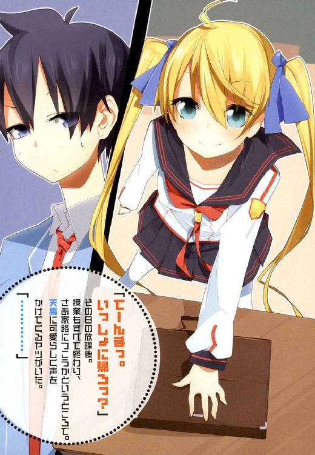

| 1×10藤宮十貴子は懐かない3 (富士見ファンタジア文庫) | |
| 鈴木 大輔 & ＰＡＮＤＡ | |
| 富士見書房 (2011) | |


本作品の全部または一部を無断で複製、転載、配信、送信したり、ホームページ上に転載することを禁止します。また、本作品の内容を無断で改変、改ざん等を行うことも禁止します。
本作品購入時にご承諾いただいた規約により、有償・無償にかかわらず本作品を第三者に譲渡することはできません。
本作品を示すサムネイルなどのイメージ画像は、再ダウンロード時に予告なく変更される場合があります。
本作品は縦書きでレイアウトされています。
また、ご覧になるリーディングシステムにより、表示の差が認められることがあります。
口絵・本文イラスト ＰＡＮＤＡ
ＡＣＴ１ 藤宮十貴子が戻らない
夜も更けたころに始まる藤宮家の恒例行事は、およそこんな感じで進行する。
 何かの気配に気づいて、一条天馬が目を覚ます。
何かの気配に気づいて、一条天馬が目を覚ます。
 ド深夜で真っ暗でロクに物も見えない中、まぶたをこすりつつ大あくびをする。
ド深夜で真っ暗でロクに物も見えない中、まぶたをこすりつつ大あくびをする。
 ベッドの中に潜り込んできている藤宮十貴子に気づく。
ベッドの中に潜り込んできている藤宮十貴子に気づく。
 十貴子はとても可愛い女の子で、なおかつめちゃくちゃ無防備な状態である。
十貴子はとても可愛い女の子で、なおかつめちゃくちゃ無防備な状態である。
天馬、襲ってしまうべきかどうかで悩む。
 悩んでるうちに十貴子が目を覚ます。
悩んでるうちに十貴子が目を覚ます。
 天馬、ひどい目にあう。
天馬、ひどい目にあう。
この日もやっぱりそうだった。
いいかげん学習しろよこの野郎、バカのひとつ覚えで毎回毎回──というご意見もあることだろう。
まったくもって正しい意見である。
他ならぬ彼自身がそう思うのだから。
（そうだとも。落ち着けおれ）
と、天馬は自らに言い聞かせる。
深夜の自室。ベッドに潜り込んで天馬に抱きつき、すやすや眠っている藤宮十貴子を見つめながら。
（お前はサルじゃない。れっきとした人間だろう一条天馬？ だったらいい加減そろそろ学んでいいはずだ）
十貴子がこうして抱きついてくるのは、天馬のことが好きだからじゃなくて、天馬から生命エネルギーを分けてもらわなければ生きていけない身体になったからで。
でもって天使みたいな寝顔で眠っているけど、ひとたび目を覚ませば悪魔の本性をあらわし、天馬をボロぞうきんに変えるはずで。
そんなのはもう、何度もくりかえし証明されているのだ。
他ならぬ天馬自身を実験台にして。
だから、さあ。
今日こそは学習の成果を見せようじゃないか。
藤宮に気づかれないように、そーっと、そーっとベッドから抜け出て。
そのまま部屋の外に逃げる。
たったそれだけですべては解決。
誰も血を流さず、誰も痛い目を見ることなく。何もかもが平和におさまる。世はすべて事もなし──。
「............」
でも、だけど。
頭でわかってることをぜんぶ実行できるなら、人類はとっくに神の域まで進化しているわけで。
（......ぐおおおおおおおうぜえええええええ！）
ああもうほんとにもう！ ほんとにもう！
どうしてコイツって、黙ってさえいればめちゃくちゃ可愛いんだろなあ!? ついだまされちゃうじゃん！ ちょっとぐらいならいいかな、って思っちゃうじゃん！
それにもうこの際だからぶっちゃけますけどね!? 正直いっておれ、かなりいやらしい男なわけですよ！ 女の子大好きなエロエロ大魔神なわけですよ！
そういうおれに対して、こういうタナボタ的シチュエーションを持ってくるのってさ、それってどうなのよ!? まじカンベンしてくださいよ神様！
......なーんてことをやってるから、いつものパターンにはまるのである。
「うげ」
頭を抱えて身もだえしていた天馬のくちびるが引きつった。
十貴子が目を開けていたから。
腰のあたりに抱きついたまま、きょとんとした表情で。
天馬のほうをじっと見つめ、めまぐるしく頭を回転させて。いま自分がどんな状況になってるか、理解しようとしているのがわかったから。
（終わたー!?）
こうなっては逃げ場はない。
寝起きの極端に悪い彼女に、状況が正しく理解できるとは思えない。つまりこのあと予測される彼女の行動その一、天馬が自分によからぬ行為を働いたとカンちがいする。その二、容赦のない魔法の嵐で彼をボロぞうきんにする──
「おはよっ、テンマ」
............。
え？
あれ？
「どしたんテンマ？ ヘンな顔して」
「へっ？ ああいや、ええと。あれ？ え？」
え？
なんで？
なんで怒らないの？
ていうか何でいきなり呼び捨て？
しかも関西弁で？
「......？ ヘンなテンマ」
予想外の展開に泡を食っている天馬を、不思議そうに見ていた十貴子だけど。それもほんの数秒の間。
やがて『にぱあ』と笑ったかと思うと、天馬の腰に『ぎゅううう』っと抱きついてきた。
「へ？ え？ う？」
抱きついてきた？
あの藤宮が？ おれに？
「えへへへへ」
混乱する天馬をよそに、十貴子は機嫌よさそうにすりすり頰ずりしている。
しかも『ぎゅううう』っと抱きついてるからには、身体と身体が思いっきり密着しているわけで。特にマシュマロみたいな胸の感触とかが大変なことになってるのだけど。今の天馬はそれどころじゃない。
（なにこれ？ 一体どうなってんの？ これってひょっとして夢の続きとか？ そういうオチ？）
と、その時。
「ごるあああああああ！ なにやってんのあんたらー！」
部屋のドアを蹴り開けて、誰かが突撃してきた。
「ちょっとあたしが寝てる隙に！ 許さないからねそういうのは！」
金色の髪に青い瞳。
ちっこい背丈を包む、フリフリたっぷりの服。
十貴子のライバルと言い張っている、自称・天才魔法使い──コレット・ラ＝サール。
「......え？ なに？ なんでお前ここにいんの？」
「ふしぎそうなカオするな！ ねぼけてんのかあんた!?」
きょとん顔の天馬にコレットが嚙みついてくるけど、解らないものは解らないんだからしょうがない。
だってここは藤宮家の、天馬の部屋なわけで。
天馬は藤宮家の住人だからここにいるのは当たり前だけど、どうして金髪のちびっこまでここにいるのか。
「なんだなんだ。騒がしいな」
と、そこへ。
蹴り開けられたドアの向こうから、もうひとつの人影が現れて、
「まだ真夜中だろう。もうちょっとゆっくり寝かせてくれないか」
「......って、おま」
今度こそ天馬は口をあんぐり開けた。
天馬より頭半分ほど高い身長の上に、見慣れたイケメン顔を乗せた少年。
かつて神童であった天馬からもっとも多くの影響を受けた少年であり、十年ごしの親友でもある人物。
「沢木？ だよな？ お前なんでここにいんの？」
「なんだ。また寝ぼけてるのか天馬」
あきれ顔で肩をすくめて、
「寝起きの悪さはホント相変わらずだな。なんならキンカンでも持ってこようか？ 目覚まし代わりに。ドクターペッパーでもいいぞ？」
そう。
親友が指摘する通りである。
寝起きが悪いのは、何も十貴子に限ったことじゃないのだ。
目まぐるしく状況が変化して、なかなか頭の回転が追いつかなかったけど。
ここへきてようやく天馬の目が覚めてくる。
（............あー。そうか。そうだった）
普段のきっついキャラが跡形もなく消えて、うれしそうにぎゅっと抱きついてきている藤宮十貴子。
それをみてツノを生やしているコレット・ラ＝サール。
そんな様子を冷静に眺めている沢木悠太郎。
（はいはい思い出した。思い出しましたよ......）
ようやく冴えてきた天馬の頭は、急速にあの日の記憶をさかのぼっている。
あの日──つまりはほんの昨日の出来事。
暴走した十貴子を命がけで止めたケガが治り、ふたたび藤宮家に舞い戻って。
十貴子とコンビを組み、彼女を世界一の魔法使いに押し上げることを誓った直後に、また例によってコレット・ラ＝サールがやってきてケンカを売ってきて。
そして負けたのだ。
藤宮十貴子が。
世界一にもっとも近い魔法使いと呼ばれ、圧倒的な強さでコレットを寄せ付けなかった、あの十貴子が──。
◆ ◆ ◆
細かいことはよく覚えてない。
というより天馬は、戦いの推移をほとんど見ていなかった。
だってコレット・ラ＝サールなのである。
何度も何度も十貴子にケンカを売り、そのたびにボロ負けしていた、あの金髪のちびっこが相手なのだ。
確かにコレットも一流の魔法使いではあったけど、でも十貴子との差はハッキリしていて。それは対戦成績からも、対戦の内容からみても明らかだったから。
だから天馬はまったく疑ってなかったのだ。彼がパートナーに選んだ少女が完勝することを。
それはまた、十貴子も同じだったはずである。
あの時の彼女はいつにもまして闘志がみなぎっていた。
何度負けてもこりもせずに突っかかってくるコレットに、十貴子はうんざりしていたはずだし、実際コレットにケンカを売られるたびにうんざり顔をしていたけど。
でもあの時ばかりは、まるで世界選手権の決勝に挑むアスリートみたいな、モチベーションあふれる顔をしていたから。
やる気がなくてうんざりしてても圧勝するのだ。やる気を出して本気になったら、そんなの一瞬でケリがつくに決まってる──天馬じゃなくたってそう考えるだろう。
だから天馬は見ていない。
いったい何がどうなって、どの瞬間に両者の力関係が逆転したのか。
彼が戦いの様子に目を向けた時にはもう、十貴子の劣勢は明らかで。
たった三十五秒で完敗するまで、その劣勢は一度もひっくり返らなかったから。
「..................。勝った」
ぶざまに尻もちをついて呆然としている十貴子を、どれほどのあいだ見下ろしていただろうか。
金髪の魔法使いがようやく声を発したのは、決着がついてから何十秒もたってからだったように思う。
「勝った......？」
敗者を見下ろしながら、もう一度コレットはポツンと呟く。
尻もちをついたまま凍りついてる十貴子よりも、めずらしく表情が固まっている山田さんよりも。そしてもちろんマヌケ面している天馬よりも。
たぶんその場で一番びっくりしていたのは、他ならぬコレット自身だったのだろう。
「────勝った！」
ほどなくして、ようやく状況を理解したちびっこの顔に満面の笑みが広がって、
「勝った！ 勝った！ 勝った勝った勝った勝った！ 勝ったあああああああ！」
他愛もなく喜びを爆発させる。
ぴょんぴょん飛びはね、『勝った勝った』と何度も叫んで。
まさかの番狂わせに誰もが沈黙する中、コレットの歓声だけが藤宮家の広大な庭園に響き渡って──
「勝ったな」
いや。
もうひとり声を発した人物がいた。
「ここまで上手くいくとは思ってなかったが......自分の型にハマるとほんとに強いんだな、彼女」
「............え」
その声のほうへ振り向いた天馬が、間の抜けた声をもらす。
木陰の暗闇から現れたそいつは、
「......沢木？」
「よう天馬。勝たせてもらったぞ」
何度見直しても間違いない。
幼なじみで親友の沢木悠太郎、その人である。
「............おま、なんでここに？」
やっとそれだけが天馬の口から絞り出される。
だってコイツがここにいる理由がないじゃないか。
たしかに沢木とは付き合いも長くて、信頼の置ける友人で。知り合ったころからずっと途切れることなくつるんでいたけど、でも──。
「お前のそんな顔は初めて見るかもな、天馬」
十貴子が負け、親友が現れて。
思ってもみなかったことが連続して、さぞかしアホ面をさらしていたのだろう。
沢木はそんな天馬を笑うでもなく、いつもみたいにお小言をいうわけでもなく、むしろ気の毒そうな顔をして、
「まあざくっと説明するとだな。俺は彼女と組んだ」
「......彼女？ ってちびっこのことか？」
「まあ同盟というか共闘というか、そんな感じだな。で、相棒になった俺はアドバイスをしたわけだ。コレットが藤宮に勝つための、ちょっとしたコツを教えた」
「............」
「で、勝った。つまりそういうことだ」
ほんとうにざくっとした説明だけど。事情はわかった。
わかった、ということにしておく。
（そんなことよりもさー......）
またかよ、と天馬は思うのだ。
藤宮が負けて、なんか知らんけど沢木まで現れて。
今度はその沢木が金髪のちびっこと組んだって？
なんで今日に限って、そんな訳わからんことばっかり起こるんだ？ 今日ってあれだろ？ おれと藤宮がコンビ組んで、これからいっしょに世界一を目指そうぜ！ っていう、そういう日じゃなかったっけ？
（せっかくやる気だしてみたらコレかよ......どうなってんだまったく）
理解不能という以前に、やる気に水を差されてとにかくウンザリ気分の天馬だったけど。
でも、本番はまだこれからだったのだ。
前途洋々なつもりでいた天馬の鼻っ面に飛んできたカウンターの一撃は、まだほんのジャブ程度でしかなくて。
この次に飛んできた一撃こそが、天馬をさらなるやっかいごとに巻き込む強烈なアッパーカットになるのである。
「さて、と」
喜びの爆発を一段落させたコレットが敗者の前に立った。
そのくちびるにはニヤついた笑みがたっぷり張り付いている。見ていてイラッとくるほどに。
一方の十貴子は、いまだに敗戦のショックから抜け出せないのだろう。尻もちをついたまま、目の焦点も合わないまま、何もない場所を呆然と見つめている。
「これまでずっと番狂わせがつづいてたけど、よーやくこのあたしが真の実力を発揮することができたわね」
「............」
「これであたしとあんたの差がハッキリしたんだから。あたしは昔からずっと天才で、あんたなんかはしょせんぽっと出の天才なんだから。まあさいしゅーてきにはこういう結果におちつくわけよね。うんうん」
「............」
「さて、と」
ひとしきり勝利の余韻にひたってから、コレットはニヤついた笑いをさらに深くする。
「勝ったのはあたしで、負けたのはあんた。勝者たるあたしは敗者たるあんたに、それにふさわしい立場を与えてあげなきゃいけないわよねえ？」
止めるもへったくれもなかった。そもそもこの時点での天馬は、コレットが何をするつもりかなんて分かりはしなかったのだから。
金髪のちびっこがおもむろに腕を伸ばし、手のひらを十貴子の前にかざす。
そのまま何やらもごもご口を動かし、ぶつぶつと小さい声で何かを唱え始めたのが聞こえて、そして──
◆ ◆ ◆
「こらっ、ときこ！ そいつのとなりに座るの禁止！」
「え......？ でもぼく、テンマのとなりがいい......」
「だめったらだめ！ 言うこときかないとあとでひどいよ!?」
「うう......でもぼく......」
ちらり、天馬のほうに視線を送ってくる十貴子だけど。
天馬としても、この状況にどう対応していいのか判断がつかない。ついでに言えば昨夜の騒ぎのせいで寝不足気味で、いまいち頭が働いてない、というのもある。
「まあいいじゃないかコレット」
先に席についていた沢木がやんわりたしなめる。
「こんな朝一からもめ事を起こすのも具合がよくない。朝食の席順ぐらいは藤宮の好きなようにさせてやったらどうだ？」
「やだ！ ときこはあたしのドレイなんだから、あたしの言うことはぜんぶ聞かせるの！」
「じゃあこうしよう。コレットのとなりに藤宮が座る。その藤宮のとなりに天馬が座る。これで丸く収まるじゃないか」
「それだとときこの思い通りになるからイヤ！」
「まあそのくらいは認めてやれ。ここでやさしくしておけば、藤宮はお前のことを今より好きになるかもしれないぞ？」
「............ふん。ときこがあたしをどう思っていようと関係ないけど、ドレイに対してかんよーな心を持つのも主としての器よねっ。今回だけは特別に、ときこの言うことを聞いたげる！」
藤宮家、朝食の席である。
食堂の丸テーブルの席順を決めるだけでもこの騒ぎだ。今後も事あるごとにこんな騒ぎが起こるのだろうと思うと、早くもげんなりしてくる。
「席はお決まりですか？」
メイドの山田さんがいつものニコニコ顔で一同を見回して、
「それではお食事をお持ちいたしますので、しばらくお待ちください」
完璧な一礼を残し、厨房のほうへ消えていく。
先日来、山田さんはおおむねあんな感じである。メイド仕事をひたすらこなし、現在の藤宮家の状況に対しては一度も口を出していない。
天馬にしてみればこういう時にもっとも頼りになるのが山田さんなんだけど。さしあたり彼女からのアシストは期待できそうにないわけで。
「ね。ね。テンマテンマ」
はてさてどうしたもんか......と頭を悩ませてる天馬に、十貴子が横から声をかけてくる。
「ん？ なに？」
「えっとな、んっとな」
次々と並べられていく朝食の皿と、天馬の顔を交互に見ながら「えへへ」と笑って、
「ぼく、テンマにお願いがあるんやけど」
「お願いって？」
「うんとな、ぼくな。テンマに『あーん』したい」
「はあ」
『あーん』とは一体なんぞや？
『ああん!?』みたいな感じでメンチを切りたいとか、そういうこと？
......などと心の中でひとりボケしてみるけど。照れくさそうにもじもじしている十貴子の様子からして、ケンカを売ってきてるはずもなく。
「ええとつまり？ 君が手ずからおれに朝メシを食べさせたいと？ そういうこと？」
「うん！」
にぱあっ、と明るい顔で笑う十貴子だけど。天馬のほうは「あはは......」と愛想笑いを返すしかない。
「だめ......なん？」
天馬の反応をみて、たちまちしょんぼりする十貴子。
「あーいや。だめというかね？ なんというかね、そのね」
「なんというか......なに？」
「ええとつまりまあ、男と女がそういうことするのにはね、とても高いハードルをたくさん越えなきゃいけないわけで。でもっておれと君はね、そういう障害物をまだまだたくさん残してると思うんだ。うん」
「ぼく、むつかしいことようわからん......」
しょんぼりするだけじゃなくて、目じりに涙がたまり始めた。
「あーいや！ ええとつまりね、どうしようかなこれ！」こうなるともう天馬としても白旗をあげるしかない。「えーとつまりこういうことなんだよ！ 君から『あーん』してもらうのはとてもうれしいので、ぜひお願いします！ はい！」
「......ほんまに？」
「ほんまほんま！ まじっすから！ 自分不器用っすから！」
「......えへへ。ありがとテンマっ。そんならさっそく──」
「ってこらあ！」
『主としての寛容な器が云々』とか言ってた手前か、それまでイライラと成り行きを見守っていたコレットだけど。ここへきて爆発した。
「あんたたち、だまって聞いてれば好き勝手なこと言って！ 主人であるあたしの許可もなしになに勝手なことしてんの！ そんなに『あーん』がしたいならあたしにしなさいよねっ！」
「え......？ なんでコレットに？ ぼく、テンマにしてあげたいん......」
「いーからあたしにしなさい！ でないと罰として、朝ごはんはあんたの嫌いなグリーンピースだけ食べさせるわよッ!?」
────さて。
そろそろひとことでまとめてしまおう。
なぜ十貴子のキャラがすっかり変わってしまっているのか？
なぜコレットと沢木までもが当たり前の顔して藤宮家にいるのか？
『十貴子を子供（十年ぐらい前の）に戻す魔法』
......を使ったのである。
コレット・ラ＝サールが。
藤宮十貴子に対して、敗北の見せしめとして。
『んなアホな!?』
とは、もちろん天馬も思った。
魔法ってそんなことまでできるの!? とか。
ていうか藤宮は藤宮で、そんな無茶な魔法にあっさり掛かっちゃうわけ!? とか。
『それはまあ、魔法ってそういうものですから』
と語ってくれたのは山田さんである。
『もちろんいつものお嬢さまであれば、そんな魔法には掛からないでしょうけど......コレットさんに負けた直後で、お嬢さまも普通の状態ではありませんでしたから。ほら、たとえるなら風邪みたいなものです。風邪のウイルスって普段から空気中にいますけど、体調が万全の時であればめったに掛かるものじゃありませんよね？ でも身体が疲れてる時とか、気温の差が大きかった日とかには、案外あっさり掛かってしまう。それと同じようなものです』
......という、ことらしい。
まあそれはそれでいい。魔法に関しては天馬はド素人だし、きっとあちらの業界ではそういうことも普通に起こりうるのだろう。
問題は、コレットの掛けた魔法の影響が、風邪どころの話じゃ済まなかったことである。
（この状況......一体どうすりゃいいんだ？）
天馬に『あーん』をしてあげられなくてしょんぼりしている十貴子と、その十貴子に無理やり『あーん』をさせてご満悦なコレットを眺めながら思う。
自称『ときこの主』になったコレットと、そのコレットにくっついてきた沢木については、ひとまずおくとしよう。
いま現在の最大の問題は、十貴子が文字どおり子供の状態に戻ってしまったこと。
そして子供の状態に戻ったのはあくまで中身だけで、外見に関しては十五歳の女子高生のままである、ということだ。
（どうせなら身体も子供に戻ってくれてればなー）
無茶いうなよ、と我ながら思いつつもボヤきが止まらない。
なにしろ子供状態に戻った十貴子は、すっかり天馬に懐いてしまっているのだ。
そのこと自体はいい。何の問題もない。
これまで『それってどうなのよ？』というレベルで彼女から冷たく当たられてきたことを思えば、ある意味いまのほうがぜんぜんマシだ。子供に懐かれること自体はうれしいものだし、天馬自身けっして子供がきらいなわけではない。仮に十貴子が親戚の子供か何かであれば、よろこんで抱っこもしてあげるし頭もなでてあげるだろう。
でも、だがしかし、である。
実際には十貴子は子供でもなんでもなく、れっきとした十五歳の女子高生──しかも平均レベルをはるかに超えた可愛い女の子なわけで。
（夜中にベッドに潜り込んでくるのは、まあしょうがない。おれから生命力を分けてもらわなきゃ生きていけないんだし、そうなった原因はおれにあるわけだし。でもなあ、それ以外でもべったりくっつかれるとなあ......）
それより何より、記憶とともに魔法の力まで退化したのが痛い。
今の十貴子は魔法使いとしての能力まで子供に戻っているらしく、このままでは当然ながら『世界一の魔法使い』を目指すことなんてできやしないのである。
彼女の夢をサポートする立場の天馬にとって──十貴子の夢が自分の夢にもなった天馬にとって、それはとても困る。
（で、その藤宮を元に戻すには......当然ながら、魔法を掛けた張本人をどうにかしなきゃいけないんだけど......）
「ちょっと。なに見てんのよ」
目ざといちびっこである。
天馬のウンザリした視線に気づいたらしく、コレット・ラ＝サールは人間を警戒する子猫みたいな目でにらみ返してきて、
「言っとくけどあたし、あんたのことキライだから。そんな風にじろじろ見ないでくれる？ 気持ちわるい」
そうなのである。
かつての戦いで天馬によって一杯食わされ、しかも子供十貴子に大変よく懐かれている天馬は。金髪のちびっこから思いっきり目の敵にされているのだ。
（この調子じゃ、土下座して頼んだって言うこと聞いてくれないよなあ）
ふたたび天馬は頭を抱える。
あかん。
どうすんだこれ。
完全におれがどうこうできるレベルを超えてないか？
しかもこの上もうひとつ、極めつけの問題があるんだよな。
まあこれに関してはおれが被害をこうむってるわけじゃなくて、藤宮のやつが一方的に被害をこうむってるわけだけど......つーかそれにしてもさ、こいつって何でいきなりおれにベタベタするようになったの？ そりゃまあ子供時代に戻ったってんなら、今よりずっとひねくれてなくて素直な性格だったのかもしれんけど......それにしてもここまで懐かれる理由がないよなあ？ ていうか子供に戻ったとたんに関西弁になって、自分のこと『ぼく』とか言うようになったけど。そういやこいつ、ちょっと前にもそういうしゃべり方してたことがあったよな。
──ていうか何だろ？
なんか昔、こいつみたいなヤツがいた気がするぞ？ うん、いたよぜったい。
おっかしいな......何か忘れてるような気がする。
うん。ぜったい忘れてる。
めちゃくちゃ大事なことを、何か。
なんだろこの気分？ かゆいところに手が届かないみたいな、知ってるはずの答えをド忘れしてるみたいな。あーもーもどかしい。めっちゃもどかしいよこれ。
ええいとにかくあれだ。
やっぱこれ、おれじゃ処理しきれません。いろんなことが一気に起こりすぎです。
そしてこういう時に頼りになるのは、やっぱアノ人をおいて他にいないでしょう！
藤宮との付き合いも長い業界通！
ほほえみの女神にして頼れる美人メイドさん！
さあみんなで呼ぼう！ 唯一にして絶対的な救世主の名を！
山田さーん！
山田さん助けてー！ ヘルプミー！ ヘルプミー、ジャストナウ！
＊
......天馬が哀れっぽい目線を送ってきていることには、もちろん気づいている山田さんだけど。
（まあアレですよ天馬さん。わたしにだってどうにもならないことが、世の中にはたくさんあるわけです。はい）
全力で気づかないふりをして、ニコニコ微笑んでいるのであった。
だって、本当にどうしようもないのである。
（魔法って、はたから見るよりぜんぜん複雑なものなんです。何しろ人間の『心』が源になってる技術だから。うつろいやすい上に、魔法を使う個々人によってまったくロジックが違ったりするんです）
キッチンに引っ込んでデザートを用意するフリをしつつ、すでに天馬には語って聞かせた説明を頭の中でくりかえす。
（つまり、コレットさんが使った魔法の中身はコレットさんにしかわからない。魔法の影響がどのくらいお嬢さまに根を張っているのかもわからない。それを承知の上で魔法の解除を試みるのは無謀です。『病気の原因はわからないけど、病気だってことだけは分かってるから、まあとりあえず手術してみよっか』とか言うのと同じくらいに）
というわけで、十貴子に掛けられた魔法を解くためには。
魔法を掛けた張本人であるコレットが、自らの意志で魔法を解く。これが一番まっとうな手順なのだけど。
（まあこれは難しいですよね......コレットさんって、お嬢さまを昔みたいに服従させるのが念願だったわけですし）
であれば、コレットの気が変わるようにアプローチしてみるのはどうか。
（たとえばラ＝サールの一族の誰かに頼んでみるとか？ コレットさんを説得してもらうように）
コレットの出身であるラ＝サール家は『業界』きっての名門。『協会』における発言力も大きい。コネもいくつか心当たりがあるし、そちらの方面を当たってみるという手もなくはないのだけど。
でもこれはいまいち現実的な案とは言いにくかった。なにしろコレットの一族は名門であると同時に、魔法使いという人種の『特性』をこり固めたような連中ばかりなのだ。
魔法使いの特性とはすなわち、『自己中心的で個人主義的で、ひいては享楽主義的で放埒的で、時どき厭世的』な性質である。
人間というよりも、むしろ妖精とか精霊とかに近い彼らだから。今回の話を聞けば、問題を解決するどころか面白がって火に油を注ぎかねない。むしろ全力で今回の件を伏せておく必要がある。
（幸いそちらの方にもコネはありますから、この件に関しては情報を流さないようにお願いしてありますけど──）
ふむ、と頷き、山田さんはパチリと指を鳴らす。
すると彼女の目の前に、ぼんやりと輝く長方形の何かが浮かび上がった。
『新聞』と呼ばれている、魔法使い御用達のいわば業界紙である。
（うん。昨日の件については書かれていませんね）
──仲の悪かったどこぞの魔法使い同士が仲直りした。
──行方不明になっていたどこぞの使い魔が無事に戻ってきた。
目新しいニュースはその程度である。基本的にあまり波風の立たないこの『業界』にふさわしい、どうでもいいニュースしか載っていない。
紙面をざっと眺めて確認し、ふたたびパチリと指を鳴らすと、煙か霞のように『新聞』はかき消える。
（......とはいえ時間の問題でしょうね。今回の話が知れ渡るのも）
人の口に戸は立てられぬものだし、いずれ必ずウワサは流れる。
そして『世界一にもっとも近い魔法使いが負けて、しかもドレイにされた』なんて話が広がれば、この『業界』の連中がそっとしておいてくれるはずもない。そうなればどんな面倒が起きるか知れたものではなく、できればその前に決着をつけたいのだが。
（もちろんそれだけじゃないんですけどね。早めにケリをつけたい理由は）
ちらりと食堂のほうを見やる。
十貴子に懐かれ、コレットに歯をむかれて途方に暮れている一条天馬。
一番まずいのは彼だ。
（天馬さんにとって、今の状況は刺激が強すぎる）
なにしろ子供のころに戻ってしまった十貴子が、十年前とそっくりそのまま──いや、それにもまして親密なやり方で天馬に接しているのだから。
あんな状況じゃ、彼の記憶を封印した『鍵』がいつどの瞬間にこわれてしまうか知れたものではない。
（それなら天馬さんとお嬢さまを一時的にでも引き離しておく？ でもそれだとお嬢さまが生きていられなくなっちゃいますよね。だったらまだしも、天馬さんをしばらく眠らせておいたほうがいいかしら？ これだったら『記憶が戻る』という最悪の状況は防げるかもしれないけど）
が、いずれにしても根本的な解決にはならない。場合によってはよりいっそう状況を悪くする可能性もある。
（八方ふさがり、ですか）
いやはや、ややっこしい事態になったものだ。今回もまた。
まあでも、まだしも山田さんはマシなほうである。
今回の件でもっとも貧乏くじを引いているのは、彼女でもなければ天馬でもない。
ダントツで藤宮十貴子、その人であろうから。
なぜなら──
「うわあーん！ やっぱこんなのイヤやー！」
食堂の方で金切り声が上がった。
見れば十貴子が席から立ちあがり、涙目でコレットに食って掛かっている。
「ぼく、やっぱりテンマに『あーん』したい！ コレットなんかに『あーん』したくない！」
「な、なんですって!?」
コレットもまた目をつり上げて立ち上がり、
「ときこのくせになまいきよっ！ あんたはあたしの言うことを聞いてればいいの！」
「やだ！ 聞きたくない！」
「聞かないとあとでひどいんだから！ 抵抗したって無駄なんだからね!? あんたなんか、ぜったいあたしに勝てるわけないんだから！」
「やだー！ やだやだやだやだ！ ぼくはテンマに『あーん』するんやもん！ コレットやなくてテンマに......てんま、に、あーん......を？」
じたばたと駄々をこねていた十貴子の声が、だんだん尻切れトンボになっていく。
涙目をきょとんと丸くして、振り回していた手足をぴたりと止めて。
「あ......」
肩にこめていた力をゆっくり抜きながら、おそるおそる左右に視線をやる。
右側には『しまった』という顔で舌打ちしているコレット。
左側には『あーはいはい』という納得顔をしている天馬。
「よう藤宮」
その天馬が片手をあげた。
なんともいえない苦笑いをしながら。
「目、さめた？」
「あ」
「いやまあ......なんというか、ね？ あんま気にすんなよ。な？」
「あ、あ、あ、あ、あ」
口もとをわななかせた十貴子のほっぺたが、きれいな赤色に染まっていく。
まるでＣＧツールでも使ったみたいにくっきりと。
「ち、ちが、わたし、そんな──そんなつもりじゃ、『あーん』とか、そんな」
「いやわかってる。わかってるから何も言うな。お前のせいじゃないって」
「ち、ちがうんです！ ほ、ほんとにわたし、そんなことしたいと思ってるわけじゃなくて、これは、その、子供のわたしが、勝手に──」
と、その時。
「ばかばかどじどじまぬけでのろまなばかときこッ！」
突然コレットが叫び、ちんまい手のひらを十貴子に向けてかざした。
「あ────」
光も音も何もない。
ゲームとか映画みたいに派手なエフェクトがあるわけでもない。
それが魔法というものである。
発動、しかるのちに発効。
ましてコレットほどの魔法使いであれば、なおさらのこと。
「......ぼ、ぼく」
涙目に戻った十貴子が、なおも抵抗を試みる。
「ぼく、やっぱテンマに『あーん』したい......」
「ふん！ だめったらだめなんだからね！」顔を真っ赤にしたコレットが、ハアハア息を切らしてわめく。「ましてこのあたしに無駄な手間かけさせるあんたの言うことなんか、ぜったい聞いたげないんだからね!?」
......さて。
おおよそ理解していただけただろうか？
（哀れすぎます......）
一連の光景を見て、思わず十字を切ってしまう山田さんであった。
そう。
コレットが十貴子に掛けた『子供に戻る魔法』は、どういうわけかふとした瞬間に解けてしまうことがあるのだ。
魔法が解ければ当然、十貴子は元にもどる。
もどった十貴子を、コレットが魔法を使ってまた子供にもどす。
先日来、すでに何度かそういう事態が発生している。
（しかもお嬢さま、子供状態にもどってる時の言動もきっちり覚えてるみたいなんですよね、どうも）
おそらく『子供にもどる』という状態は、十貴子を仮初めの二重人格にすることによって擬似的に成立させているのだ、と山田さんは考えているのだけど。さしあたり問題なのはそこではなく。
想像してみるといい。
『あの』藤宮十貴子が──不本意ながらではあるが、天馬に対してはキツい態度を取らざるを得ない十貴子が。魔法によって強制的に子供に戻され、天馬にべたべた甘えてしまう。そんな自分を素直に受け入れられるだろうか？
（まあそれができたら苦労しないですよね......）
しかもおそらく。いや、たぶんまちがいなく。
子供状態になっている十貴子の言動は、日頃の反動なのである。
自分の正体を天馬に明かしたくても明かせない。ほんとうはもっと仲良くしたいのに、『誓約』があるゆえに叶わない。その反動が、子供状態にもどった途端に一気に出てしまうのだろう。
が、そんなのどうしようもないではないか。
精神年齢が一気に低くなってしまった十貴子にまで、普段どおりの自制を求めるのは。いくらなんでも酷というものだろう。
（こうなったらもう、うんと甘えてくださいな。お嬢さま）
この際、後先のことは考えまい。
少なくとも天馬といっしょにいる子供十貴子は、いつも幸せそうな顔をしている。普段であればぜったい見ることのできない顔だ。その点に関してだけはいっそ、コレットにお礼を言ってもいいくらいである。
（それに『ふとした瞬間にもどる』ということは、魔法の拘束力が思ったほど強くないということかも知れません。あるいはお嬢さまの『元に戻ろう』とする意志の強さの表れなのかもしれませんけど）
いずれにしても、コレットの魔法は決して完全なものではない。
ほころびはある。だったら必ず突破口もある。
それに実をいうと、山田さんにはまだいくぶんの余裕があるのだ。
なぜならひとつだけ、コレットの魔法を解く方法にアテがあるから。
（であれば、まずは成り行きを見守る、ということにしましょうか）
天馬の記憶が戻ってしまうことにだけ気をつけて、あとは状況がどう動くかを見守る。その上で解決の道を探っていくのがいいだろう──
と、その時。
「コレット」
一連のさわぎを静かに見守っていた沢木が口を開いて、
「藤宮があそこまで言ってるんだ。少しぐらい言うことを聞いてやってもいいんじゃないか？」
「さわき、あんたは黙ってて！ これはあたしとときこの問題なんだから！」
「ふむ。じゃあこうしよう」
食後の紅茶をゆっくり飲みつつ、
「コレットは藤宮に『あーん』をさせる。満足するまで何度でもやっていい。そのご褒美として、藤宮は一回だけ天馬に『あーん』をしてもいいことにする。そのへんで手を打たないか？」
「やだ！」
「ドレイに対して寛容なのも主としての器なんだろう？」
「そうだけど、でもやだ！」
「あんまり藤宮に悲しい思いをさせるのはよくないな。悲しみすぎて、ひょっとすると藤宮が壊れてしまうかも知れない」
「............それは、困る！」
「まあしょせんは一回だけだ。一回しか『あーん』してもらえない天馬に、何回でも『あーん』してもらえるところを見せつけてやる......悪くないアイデアだろう？」
「............それは、悪くない！」
「じゃあその方向でいくか？」
「その方向でいく！ というわけでときこ、一回だけなら『あーん』してもいいわ！ このへんちくりん男に！」
「......え？ やるの？ けっきょく？」と天馬。
「なにあんた!? 文句でもあんの!?」
「いやまあなんつーか、できればおれの意志も尊重してほしいなというか何というか」
「テンマ......いやなん？」今度は十貴子が涙目。
「ああいや！ そういうわけじゃなくて──」
「ちょっとへんちく男！ あたしのドレイを勝手に泣かすな！ ──さあときこ、さっさと『あーん』してやりなさい！ いい!? 一回だけだからね!?」
テーブルでまた何やらトラブルが起き、すぐに収まったようだ。
問題はそれを収めた人物である。
（沢木悠太郎くん、ですか）
この少年だけは、山田さんにとってまったく計算外の要素だった。
天馬の親友ということで、多少の情報はもっていたけど。しかしまさかここにきて、こんな形でしゃしゃり出てくるとは。
（彼って魔法使いとは何の関係もない、ごく普通の人だったはずですよねえ）
ならば一体どこで魔法との──コレットとの接点を持った？
おそらくは天馬がらみ──といっても、天馬と魔法の接点からしてせまい範囲に限定される。そんなに機会は多くなかったはずだ。
いちばん可能性が高いのは、前後不覚になったコレットが学園で暴れた時だろうけど。だとすれば完全に山田さんのミスである。あの事件の処理はすべて、彼女が責任をもって引き受けていたのだから。
（彼、いったい何が目的なのかしら？）
今のところ、コレットと手を組んだということが分かっているのみ。それ以外のことについて沢木は口を閉ざしているが。
気むずかしいコレットともまずまず上手くやっているようだけど、どうやって彼女を手なずけた？
そして十貴子が負けた原因に、どうやら沢木が絡んでいるらしいのだけど。コレットに入れ知恵したという彼は、いったい何を吹き込んだのだろうか？
（いずれにしても要注意、ですね）
とりあえずコレットにくっついて、なし崩し的に藤宮家に居着いてる沢木だけど。このまま何もアクションを起こさずに終わるとは思えない。
（まあ準備はしておきましょうか。いろいろと）
渋い顔で口を開けている天馬と、照れくさそう＆うれしそうに『あーん』をしている十貴子を見ながら。
山田さんの頭脳は、いろんな種類のそろばんを目まぐるしくはじき始めている──
ＡＣＴ２ 一条天馬は気が抜けない
状況の変化が目まぐるしすぎて途方に暮れている天馬だけど。
そんなこととは関係なく、日常は遠慮なしにやってくる。
日常──すなわち学園生活。
天馬、十貴子、そして沢木の通う星邦学園は、まずまず名門と言っていい学校法人だ。
豊富な寄付金に支えられた教育は父兄の評判もよく、自主自立を重んじる校風は生徒たちからの支持も厚い。
そんな学園でもっとも有名な人物といえば、ご存じ藤宮十貴子である。
容姿端麗、学業優秀、スポーツ万能。しかも名家のお嬢さま。
絵に描いたような経歴に加え、全校生徒（天馬をのぞく）に対して人当たりのいい彼女の人気は、入学以来不動のトップ。
近ごろは一条天馬などという残念な男のそばにいるために、男女問わず多くの生徒たちをがっかりさせてはいるけど。それでも彼女のカリスマはまだまだ健在──の、はずだったんだけど。
「ね、ね。テンマテンマ」
「な、何？ 教室の中ではできるだけ大人しく──」
「なんでみんな、ぼくのほうじっと見てるん？ ふしぎそうな、きょとんとした顔して──なんかぼく、いごこち悪い......」
そりゃそうだ。
普段はもっとびしっとしてるお前が、今日に限って不安そうにきょろきょろしてたら。そりゃクラスの連中も『どうなってんだ？』っていう目で見てくるっつーの。
......なんてことは分かっていても口にせず、
「まあ気にするな。ていうか、みんながお前の変わりっぷりに気づくと後が面倒だ。できるだけ黙っててくれ。打ち合わせのとおりに」
「う、うん。せやけど......」
星邦学園、朝のホームルーム前の教室。
いつもとは別人のような雰囲気の十貴子は、とにかく目立っていた。むしろ浮きまくっていた。
天馬としてはとにかく面倒ごとを避けたい。十貴子には無言を通してもらって、彼女の身に起きた異変がバレないようにしたい。
本当ならこんな時ぐらい学校を休ませたかったんだけど、『とある事情』があってそういうわけにもいかず......
「ねえねえ。藤宮さん藤宮さん」
とそこへ、ひとりの生徒が近づいてきた。天馬もよく知っているクラスメイトで、学級委員長をやってる女子である。
「なんかさ、さっきから見てるんだけどさ。今日の藤宮さんって、なんかいつもと違くない？ どこか具合でも悪いの？」
「いや？ 別にどこも悪くないっしょ」
答えようとする十貴子をさえぎり、天馬が愛想笑いで相手をする。
「いつもとちがうとか言うけど、別になーんも変わらないよな？ いつも藤宮といっしょにいるおれが言ってんだ、まちがいないぜ」
「天馬くんは黙ってて。あたしは藤宮さんに聞いてんの。......ねえねえ藤宮さん、ぜったい何かあるよね？ だっていつもの藤宮さんってそんなにびくびくしてないし。それにいつもの藤宮さんって、もっと天馬くんに対してぴりぴりしてるのに、今日はそんな感じもないし。ていうかむしろ、天馬くんに対してなんかべったりな感じだし」
「う......あ......」
追及された十貴子は、眉をハの字にして困り顔。
『しゃべるなよ？ しゃべるなよ？』オーラを出してる天馬と、『言っちゃいな？ 言っちゃいな？』オーラを出してる委員長を見比べている。
「......あーわかった。さては天馬くんに口止めされてるのか。ちょっと天馬くん？」
「ん？ なに？」
「なに隠してるの？」
「なんの話だよ？」
「とぼけてもダメ。あたしだけじゃなくて、みーんなわかってんだから」
ね？ とでも言わんばかりに周囲を見る委員長。
「クラスの平和を守るのは委員長のつとめですから。クラスメイトの藤宮さんに異変がある以上、あたしにはそれを聞く権利があります」
「いやいや知らねーって。なに言ってんのかわかんねーって。藤宮だって何も言ってないじゃんか」
「口止めしてるくせによく言うわよ。......ねえ藤宮さん。困ったこととかあったらちゃんと言ってね？ なるべく力になるから」
「............」
うつむいて視線をさまよわせている十貴子に、委員長はニッコリ笑顔で、
「前から気になってたのよね。ほらあたし、いちおう委員長だからさ。一年生の藤宮さんが急に二年生あつかいになって、うちのクラスに来て。しかもなぜかいつも天馬くんといっしょにいるようになって、今じゃ天馬くんといっしょに暮らしてるって話だし。でもってそれってぜったいヘンだし」
「............」
「ねえ藤宮さん。もし彼があなたにひどいことしてるなら、遠慮なく言ってね？ だって天馬くんっていつもグータラで、なに考えてるのか分からないところあるから。ひょっとすると、裏で藤宮さんの弱みを握るか何かして、藤宮さんをおどしてるとか。そういうこともあるのかな、って思うのよ。もしそうだとしたらあたしも委員長として考えが──」
「て、テンマは！」
そこで十貴子が叫んだ。
うつむいていた顔を『きっ』と上げ──その時ばかりは元の彼女に戻ったみたいに胸を張って、
「テンマはそんなことせんもん！ そんな男らしくないことゼッタイせえへんもん！ それにテンマはグータラなんかとちゃうもん！ かっこよくてびしっとしてて、ずっとぼくのあこがれやったんやもん！ だからテンマはぜったいそんなことせえへん！」
「......あ。はい」
いきなり大声をあげられて、委員長はきょとんとしている。
それ以上に天馬もきょとんとしていた。
『黙ってろ』という約束を十貴子が破ったからではない。
彼女の口ぶりが、まるで昔から天馬を知ってるように聞こえたから。
（いやでもそんな、ねえ？）
そんなばかな、というやつである。
同じ学園にいてさえ、十貴子のことをろくに知らなかった天馬である。昔からの知り合いであるわけがない。
......いやでも待てよ？ 確かに昔、こんなようなヤツがいたような気がするな。おれに才能あるって信じてて、ずっとおれの後ろにくっついてたヤツが──ってああそうか、それって沢木のことじゃん。昔のあいつって、わりとこんな感じだったよそういえば。でもあいつの場合、もうちょっとちがうタイプだった気がするんだよなあ......関西弁で話すわけでもないし。あいつの場合はもっとこう──
と、その時。
「ごるああああああああッ!?」
教室のドアを蹴り破って登場したヤツがいた。
「ときこをいじめるバカはどこ!? ときこの悲鳴が聞こえたわよッ！」
おなじみの金髪ちびっこ魔法使い。コレット・ラ＝サールである。
「ちょっとそこのへにゃ男！」
十貴子といっしょにいる天馬を目ざとく見つけて、
「あんた、あたしが転入の手続きをしてる間にあたしのドレイを泣かすとはいい度胸じゃない！ みのほどを思い知らせてやるから表に出──」
『きゃ──────っ!?』
コレットのセリフが途中で押しつぶされる──一斉に押し寄せてきたクラスメイトたちに囲まれて。
「ちょっとなにこの子!? 超カワイイんだけど！」
「金髪だよ金髪！ それに目も青い！」
「そして背がちっちゃい！ 小学生かな!?」
「え、でもウチの学校の制服着てるよ!?」
「ごるああああああッ！」もみくちゃにされたコレットがブチキレる。「あたしはオモチャじゃない！ 放せこら！」
「ねえねえ、あなた誰？ どこの国のひと？」
「学校の関係者？ 誰かの親戚か何か？」
「ていうかカワイイ！ ほっぺたつるつる！ そしてぷにぷに！」
「ちょっとずるーい！ あたしにも触らせて！」
「だ・か・ら！ 放せっつってんのに！」次から次へと伸びてくる手をうっとうしそうに振り払って、「どうしてこの国の連中って、ガイジンを見るとこーゆー反応するわけ!? どうせあたしは今日からこのクラスに転入するんだから、すぐにめずらしくも何ともなくなるわよッ！」
『えー!? うっそー!?』
ここへきてさらに盛り上がるクラスメイトたち。
「転入ってどういうこと!? だって小学生じゃん！」
「あたしは今年で十八だッ！」
「うっそー!? まさかの年上！」
「えー!? でもなんで年上なのにウチのクラス!? ここって二年のクラスだよ!?」
「あーもーうざいうざいうざいうざい！ 説明してあげるからちょっとはなれ──って、こらあ!? ときこはどこいったの!? どこに逃げた!?」
逃げたというか逃がした。
もちろん天馬が、である。
（やれやれ。とりあえず今回は助かったかな？）
騒ぎのスキをみて十貴子を廊下に連れ出し、ホッと一息。
（つっても......これでぜんぶ台無しだよなあ）
十貴子の手を引いて避難できる場所を探しながら、今度はフウとため息。
『ときこといっしょの学校へ行く』
と言って聞かなかったのだ。コレット・ラ＝サールは。
十貴子がこんな状態になった上、金髪のちびっこまで加えて学園に行けば。ろくなことにならないのは目に見えていたし、事態がいよいよややこしいことになるのは明らかだったけど。とにかくいま現在、主導権を握っているのはあのちびっこだ。彼女の言うことにはなるべく従うしかない。
（あの調子だとちびっこのやつ、何でもかんでも洗いざらいしゃべっちまうな）
いちおう口止めもしておいたけど、『なんであんたの言うことなんか聞かなきゃいけないのよ』という態度だったコレットである。期待したところでたぶん無駄──
「......えへへ」
「ん？ どした？」笑い声に振り返る。「なんかあった？」
「ううん。なんもない。ただ──」
十貴子はちょっとほっぺたを染めて、だけど顔いっぱいに笑みを乗っけて、
「テンマとこうして手つないでるのが、うれしくって。えへへ」
「......あーすまん。つい勢いで。......離した方がいいよな？ 周りからも見られてるし」
「ううん！ このままがいい！」
「あ......そう？」
「うん！ このまま！」
「......そんじゃま、このままで。とりあえずホームルーム始まるまで時間つぶしてようぜ。周りの連中がみんなこっち見てるから、なるべく目立たないところで」
「うん！」
にっこり、百点満点の笑顔と返事が返ってくる。
（なんとまあ。素直でいい子ですこと）
これってほんとにあの藤宮十貴子？
って思うくらいの別人っぷりだけど。
（どうも調子狂うよなあ......）
というのも正直なところだ。
天馬にだけ風当たりの強かった十貴子が、今ではむしろ天馬にだけ懐いているこの状況。
子供のころの彼女と今の彼女が、いろんな意味でちがうのは当然としても。
それだけではどうにも説明がつかない気がする。
（とにかく、なるべく何も起こりませんように。せめて今日一日だけでも）
祈るようにそう願う天馬だったけど──
＊
（......まあそんな都合よくいかねーか、やっぱ）
昼休み。
特別棟校舎のひとけのないトイレでひとり、天馬はげっそりしていた。
期待を裏切ってというか予想どおりというか。コレット・ラ＝サールという異物が入り込んだ学園はてんやわんやの大騒ぎ。
そして当然のごとく天馬もその渦の中心に引きずり込まれたわけで。その疲れっぷりはお察しくださいというやつである。
（つってもケガの功名というかなんというか。とにかくあのちびっこが目立ってくれるおかげで、肝心なところにはあまり注目が行かなくて済んでるけど）
十貴子が現在、子供のころの状態に戻っていること。
十貴子がコレットの『ドレイ』であること。
その他もろもろ、『できれば黙っててほしい』と頼んでおいたことのほとんどをあっさりブチまけてくれた時には頭を抱えたものだけど。結果としてはコレットがいい目くらましなってくれた。天馬がこうして一息入れられるのは、ある意味そのおかげである。あとたぶん、山田さんが『ま、いっか』の魔法とやらを学園全体に掛けてくれてるらしいから、その効果もあるのだろう。
そのコレットは現在、薄い胸をふんぞり返らせつつ、『ドレイ』の十貴子を引き回して校内を練り歩いているはずである。
（まあ魔法に関係することとか、ほんとにヤバそうなことはしゃべらなかったし......とりあえずはこれでよし、ってことにしとかなきゃな）
十貴子は天馬と引き離されて、泣きそうな顔をしてたけど。今は耐えてもらおう。天馬にくっついてないと生きていけないとはいえ、すぐにどうこうってことはないだろうし。
「よう天馬」
そうこうしてるうちに背後から声が掛かった。
聞き慣れた、そして期待していた声である。
「......なあ沢木」
「なんだ？」
「なんかさ、最近お約束になってきたな。ここでお前と落ち合うのって」
「そうだな。なんだか逢い引きみたいだな」
「逢い引きか。きめぇな」
「といっても、腹を割ってゆっくり話し合うにはこういうロケーションが必要だろう？ それとも場所変えるか？」
「いやまあ。どこ行ったって大して変わんねーし」
そんな時間があるなら少しでも多く話をしたほうがいいだろう。
「何から聞きたい？」沢木も心得たもので、さっそく本題に入ってくる。「答えられることにはできるだけ答えるつもりだが」
「そうだなあ」
天馬は「ふむ」とあごをさすってから、
「あのちびっことはどこで会った？」
「コレットがこの学園で暴れた日。おまえと藤宮を相手に派手なケンカをやらかした、あの日だな」
「どうやってあのちびっこと組んだわけ？ あいつ、そう簡単には他人と組みそうにない感じだけど」
「だいたい想像つくだろう？ そのころの俺が疲れて眠そうにしてたこと、気づいてたはずだしな。まあなかなか大変ではあったけどな、あいつを口説き落とすのは。結局のところ俺の自力でコンビを成立させた、って感じじゃないわけだし」
「じゃあアレか。たぶんあのあたりだろうな」
「というと？」
「ほらアレだよ。マジギレして本気になった藤宮にボロ負けして、ケツまくっただろ？ あのちびっこ。たぶんそのあたりで心境の変化ってやつがあって、それで沢木と組む気になったとか。そんな感じだろ」
「まあな。だいたいお前の読みどおりだよ。あれ以来、コレットも多少は扱いやすくなって助かった。......ところで天馬」
「うん？」
「そんな質問で時間つぶしていいのか？」
......ごもっとも。
だけど少しは察してほしいものだ。
どうにも微妙になってしまったお互いの立場、ってやつを。
いちおう表向きには平然としてるけどさ。おれだって別に、心の中まで平然としてるわけじゃないんだぜ？
「お前さ、沢木。アドバイスしたとか言ってたよな？ あのちびっこに」
「ああ。言ったな」
「何を言った？ 何か藤宮の弱点でも見つけたか？」
「ふむ」沢木は少し考えてから、「まあ二度は通じないだろうし。話してもいいか」
「おう。話しちまえ話しちまえ」
「まあ弱点、ってほどじゃないんだけどな。コレットにくっついて、藤宮とのケンカを何度か見てるうちにさ。藤宮の戦い方にちょっとしたクセがあるのがわかって。そこをちょいと突いてみた」
「......藤宮は『受け』のスタイルが得意で、ちびっこは『攻め』のスタイルが得意に見えるけど。じつはちびっこも『受け』のスタイルに徹したほうが性に合ってる......ってことか？」
コレットはあの性格だから、ガンガン先手を取っていくのが得意に見えるけど。
本当はむしろ後手に回り、相手の出方に合わせていく戦い方のほうが向いているのではないか──というのは、天馬がずいぶん前から思っていたことである。
なにしろ『ゴーレム』という強力な武器があるのだから。自分から攻めたりせず、もっとあの巨体とタフネスを生かした持久戦に持ち込んだほうがいいはずなのだ。そうすればたぶん、十貴子との差はかなり縮められるはず。
「さすがに気づいてたか。まあ確かにその点はアドバイスしたし、あの日のケンカはちょうどそういう形になったけどな」
コレットが攻めて十貴子が受ける。
そのパターンで毎回進められていたふたりのバトルだけど、あの日だけはそれが逆転していた。
（あん時の藤宮って、やたらとやる気だしてたからなあ）
いつもはコレットがケンカを売りにくるたびウンザリしてた十貴子だけど、あの日だけはそれがちょっとちがって。積極的に先手を取ったのは十貴子の方だった。
それが致命的な差を生んだのか？
「......いやちがうよな。藤宮とちびっこの差はそんなんじゃ埋まんねーよな」天馬は首を振って、「たぶんもっと別の理由があるんだろ？」
「そんな大したことじゃないんだ。ほんとに」
沢木は苦笑い。
「正直、俺だってそう簡単に逆転できるもんじゃないと思ってた。あの時コレットが勝てたのはぶっちゃけ運だ。そもそも俺にしてみたら、あのケンカは情報収集の足しになれば御の字だったんだよ。どうせ何度でも挑戦を受けてくれることはわかってたんだから、べつにあそこで勝つ必要はないわけだしな」
「もったいぶんなよ沢木。肝心なことを早く言えって」
「そうあせるなよ天馬。まだ時間はある」
もういちど苦笑いしてから沢木はつづける。
「右の横っ腹がさ、ガラ空きになる瞬間があるんだよ。藤宮には」
「ガラ空き？ どのタイミングで？」
「受けてしのいで確実な優位に立って、さあこの一発で決める、って時に。一瞬だけど、必ず藤宮にはスキができる」
「............マジで？」
ぜんぜん気づかなかった。
というより、ほんとうにそれはわずかなスキなのだろう。
天馬だって、いつもただケンカを見ていたわけじゃない。十貴子の世界一に協力すると決める前から、十貴子とコレットの戦い方はつぶさに見てきたつもりだ。なのにまったく気づかなかった。
「受けに徹している時は、まったくそういうスキを見せないんだけどな」と沢木は付け足してから、「たぶん彼女って、真面目で直線的な性格なんだろう。ここぞという時には、いつもよりつい無駄な力が入るらしい」
あの時の十貴子は『すぐに決着をつける』的な雰囲気だったし。なおさら大きなスキができたわけか。
そのスキをコレットが上手くついて優位に立ち、そのまま押し切った、と？
「あれはコレットの手柄だよ」と沢木。「スキができることは確かに教えたが、ほんとうにわずかなスキだ。それをあそこまで上手くつけるとは正直思ってなかった。俺が思ってた以上にセンスあるんだな、彼女」
沢木はそう言うし、確かにそれも事実なのだろうけど。
でも天馬はよく知っている。
この親友は、昔からこれが得意だったのだ。
人の弱点を、あるいは長所を見抜き、最大限に活用することが。
（そうだよな。ホントそこに関してだけは、こいつにぜんぜん勝てなかったんだよな）
どちらかといえば情熱とやる気に任せて突っ走り、細かいことはあまり気にしなかった天馬だから。いつも冷静かつ正確に物事を判断している沢木とはちょうど対照的で。かつて天馬が本気でアンドロメダを目指していたころ、ふたりはお互いに良い刺激を与え合っていたものである。
そう。
いわゆるライバル同士というやつだったのだ。子供のころの天馬と沢木は。
「......なるほどな。そういうことだったか」
天馬は両手をあげて『一本取られました』のゼスチャー。
「オーケー沢木。だいたいわかったよ。いまいち理解できなかったことが、おかげでいろいろわかった。ありがとよ」
「聞きたいことはそれで終わりか？」
「まさか。肝心なことが残ってんだろ」
ちょっと大げさなくらい目を見開いてから天馬は言った。
「沢木。おまえけっきょく何がしたいんだ？」
ようやく、である。
十貴子がコレットに負けて『ドレイ』にされ、コレットと沢木がなし崩し的に藤宮家に転がり込んできて以来。
その質問を口にすることだけは踏ん切りがつかなかったのだ。
子供のころからずっとつるんでて、お互いのことはたいてい何でもわかってて。
天馬からメッキがはがれ落ちたあとも、沢木だけは天馬との付き合い方を変えなかった──ふたりはそんな間柄で。
『お前はもっとできるやつだろう。ちゃんと本気出せ』
みたいな感じで十年間。
飽きもせず、こりもせず天馬に説教を続けてきた──母親みたいに口うるさくて、時々ちょっと暑苦しい、だけど大事な親友だ。
その親友が何を考えているのか、最近よく分からなくて。
白状すると、そのことは天馬をずっと不安にさせていて──
「おまえこのあいだ俺に訊いたよな、天馬」
「ん？ 何を？」
「やりたいことがあるのか、って」
「あー......」
覚えてる。
しばらく前、沢木とふたりで話した時に。天馬が『お前って将来、何かやりたいことってある？』みたいなことを訊いて。
そのとき親友は確かこう答えたはずだ。
『あるさ。もちろん』と。
『あるし、そこへたどり着くための準備もしてるつもりだ』とも言っていた。
「なあ天馬。俺はさ、お前の背中を見つづけてきたんだよ。昔からずっと」
「あん？ なんの話？」
「お前は昔、本物の天才だった。俺はお前に追いつこう、追い抜こう、って必死になってたけど、それでもお前の背中はぜんぜん見えてこなくて。お前に比べたら俺なんぞは勉強も運動もできないに等しい、単なる普通のガキだった」
「んなことねーよ。お前だってけっこうなモンだったじゃん。実際おれ、お前に負けてるところたくさんあったぜ」
「そうじゃない。そうじゃなくて」
お前にだって本当はわかってるんだろう？──沢木のうかべた薄笑いからは、そんな声にならない声が聞こえてくるようだ。
「俺はな、ずっと昔から同じ気分を味わい続けてるんだ。夏休みの宿題を出し損ねて、そのまま学校卒業しちまった、みたいな。そろそろそいつを本気でなんとかしなきゃ、この先へ一歩も進めない気がしてるんだよ」
「いいんじゃね？ おれなんて宿題出したためしねーぜ？」
「お前は藤宮と組んで、世界一を目指そうとしてるんだろう？」
天馬のセリフをスルーして沢木は言う。
「ならちょうどいい。同じ土俵で勝負できるってわけだ」
「......おれは今、猛烈に学校を早退したい気分だよ沢木」
「話が終わった後ならいくらでも」
「聞かなければ知らないフリしてもＯＫ、みたいなローカルルールはないかな？」
「ない。というかこれから言うからなくなる」
あきらめろ、と言わんばかりの沢木。
「俺のやりたいことはな、天馬。お前を超えることだよ。そのために俺はコレットと組む。あいつと組んで、あいつを世界一の魔法使いとやらにする。俺にとっちゃ魔法だとか世界一だとかはどうでもいいことだが、天馬が絡んでるなら話は別だ」
「おう......やっぱそうきますか」
「ライバル関係復活だな」
きびすを返し、背中越しに手を振りながら、
「コレットはずっと藤宮の家に居着くつもりらしいから、俺もそれに付き合うことになる。ひとつ屋根の下の呉越同舟ってやつだ。よろしく頼むぜ天馬」
「............めんどくせえ」
親友の姿が視界から消えたのを確認して、長いため息をつく。
（まあわかりやすくはあるから、ある意味安心したけどさ）
最近ではすっかり冷静沈着なキャラが板についてるけど。
かつての沢木はなんというかこう、もっとぎらぎらしていて。天馬とは食うか食われるかの関係、みたいなところがあったのだ。
でもってどういうわけだか、そのころの沢木が復活してしまったらしい。
（そこまでおれを買ってくれるのはまあ、ありがたいことではあるんだけどさー）
だけど世の中には確かに『ありがた迷惑』というやつが存在して。
そして沢木悠太郎ほど敵に回してやっかいな相手もないのである。
腕っぷしはあっても頭の中身がそれについてこなかったコレットに、沢木というブレーンがついて。なおかつ十貴子ＶＳコレットだけじゃなく、天馬ＶＳ沢木という構図までできてしまうとなれば。
「............めんどくせえ」
もういちどため息をつき、天馬は天を仰ぐ。
十貴子が子供状態にされて、コレットが我が物顔でふんぞり返ってるだけでも面倒なのに。この上さらに沢木まで、か。
休み時間の終わりを告げるチャイムを聞きながら、『やっぱ早退しちまおうかなー』と本気で考え始める天馬であった。
＊
──とはいえ、遅刻はすれど早退はしないのが一条天馬。
てんやわんやに終始した学園の一日をどうにか終え、藤宮家に無事に帰り着いて。
天馬はこれから先のことを本格的に考え始めている。
『後方支援は、わたしが責任もって担当します』
と、山田さんは請け負ってくれた。
『まいっかの魔法の管理とか、コレットさんの関係者の方への対応とか。やらなければならない仕事がたくさんありますから』
ですから天馬さんも、ご自分の仕事をしっかりやってくださいね──と言外にほのめかしていたわけだが。
『ひとつだけアドバイスするなら』
また彼女はこうも言っていた。
『なるべく十貴子お嬢さまの心理を不安定にさせないよう立ち回る。それがベターかと思われます。コレットさんの魔法がどういう種類のものなのかよくわかりませんし、それがお嬢さまにどのていど影響してるのかも定かでありません。こういう状況ではとにかく現状維持。機会が訪れるのを待ちましょう』
うーむ、と天馬は考える。
とにかく十貴子を元に戻さなきゃいけないのは絶対。学校での風当たりも強いし、何よりこのままじゃ『十貴子を世界一の魔法使いにする』という目標が達成できない。
だけど、こちら側からコレットの魔法に干渉するのは今のところ不可能。
（かといって、いつまでも黙って見てるわけにはいかねーよな）
天馬だって今となっては立派な当事者だ。
まずはやれるだけのことをやってみなければ。
（今のおれにできることっていえば......まあこういうことかな？）
＊
「おいちびっこ。話がある」
「ああん!?」
天馬が声を掛けると、案の定コレットは不機嫌そうな顔をした。
藤宮家のゲストルームの一室、金髪の魔法使いにあてがわれた部屋である。
ここでは今、ある種のサバトが行われているところだった。
「ちょっとあんた、じゃましないでくれる？」
コレットは『しっしっ』と手を振りつつ、
「今いいとこなんだから。これが終わって気が向いたら、まあ話も聞いてあげなくもないし。あとちびっていうな」
「つーか......」天馬はあきれ顔。「お前なにやってるわけ？ 一体」
部屋の真ん中には人形が置かれていた。
等身大で人間そっくりの人形が椅子に座り、涙目でこちらを見ているのだ。
「て、テンマあ......ぐすっ」
その人形が涙声で天馬の名を呼ぶ。
というか、人形に見えたけど人形じゃなかった。
フリフリでヒラヒラたっぷりの服をごってり着せられた、藤宮十貴子だった。
「さあときこ！ こんどはこれを着るのよ！」
「うう......ぼくもう嫌や......」
「だめ！ ちゃんと着るの！」フリフリ服を手にコレットがわめく。よく見ると部屋のあちこちにその手の服がどっさり脱ぎ捨てられていた。「ちゃんと着ないとあとでひどいんだから！」
「うう......」
コレットに怖い顔をされた十貴子がもぞもぞ服を脱ごうとして、天馬はあわてて回れ右した。
──着せ替えごっこ。
子供化した十貴子を自分の部屋に囲い込んだコレットの、これがお気に入りの遊びなのだった。
他にもおままごとだったりとか、ぬいぐるみ遊びだったりとか、絵本をいっしょに読んだりとか。
子供っぽい......というかまんま子供のお遊びを、毎日毎日。コレットはキャッキャ言いながら十貴子に付き合わせているのである。
（子供あつかいすると怒るくせに。中身はほんと子供なんだよな）
まあ遊んでるだけなので、無害といえば無害なんだけど。
でも見てのとおり十貴子は嫌がってるし、何より子供のお遊びに付き合ってられるほどこっちもヒマじゃないのだ。
「......ふむ！」
着替えが終わったらしい雰囲気に振り返ると、コレットが満足げに鼻をふくらませていた。
淡いピンクのフリフリドレスに白いストッキング。頭にはたっぷりの花飾り。
やりすぎなほどデコレーションされた十貴子は確かに可愛かったけど、いくぶん年齢的にキツそうな感じがなくもない。似たようなファッションをしているコレットのほうは、文句なしに似合っているのだけど。
「ふんふんふーん」
でもコレット的には納得の出来映えであるらしく、上機嫌で十貴子の膝もとにダイブする。膝の上にコレットを乗っける形になった十貴子は「うう......」と迷惑そうな顔。
「今日のあたしはキゲンがいいから。とくべつに話を聞いてあげるわ」
「そうかい。ありがとよちびっこ」へっ、と鼻を鳴らして天馬。
「ちびっていうな。まあ相変わらずなまいきだけど、今日のあたしはぜんぜん気にならないからゆるしてあげる。さあ話ってなに？」
「藤宮を元にもどせ」
「やだ」
即答。
だけでなく、早くも天馬との会話に興味をなくしたようで、「ときこ、そこのお菓子とって」とか何とか言ってる始末。
「おいこらちびっこ。お前もうちょっと考えてから答えろよ」
「考えるまでもないから考えない。あとちびっていうな」
「じゃあこれでどうだ？ ......藤宮を元に戻してくださいませコレットさま。この通り、一生のお願いでございます」
「土下座してもだめ」
「おうおうおう!? ひとが下手に出てりゃつけあがりやがって、このちびすけが！」
「キレてもだめ。あとちびっていうな」
「おれはおまえの命の恩人だぜ!? こないだおまえがヤバいところを助けてやっただろ！ ブチキレた藤宮におまえがボロ負けしてた時！」
「それはそれ、これはこれ。ていうか......」
じろりと天馬をにらんで、
「あたし、さいしょに見たときからあんたのことはムカついてんだから。あんた、あたしのことさんざんチョーハツしてくれたわよね？」
たぶん『金髪のちびっこ学園襲撃事件』のことを言ってるのだろうけど、
「てめーこのやろう。そのことについては『それはそれ、これはこれ』ってことにならないってか？」
「ならない。あんたのいうことなんかぜったいぜったい聞いてあげない」
コレットは憎々しげに「へへん」と鼻で笑って、
「てゆーかあんたさ。あんたが今こうして息をしてられるのは、あたしの『おなさけ』のおかげだってことに、いーかげん気づいてほしいんだけど。このあたしが本気になったら、あんたなんかいっしゅんでケチョンケチョンのギタンギタンになって、二度とあたしの顔をまともに見られないようになるんだからね？ そこんとこわかってる？」
「ンだとコンニャロ......」
「ま、シロートさんには手を出さないってのが魔法使いの『ふぶんりつ』だから。しょうがないから手を出さないであげてるけど。それと、ときこがアホな魔法つかったせいで、あんたのそばにいないと生きてられないらしいから。だからしょうがないから、あんたがここにいるのを許してやってるの。そこんとこもちゃんとアタマに入れててよね」
腹の立つガキである。
腹は立つが、確かにガキの言うとおりだった。とにかく現状、天馬の立場はあまりにも悪い。
「ふふーんだ」
逆にコレットのほうは自分の有利を自覚しているのだろう。
歯ぎしりして黙り込んだ天馬へ、さらに挑発的な態度で、
「これはね、アタマのわるいあんたがバカなことしないように、わざわざ教えといてあげることなんだけど。もしときこにかけられた魔法をむりやり解こうとしたら、たぶんときこは死んじゃうことになるから。そこんとこちゃんと覚えておいたほうが身のため、ってやつなんだからね？ だってあんた、ときこに死なれたらこまるんでしょ？ ときこを世界一の魔法使いにする、ってのがあんたのやりたいことなんだよね？」
「むむ......」
「まあそもそも、ときこなんかが世界一の魔法使いになりたいとか言ってることからして、ちゃんちゃらおかしいんだから。ときこは昔からぐずでまぬけでのろまで、あたしの足下にもおよばなかったんだから。さいしょから天才だったのはあたしのほうで、ときこなんかはしょせん『ぽっと出』なんだから」
「ぐぬぬ......」
「だからときこがあたしに負けるのもトーゼンで、ときこがこうしてあたしのドレイになってるのもトーゼンなの。ましてあんたがときこのパートナーになろうなんて、ちゃんちゃらおかしい話なの。そこんとこわかってる？」
「......はん。ずいぶん意識してんじゃねーか」
「いしき？」
やりこめられるだけだった天馬がふてぶてしい笑みを作ったことに、コレットの眉がぴくりと跳ね上がる。
「さっきから聞いてると、どうもそんな感じなんだよな。お前さ、ひょっとしてびびってんじゃねーの？」
「びびってるって、どういうこと」
「決まってんだろ？ おれにだよ」
へへん、とできるだけ憎たらしい顔をする天馬。
「さっきからまあ、ずいぶんペラペラしゃべってくれたけどさ。お前にもっと自信と余裕があるなら、黙って高みから見下ろして笑ってりゃいいんだよ。でもお前はそれをしない。ずっと攻撃的で挑発的だ。それってさ、ちびっこい犬がデカい犬に向かってキャンキャンほえてんのと一緒だと思うんだよね」
「むうっ......？」
「最初はさ、藤宮のこと意識してんのかと思ったんだよ。今でこそお前のドレイとやらにされてるけど、もともと実力じゃ藤宮のほうが圧倒してたんだ。藤宮が元に戻りさえすりゃ、お前はすぐにいつもの負け犬に戻るだろーし。んでもさ、今のところ藤宮はお前のドレイで、お前には手も足も出ないわけだ。そんな藤宮をそこまで意識する理由はないはずだよな？」
「ぬぬ......」
「だったら消去法だ。さっきからずっとお前が吠えてんのは誰に向けてだ？ んなの決まってる。おれしかいねえ」
「はん！ ばっかじゃないの!? 魔法も使えないあんたに、なんで天才魔法使いのあたしがびびらなきゃいけないわけ!?」
「でもお前、おれに負けそうになってたじゃん。魔法も使えないおれに、天才魔法使いのお前が。......あーそうか、あん時ってあれだっけ？ お前は『禁呪』とかいうのに失敗して暴走してたとか、そういう話だっけ。まあそういうことならしょうがねえか、おれに負けそうになるのも。......しかしあれっスね、天才魔法使いってやつは、禁呪の扱いにあっさり失敗して暴走したりするもんなんスね。いやあ、魔法ってやつは大変なんスねえ。魔法使いじゃないおれにはわかんないスけど」
「むぐぐぐぐ......」
「おっと、もうこんな時間か」
歯ぎしりするコレットを尻目に、わざとらしく時間を確認してから、
「さて。そろそろやっとかないとマズいかな。──おーい藤宮」
「えっ？ な、なに？」
険悪になってきた状況を不安げに見守っていた十貴子へ、天馬はニッコリ笑いかけて、
「ほらアレだよ。いつものやつ」
十貴子の後ろに回り込んで、
「お前はおれから生命力を分けてもらわないと生きていけないんだろ？」
ぎゅっ、と思いっきり彼女の身体を抱きすくめた。
「────!?」
「ちょっとあんた!?」
声にならない悲鳴と、怒声まじりの悲鳴。ふたつが同時にわき起こる。
「なにしてんのよコラ！ ときこから離れろッ！」
「いやいや。そうもいかないっしょ？」
『へらっ』と笑って、十貴子を抱きすくめる腕に力をこめる。
「お前がおれと藤宮を引き離すから、藤宮はいつもより早くガス欠になっちまうだろうし。早め早めにこうやって『補給』しとかないと、あとあとになってどんな影響が出るかわからないわけよ。ああ別にいいんだぜ？ おれは藤宮から離れてもさ。その場合コイツがどうなるかは責任もてねーけど」
「むっ......ぐっ......」
「お前が使った魔法がどんなものか、こっちにはわからねえ。でもよ、藤宮が使った魔法のこともお前にはわからないはずだよな？ つまりお前には、『藤宮がおれから生命力を補給しないと生きていけない』ってシステムをどうにかすることはできない、ってこった。そうだろ？」
「む......ぎ......ぬぬぬぬ」
「つまり悪いけどさ。お前が大事にしてるコイツは、おれがいなきゃ生きていけないわけで、つまりコイツはおれのモノ、ってわけだ。理解した？」
「ぼ、ぼく、テンマのモノなん？」
顔を真っ赤にしてひと言も口にできなかった十貴子が、そこにだけ反応して。そのことが気にくわないコレットはさらにヒートアップ。
「んなわけない！ あんたのモノなんかじゃない！ ときこはあたしのドレイなんだから、ときこはあたしのモノに決まってる！」
「へーそうかい。だったら本人に聞いてみようぜ。......なあ藤宮。おれのモノになるのと、このちびっこのモノになるの。どっちがいい？」
「ぼく、テンマのモノがいい！」
「ごるぁっ!? ほっぺた染めてなんの迷いもなく答えるなッ！ ときこ、あんたあたしのドレイとしての自覚が足りないようね!? おしおきしてあげる！」
「やだあっ！ テンマ、たすけて！」
「よしよしいい子だ助けてあげよう。......おいこら、忘れんなよちびっこ？ おれにもしものことがあれば、その時は藤宮も道づれだ。そもそもお前ら魔法使いってやつは、『シロートさんには手を出さない』ってのが不文律だったよな？」
「............むっきぃぃぃぃぃぃ！」
ブチキレた。
十貴子に負けず劣らず顔を真っ赤にし、地団駄を踏みながらコレットがわめく。
「むかつくむかつくむかつくむかつくッ！ こんなぶじょくを受けたのは生まれて初めてよッ！ てんま、あんたのいうことだけはゼッタイゼッタイ聞いてやんない！ あんただけはゼッタイのゼッタイのゼッタイにゆるさないんだから！ この借りは何があってもゼッタイ返してやるんだからッッッ！」
＊
「──やりすぎた、って顔だな？ 天馬」
さんざんコレットをおちょくって部屋を出ると、廊下で沢木が待っていた。
「......ちぇっ。しょうがねえじゃん」
天馬は苦虫を嚙みつぶしたような顔で、
「あのちびすけがヘンに絡んでくるからさー。こっちとしては放っとくわけにもいかないというかさー」
まあ、やりすぎだったのは自覚している。
いかに頭にきてたとはいえ、十貴子をうしろから抱きすくめたりして。いま思い出しても『何やってんだか』という気分になる。
「そうか？ いつものおまえなら、そんなに目くじら立てないと思うがな」沢木は沢木で、そんな天馬の心理なんぞお見通しの顔。「しょせんは子供のおいただ。放っておけばいいじゃないか」
「つうかさ。お前からも何とか言ってやってくれよ沢木。お前あのちびっこのパートナーなんだろ？」
「難しいな」
首を振る沢木。
「現状は今のところ、俺にとって不利なことは何もない。むしろ藤宮が今のままリタイヤしてくれてるほうがいい。だってそうだろう？ 『世界一の魔法使い』にいちばん近い藤宮に、コレットは勝った。つまりいま現在『世界一の魔法使い』にいちばん近いのはコレット、ってことになる。そのコレットをサポートしてる俺は、藤宮をサポートしてるお前より上、ってことになるよな？ ......ま、詭弁もいいところだと我ながら思うが、今の立場をもうちょっと楽しませてもらうとしよう」
「そう言うなよ親友。ほかならぬおれの頼みだ、もうちょっと融通きかせてくれてもいいんじゃないか？」
「すまんな親友。こればっかりはそうもいかない。なにしろ俺にとっては長年の望みだったからな、お前を越えることは。現状をどうにかしたければ自分でやってくれ」
ちぇっ、と天馬は舌打ちするしかない。
なにしろ沢木の言い分は、たいへんごもっともなので。
（やらなくていいケンカをやっちまったなあ......）
やらなくていい、どころかやってはいけないケンカだった。『なるべく現状維持』ってことで話はついてたのに。
（あのちびっこは面倒な事やらかしてくれたけど......でもあいつって、単に藤宮のことが大好きなだけだし。その点に関して言えばおおむね無害なんだし。山田さんの言うとおり、いい機会が来るまで放置しときゃいいんだけどさ......）
でもさー、と天馬は思うのだ。
だってあのちび、あんな見た目と性格だけど、今年で十八歳なんだぜ？ おれより年上なんだぜ？ なのに大人げないことしやがるからさー、おれもついそれに付き合っちゃうのよ。『余計なことしてくれやがってコノヤロー』的な気持ちも、おれの中にかなりあるわけだしさ。
「そうイラつくなよ天馬」
沢木が笑って、
「藤宮を取られたのがそんなに気に入らないか」
「あん？ バカ言ってんじゃねー。そんなんじゃねえよ」
「そうか。まあそれならそれでいい」
ひらひら手を振りながらきびすを返して、
「まあ適当にがんばってみてくれ。コレットが藤宮をオモチャがわりにすることについていちいち口を出す気はないし、おまえがそれを止めようとするのも気にしない。そこで手間取ってくれるんなら、俺としては願ったり叶ったりだしな」
＊
ちぇっ、と天馬は舌打ちした。
さきほどの沢木とのやりとりを思い出して、である。
（ったく、友達甲斐のない野郎だぜ。長年の親友たるおれの頼みをきかず、頭の足りないちびっこの肩を持つとは）
藤宮家の浴室。
湯船に鼻までつかり、ぶくぶくと泡をはじけさせながら。
『この罪いかにして償わせてやろう。ハンバーガー十人前くらいじゃおれの怒りは収まらねえぜ......』などとぷんすか怒ってる天馬であった。沢木がこれまで何かと自分によくしてくれたことは棚に上げて。
（沢木の野郎、さては『アンチおれ』シフトを取り始めやがったな？ とりあえずおれのやることなすことぜんぶに敵対しやがる気だ）
長い付き合いだからよく知っている。
初めて出会ったころ、沢木悠太郎は女の子に見間違えられるほどナヨッとしてて。
だけどその実、野良犬みたいにぎらぎらした目をしてるヤツで。
そして何かにつけては天馬に絡んできて、いろんなことの優劣を一方的に競ってきたものだ。
（ま、ある意味では懐かしくもあるんだけどさ）
そのころの天馬は、本気でアンドロメダを目指していた熱血少年で。
だけど神童と呼ばれていた当時の彼に、本当の意味でついてこれる友人は──スペック的にも、夢を共有するという意味でも、だれもいなくて。
その中でただひとりの例外だったのだ。沢木悠太郎は。
（ライバル関係復活とかさ、せめてもうちょっとヒマな時にしてくれりゃいいのに）
先祖返りでもしたみたいに、いきなり沢木は原点回帰。
藤宮はコレットの魔法に掛かって子供に戻り中。
そのコレットだって、見た目も中身も子供のまんま。
ったく、どいつもこいつも──と苦々しく思いながらふと気づく。
のんべんだらりと生きることをやめ、『藤宮が世界一の魔法使いになるのをサポートする』というめんどくさい目標を定めてしまった今の自分も。あまり人のことは言えないのではないか。昔を取り戻した、という意味では。
（やれやれ......）
ぶくぶくぶく、と頭のてっぺんまでお湯に沈む。
行動することにも頭を使うことにも、ちょっとお疲れ気味だった。風呂に入ってる時ぐらいは何もせず、じっくり身体と心を休めて──
「テンマ。テンマ」
......何も聞こえない。
何も聞こえないぞ。
心も身体も極限までリラックスさせたおれに隙はない。外界の瑣事にはいっさい惑わされることなく、頭を空っぽにして無になるんだ。個は全、全は個。おれはこの広大な宇宙のひとつの点であり、同時にすべてでもある。こうして悟りを開いたまま、涅槃の境地へと至るべく──
って、んなのできるわけなかった。
なにせお湯の中に頭まで浸かっている。
「ぶほッ!?」
それでも一分か二分ほど。
息を止めてお湯の中でじっとしてたけど、ついに限界がきた。これ以上がまんしてたら成仏してしまう。
「げほっ、ごほっ......くっそ、死ぬかと思った......」
「テンマ、何してるん？ 息を止めるくんれん？」
咳き込む天馬を、十貴子が不思議そうな顔でのぞき込んでくる。
『いやンなわけねえだろ』と突っ込みたいのをガマンして、天馬は目をそらした。
十貴子の格好が、素肌にバスタオル一枚巻いただけの姿だったから。
（......なんか嫌な予感がするぞ？）
子供時代に戻ってて、やたらと懐いてる彼女。
見た目は大人でも中身は子供。
そしておれがひとりで入ってる風呂に、バスタオル一枚だけの姿で登場。
状況はそろった。
導き出される答えは？
「えっとな、んっとな」
十貴子が「えへへ」と照れくさがりながら言う。
「テンマといっしょにおふろ入って、いい？」
「あー......」
その格好でここまで来ておいて、入っていいも何もないだろーが。
と突っ込みたいのはガマンして、
「ええとね、まだ子供の君にはわからないかも知れないけどね？ おれくらいの年齢になっちゃうとね、女の子といっしょに風呂に入るのはいろいろマズいの。いろんな方向に引っ掛かっちゃうの。場合によっては両手にお縄が掛かっちゃうの？ わかる？」
「ぼく、むつかしい話ようわからん......」
「よしわかった。じゃあもっとわかりやすく言おう。あのね、たぶんその状態でおれといっしょに風呂に入ると、必ずバスタオルが外れるとかのアクシデントが起こる気がする。だからやめとけ」
「うう、それは恥ずかしい......でも」
またしても「えへへ」と照れ笑いして、
「テンマが相手なら、ぼく、いい」
わあ。なんて素直でかわいい子なんでしょう。
大人のコイツにもぜひ見習わせたい。
ていうか、そろそろ本気でコイツには自重を求めたい。
中身は子供、ってことで、なるべく考えないようにしてるけど。中身は子供でも身体は思いっきり大人なんだから。そんな無防備な顔で笑ってると襲っちゃうぞコノヤロー。
「まあ待て。落ちつけ藤宮」
そしてむしろお前が落ちつけ一条天馬。
相手は子供、相手は子供、相手は子供......。
「よーく考えてみ？ こんなことしてたらたぶん、またあいつがブチキレるぞ。ほれ、あの金髪のちびっこが」
「コレットのこと？」
笑顔だった十貴子の顔がたちまち渋くなる。
「やっぱあれか？ 藤宮って、あのちびっこのこと嫌いなわけ？」
「きらい。だって、コレットはいじめっ子やもん」
くちびるを尖らせて、
「昔からずっとそうやったもん。いっしょに寝ろとか言ったり、日本語をむりやり教えさせたり、ずっと後ろについて歩いたり、そんなんばっか。ぼくあの子きらい」
「あのさ、それってイジメか？ 話に聞いてる限りでも、実際に自分の目で見た限りでも、あんまそんな感じしないんだけど」
「テンマはあの子の......コレットの、味方なん......？」
「いや待て。おれが悪かった。だから涙ぐむな。あのちびっこはいじめっ子、うんそうだな、間違いないな」
「うん......」
目尻にたまった涙をぬぐいながら、
「それに最近のコレット、いつもよりずっと意地悪やから。今まで見てきたどんな時よりも、ずっと意地悪」
「ふむ......？」
コレットの言動が、好きな子をついイジメてしまう心理から来てるのはとっくに知ってるけど。『いつもよりずっと意地悪』ということはつまり......。
（しっかし、あのちびっこも報われないヤツだなあ）
長いあいだ十貴子にケンカを売り続けて、負け続けて、ようやく勝って。それで十貴子を『ドレイ』にすることができても、十貴子と仲良くできるわけでもなく。
ひとつにはその空回りっぷりゆえに、天馬もイマイチあの金髪を憎めなくて、積極的な行動に出れないわけだけど。
（どうせなら、もうちょっと仲良くできりゃいいのにな）
でも難しそうだなあ。
どっちもめちゃくちゃ意地っ張りっぽいし。
長年にわたって、関係も感情もこじれにこじれまくってるし。
「えっとな、んとな。そんでな」
天馬が考え込んでしまったのは、自分が湿っぽくなったせいだと思ったのだろう。
十貴子があわてて明るい声を出しながら、
「コレットはいま遊びつかれて寝てるから。せやからだいじょうぶ。コレットには気づかれへんから。ないしょにしといたら怒られんから」
「うーんでもなあ。いやていうかね、問題の本質はそこじゃなくてだね......」
「あ。ごめんテンマ」
はっと何かに気づいたみたいに十貴子。
「テンマがもし、息を止めるくんれんしてるなら。それやったらぼく、えんりょするし」
「あ。そなの？」
そういうことなら話が早い。
こんなところで息を止める訓練なんかするわけないけど、だったらそういうことにしておいて、十貴子にはご退場いただいて──
「だって、テンマはアンドロメダ目指してがんばってるんやもんな？ それやったらぼく、テンマのじゃましたりせえへんもん」
「............」
出た。
またこれだ。
なんでこいつ、そのこと知ってんだ？ なんか当たり前のことみたいにしゃべってるけどさ。普通に考えて、こいつがそのこと知ってる可能性はかなり低いはずだぜ？
「なあ」
「ん？ なあにテンマ」
「前から不思議だったんだけどさ。なんでお前そのこと知ってんの？」
「？ そのことって？」
「おれがアンドロメダ目指してたこと。おれ、そのことお前に話してないよね？ 山田さんにも話してないから、山田さんに聞いたってこともないだろうし。それともあれか？ 昔のおれを知ってる誰かに聞いたとか？ だってさ、それって昔のおれを知ってるやつじゃないと、知ってるはずないことだしさ」
「ヘンなテンマ。そんなの決まってるやん。だってぼくは──」
「ぼくは？」
「ぼく、は。だってぼくは、テンマの......テンマの、その。えと、んと......あ、う」
「？」
「ぼくは、あなたと、やくそく──した、じゃなくて、あ、わ、わ、わ」
なんだこいつ？ どうしたんだ？
と首をひねろうとして気づいた。
こんな感じの状況を、もう何度か見てるじゃないか。
「わ、わ、わたし、いま何を言おうと......？ というか、え？ なに？ なんで？ なんでお風呂に？ なんでこんな格好を？ え？」
『戻ってきた』
というやつである。
こりゃいかん──と天馬は心の準備を始めた。
「わ、わたし、ちが、こんな、こんなこと、するつもりじゃ」
まずは哀れな少女をなるべくいたわってやること。
そしてバスタオル一枚の『大人十貴子』の姿にヘンな気を起こさないこと。
子供のあどけなさが抜け、みるみるうちに顔を真っ赤に染めていく相棒を前にして、天馬はかえって冷静になっていく。
「まあおちつけ藤宮」
『気にしてないぜ？』という気持ちをアピールするためニッコリ笑ってみせて、
「ぜんぶわかってる。わかってるから。な？」
「ちがうんです！ ほんとに！ ちがうんですこれは！」
「うんうん。わかってる。ちがうよな、そうだよな」
「あ、あくまでもあれは、子供になってるわたしがやってることで！ つまりあれは、わたしじゃない別の誰かで！」
「うんうん。わかるわかる」
「だってあなたといっしょにお風呂に入りたいとか、わたしがそんなこと思うわけないでしょう!? 常識で考えてください、ええ常識で！」
うーん。だめだなこりゃ。
無理もないことだけど、思いっきり取り乱しちゃってるわ。
だってそうじゃん？ この状況がいろいろマズいことが分かってるなら、そんな風におれに迫ってきて力説する前にやることがあるはずなのに。たとえば今すぐ回れ右して風呂場から出て行く、とかさ。そうすりゃおれだって無駄に心拍数あげなくて済むし。コイツだって、こんな近い距離で胸の谷間とか見られることもないわけだし。
「ほんとうなんです！ うそじゃないんです！ 信じてください！」
が、何をどう言っても聞いてくれない。
十貴子はあられもない姿で訴えつづけ、天馬はそんな彼女を無駄と知りつつなだめつづける。せっかく一時的にでも『大人』に戻ったんだから、その状態でいられるうちにいろいろ話しておくべきこともあるだろうに、
「ばかばかどじどじまぬけでのろまなばかときこッ！」
ほら。
んなことしてるから、こういうことになる。
「......うう......ぼく、テンマとお風呂はいりたい......」
「だめ！ そんなのぜったいゆるさないんだからッ！」
子供状態に戻ってしゅんとしている十貴子と、彼女を叱りつけている自称・天才魔法使いの姿がそこにあった。
「あんたはあたしのモノなんだからね!? あたしの許可なく勝手なことしたら、ぜったいだめなんだから！ ましてこんなヤツといっしょにお風呂はいるなんて、ぜったいぜったいだめなんだから！」
「よう。お疲れみたいだな、ちびっこ」
顔を青ざめさせ、はあはあ荒い息をついているコレットに声をかける。
ひと寝入りしてる間に十貴子がいなくなり、あわてて邸内を探し回ってるうちに風呂場のさわぎを嗅ぎつけ、速攻で魔法を使った......たぶん、そんなところなのだろうけど。
「走り回ってのど渇いただろう。なんか飲むか？ ここには水かお湯しかないけど」
「うっさい。そんなのいらない。あとちびっていうな」
「そうか。じゃあそろそろ出てってくれるか？ ドア開けっ放しだと冷えちまうし、そもそも風呂場ってのはプライベートな空間なんだ。子供に言ってもわからんかもしれんけど」
「子供あつかいするな。言われなくても出てくわよばーか。......さあ行くわよときこ。あんまりあたしの手をかけさせると、またおしおきだからね？」
「うう......テンマとお風呂......」
「だめ！」
「うう」
「......というか、いいこと思いついた。ときこ、あんたあたしといっしょにお風呂に入りなさい。そしてあたしと身体の洗いっこをするのよ」
「ええ～？」
「なに？ なんか文句でもあるわけ？」
「うう......じゃあテンマといっしょに三人やったら......」
「だめ！ こんなやつなんかといっしょに入らない！ ......というわけでてんま、あんたはさっさとお風呂から出なさいよね！ ときことあたしがいっしょに入るんだから！」
「へいへい......」
「ちょ!? いきなりお風呂から出てくんなばか！ ヘンなもん見ちゃったじゃんか！」
＊
（ったく......風呂もゆっくり入れやしないってか）
浴室でのドタバタ劇からしばし。
けっきょく大して疲れを取ることもできず、そろそろ寝る時間が近づいてきてしまった天馬である。
（せめて眠ってる間だけは安楽の世界がおとずれる──ってんなら、まだしも救いはあるんだろうけど）
部屋の明かりを消し、もぞもぞ布団の中に入りながら思う。
さすがに彼だって理解しているのだ。
『睡眠』という、お風呂以上にプライベートで邪魔されたくない時間こそが、残念ながら最大の鬼門であることを。
（いっそのこと、薬でも飲んで朝までノンストップ睡眠、ってのはどうだろう？ それなら途中で目が覚めることもないし。いやでもそれだとあれだ、不測の事態ってやつに対処できないんだよな。こんな状況だから何が起きるかわかんないし......くっそう、いつになったらおれ、安らかな眠りってやつを取り戻せるんだろ？）
なんてことを考えてるうちにウトウトしてきて、『ああようやく一日が終わる......』と意識を閉じかけたところで、
「テンマ、テンマ」
起こされた。
「ん......お？」
寝ぼけ眼をこすりながら寝返りを打つと、予想どおりの人物がそこに立っている。
「......よう藤宮。どうした？」
「うん、ごめんなテンマ。寝てるところ起こして」
「まあ気にすんな。んで？」
「う、うん。あのな、ぼく、テンマといっしょに寝たい」
さすがにもうこのくらいじゃ驚かない。
「あのちびっこは？」
「コレットは寝てる」
「......ちょっと意外だよな。あんだけお前にこだわってたんだし、お前が夜中にこっち来るのも想像できるだろうに。てっきりヒモか何かで手足でも縛っておくんじゃないかと思ってたんだけど」
「コレットはいじめっこやけど、意外とそういうことはせえへんの」
「ふうん......？」
「んでな、コレットはいちど寝たら、なかなか起きへんはずやから、たぶんだいじょうぶやと思う。せやし、ここで寝てもいい？ ぼく、テンマにはぜったい迷惑かけへんから」
「オーケーわかった」
子供状態になってなくても、どうせ十貴子の『これ』は日常茶飯事なのだ。むしろ子供十貴子のほうが扱いやすくて助かるくらいで。
「そのかわり約束だ。ちびっこが目を覚ます前にあっちの部屋に戻ること」
「うん。わかった」
「それとまあアレだ。あんましおれにくっつきすぎないこと。特に胸を押しつけてきたりとか、両足でおれを挟んだりしてくるのはやめてね？ なんというかまあ、大人の事情というやつがあるので」
「うん。ようわからんけど、わかった。がんばる」
くそ真面目な顔でうんうん頷く十貴子。
いやあ。素直でいい子だなあ。ていうか可愛いなあオイ。
いやもうほんと、ぜひ大人十貴子にも見習ってもらいたい。百分の一でいいから見習ってほしい。あれだ、デジカメか何かで録画しといて、あとで見せてやろうかこの姿。
「よしいい子だ。そんじゃおやすみ」
「うん！ おやすみ！」
百点満点の返事を聞いて横になると、十貴子もいそいそと布団に潜り込んできて。
背中にぴたり、とくっついてくる。
『ふにゃっ』とも『ぷにっ』ともつかない感触が、背中いっぱいに広がって。
天馬はさっそく『こいつは子供』の呪文を頭の中で唱えはじめる。ああもう、くっつきすぎちゃダメって言ってるそばから！
「あのさあ藤宮」
しゃべってたら眠れないとはわかっていても、しゃべってないとヘンになりそう。
「う......ん。なあに？ テンマ」
「うん。あのさ」
口を開いたはいいけど、なにを話すかは決めてない。
「あのさ、おれ、いまいちよくわかんないんだけど」
決めてはいないけど、話したいこと、話さなきゃいけないことはたくさんある。
「まあ、子供状態に戻ってるお前に言っても仕方ないことかもしれんけどさ。これもいい機会かな、ってことで話すけどさ」
「う......ん」
「死にかけたおれがお前に助けられてから、今日まで。ほんといろんなことがあってさ。わけわからんことがたくさんあって、ケンカもしまくって。いちど死にかけたあとも何度か死にそうな目にあって。それでもお前は肝心なことほとんどしゃべってくれなくて、相変わらずおれにとっては、よくわからんことばかりで」
「............」
「でもそれでもさ、おれはいちおう決めたわけよ。お前のサポートをしていく、って。お前が世界一の魔法使いを目指すってんなら、おれはその手伝いをしたい、ってさ。おれはもう自分の夢を捨てちまったけど......だったらせめて、昔のおれみたいに無茶な夢を追っかけてるヤツの手助けをできたらな、って思うんだ」
「............」
「おれがお前といっしょにいる一番デカい理由は、そういうことなんだけど。でもさ、おれはイマイチお前の考えてることがわかんないわけよ。つまり、なんでお前はおれといっしょにいるのかな、ってことがさ」
「............」
「お前って、なんでおれといっしょにいるの？ おれのそばにいなきゃ生命力が補給できない、ってことはおいといて。だってさ、今のお前みてるとさ、なんかおれの知らない理由があるみたいに思えるんだよ。ていうかさ、子供状態のお前みてるとさ、なーんか昔どっかでお前みたいなやつ見たことあるような気がしてさ。お前、なんか知ってたりしない？ ......いやまあ、ちょっとこれは話が脱線したかな。肝心なところはそこじゃなくてだな」
「............」
「まあ子供に戻ってるお前にこんなの話しても、って思わなくもないけどさ。でもたぶんお前ってさ、子供に戻ってても、ちゃんと大人の部分も残してるよね？ なーんか様子みてるとそんな感じするし」
「............」
「だから訊くぜ？ 子供か大人かは関係ない。藤宮十貴子っていうひとりの人間に訊く。お前はなんでおれといっしょにいる？ お前にとっておれは何なんだ？ お前はおれをどうしたいんだ？」
「........................すう」
返事の代わりに寝息が聞こえた。
天馬の背中にぴったりくっついたまま、静かに呼吸する気配だけが伝わってくる。
「────ま、いいけどさ」
訊いてはみたけれど、今の十貴子から満足のいく返答がもらえるとは思っていない。そのあたりの話をつけるのは、今回の件が解決してからになるだろうし。
「というわけで。そろそろ入ってきたらどうだ？ ちびっこ」
「......ちびっていうな」
ドアの向こうに声をかけると、予想どおりの反応が返ってきた。
がちゃりとドアを開けて、不機嫌そうな顔をしたコレット・ラ＝サールが入ってくる。
「お前にしちゃめずらしいな、ちびっこ？ ドアの向こうで大人しくじっとしてるなんてさ。てっきりドアを蹴り開けて殴り込んでくると思ってたのに」
「ふん。ときこが部屋を抜け出してこっちに来るのは『そーてーずみ』ってやつなのよ。まあ寝てる間くらいは、あんたにくっついてないとマズいみたいだし。ムカつくけど、そこだけは許してあげることにする。あとちびっていうな」
「そうかいありがとよ。......で？ 藤宮がこっちに来るのを認めたくせに、なんでここにいるんだ？ 藤宮をお前の部屋に引きずり戻すため、ってわけじゃないんだろ？」
「ふん、当たり前じゃない。あたしがここに来たのは、あたしもこの部屋で寝るつもりだからよ」
......まあ、なんとなく予想はしてたけどさ。
コイツの行動パターンは何度もみてるわけだし。
「このあたしがあんたとおなじベッドで寝るなんて、ふつうならまちがってもありえないことだけど。今回だけはとくべつよ。ありがたく思いなさい」
「ってオイ待て。同じベッドで？」
「あたりまえでしょ？ あたしはときこといっしょに寝るつもりだし、そのときこはあんたといっしょに寝てるんだから」
「ざけんな。いくらちびっこのお前でも、このベッドにもうひとり増やすのは無理だっつーの」
「ゴタゴタうるさいもう決めたことなの文句あんの？ あとちびっていうな」
ファッキン、である。
天馬が使っているベッドはごく標準的なシングルサイズ。
ここにもうひとり増えたら、さらに身体と身体がくっついて逃げられないではないか。というかそれ以前に、そんな狭いところじゃロクに寝られない。
しょうがない。山田さんにお願いしてもうちょっと広いベッドを用意してもらうか......いやまあ大して変わんねーか。どうせくっついて寝てないと、生命力補給の効果も薄いわけだし。かといって、渋々ながら譲歩してきてるちびっこの機嫌をこれ以上そこねるのもまずそうだし......。
「ちょっとあんた。もっとはしっこに寄りなさいよばか。あたしが入るスキマがないじゃないこのぐず」
そうこうしてるうちにコレットが強引にベッドに潜り込んでくる。
やむをえず場所を空けると、自称天才魔法使いは「えへへ」と機嫌よく笑いながら、十貴子の背中にぴったりくっついたらしい。眠っている十貴子がたちまち「ううん......」とうなされ始めている。
三人そろって『く』の字に折れ曲がってくっついている姿は、まるで亀の親子が横倒しになったみたいで。端から見たらかなりマヌケな光景だろう。
「ふん。せまくるしいけど、いごこちは思ったほど悪くないかもね。このあたしと同じベッドで寝られる幸せをありがたく思いつつ、できるだけあたしのめざわりにならないように心がけつつ寝るように。なるべく気配をけして、なるべく息をするのもえんりょするのよ？」
「へいへい......」
「なにそのウザい返事？ あんまりあたしのことナメてると、永久に息をしなくてすむようにしてあげるんだから」
げんなりしつつも、天馬は口を閉じない。
このちびっこに訊きたいこともたくさんあるのだ。
「なあ。ちっと訊きたいんだけどさ」
「ああん？ んなのまたこんどにしてよ。いいかげんもう眠いんだから。いま何時だと思ってんの」
「そんな時間にやってくるお前はじゃあ何なんだよ......いやまあそんなのはおいといてだな。訊きたいのは沢木のことなんだけど」
「あー？ さわきがどうしたって？ ふああ......」
どうしたもこうしたもない。
長年のツレだった沢木が、なんで今さら天馬に対抗しようとするのか。いったいどういう成り行きで沢木とコレットがつるむようになったのか──そういうことも気にはなるけど、もっと気になるのは。
「お前あいつを、沢木をどうする気だ？」
「どうする気、って、なにが？」
「つまりさ、おれはこうみえてけっこう心配してるし、気にもなってるんだよ。魔法がどうとか、世界一がどうとか......そのへんの面倒なことに、あんまし首を突っ込ませたくないんだよな、あいつを。まあおれの場合はさ、『こっち側』に来たのは成り行き上しょうがない的な感じだったけど。あいつの場合はそうじゃないだろ？ わざわざ自分から首突っ込んできてるわけじゃん」
「それが何？ そんなのさわきが好きでやってることでしょ？ なんか問題あんの？」
「そりゃまあ好きでやってんだろうけどさ。あいつってちゃんと計算できるやつだし。自分のやってることの意味はちゃんとわかってると思うけど」
「ふん。だったらなおさらほっとけばいいじゃん。さわきだって子供じゃないんだし」
いちばん子供なおまえが言うか、と突っ込みたいのはどうにかこらえる。
「あたしとしては、さわきがあたしの役に立って、あたしのじゃましないなら。あたしのそばにいるのもまあ、ゆるしてあげなくもない、ってかんじ。べつにあたしとしては、さわきがどうなろうと知ったことじゃないもの」
「わかった。じゃあこれはおれからの頼みだ」
「たのみ？」
「沢木を大事にしてやってくれ。......いや、大事に、ってのも妙な言い方か。とにかくあいつがこの先、何を考えて何をするにしても、なるべくあいつがいい方向に進めるように手助けしてやってほしいんだ」
「......さわきって、いちおうあんたの敵じゃなかったっけ？」
「敵である前に大事なツレなんだよ、あいつは」
「ふーん。甘ちゃんなんだ」
小馬鹿にしたような声。
「あたしはいちおう、さわきを使ってる立場だから。だからさわきからいろいろ話はきいてるけど。まあなんというか、なるほどなー、って思わなくもないかも」
「あん？ なんの話だ？」
「教えてあげない。さわきから『言うな』って言われてるし」
「なんだよそれ。気になるじゃんか」
「あ、そ。かってに気になってれば？ ......ていうかあんた話ながい。あたしもうねむい。ねる」
「おいこら寝るな。話はまだ終わってねえ」
「あーもーうっさいな。しょうがないわね、じゃあいっこだけよ？ さいしょの質問にだけ答えたげる」
「最初の？」
「さっき『さわきをどうする気だ』って訊いたでしょあんたばか？ ......あのね、もとからあたしとさわきはギブアンドテイクな関係だし、ときことちがってべつにドレイじゃないから。だからあたしはべつに、さわきをどうもしない。さわきもあたしをどうもしない。あたしとさわきをどうにかする時は、あたしとさわきがふたりでやる。そんだけ。以上。じゃあおやすみ」
そう言ってコレットは強引に会話を打ち切り、『ぐう、ぐう』とわざとらしい寝息を立て始める。
そのわざとらしい寝息が本物の寝息に変わるまで、ほんの十秒かそこら。どうやらかなり疲れていたらしい。遊び疲れ、というやつだろうか。
（......まあとりあえず、沢木がちびっこに無理やり付き合わされてる、とかいう感じじゃなさそうだし。その点は安心か）
ふむ、と一息つき、天馬も目を閉じる。
まあこちらはそう簡単に眠れるわけではないんだけど。
なにしろ今夜は十貴子だけじゃなく、コレットまでいっしょにいる。
......ここだけの話、である。
じつはこの金髪幼女。見た目完全に子供のくせに、胸だけは意外にあったりするのだ。
もちろん十貴子のサイズとは比べものにならないし、山田さんと比べた日にはもはや侮辱罪が適用されそうな勢いだけど。でも元のビジュアルがビジュアルだけに、ギャップの点からすればコレットのそれはピカイチなのである。
たとえるなら、砂漠の真ん中で飲む一杯の水のような。
満腹の時に最高のミネラルウォーターを飲んだって高が知れてるけど。のどが渇きまくってる時に飲む水道水は最高の味がする。それと同じ。
あとつい忘れそうになるけど、コレットは天馬より年上だから。法律とかにもあまり触れなさそうだし。
まあ要するに何が言いたいかといえば。
藤宮だけでも手に余るのに、この上ちびっこまで来られた日には、もうどうなっても知りませんよ、と。
（......さーて。また一晩、ガマンにガマンを重ねる作業を始めるとしますかね）
ふたりぶんの女の子のにおいがガンガン嗅覚を刺激する中。天馬は自分の理性だけを頼りにして、不毛で理不尽な戦いに挑んでいく。
今夜もまた、長くなりそうである。
ＡＣＴ３ コレット・ラ＝サールは手を抜かない
一週間が過ぎた。
そのあいだの学園生活でもっとも意外だったのは、コレットの人気がずっとうなぎ登りだったことである。
『あたしほどの美少女ともなれば、人気があってとうぜんでしょ？』
とは当人のコメントだけど。
美少女かどうかということよりも、彼女のキャラそのものがウケているらしい。
とにかく自由奔放で、ひたすら感情ゆたか。
ちんまい身体で校内をちょこまか歩き回る姿は、天馬の目からみてさえ愛嬌があって、それと同時に天然の陽気さを感じさせて。そこらのテーマパークのマスコットじゃ相手にならないくらい周囲をなごませるのだ。
そこにいるだけで場の中心になれるちびっこの人気は、日増しに高まっていく。
天馬としては、あまり良い気分ではない。
ただし悪いことばかりでもなかった。
生徒たちからお菓子をもらったり遊びに誘われたり、とにかくひっぱりだこのコレットは、次第に単独行動を取ることが多くなって。十貴子が自由でいられる時間がけっこう増えたのである。
「はいテンマ。あーんして」
「............」
星邦学園、昼休み。中庭の庭木の上。
天馬と十貴子は現在、ふたりでお昼を取っているところ。
「......あのさ、藤宮」
「ん？ どしたん？」
「前にも言ったことだけどさ。いい歳した男と女がこういうことするのはね、本来ならもっといろんなハードルを越えなきゃいけないの。今はあのちびっこがいないから面倒は起きないだろうけどさ、おれのほうにもこう、ね？ いろいろ思うところがあるわけです、こういうことするのは」
「............？」
「当たり前だけどさ、おれはどうにかしてお前に元に戻ってもらうつもりだし。そうなった時にね、いろいろ問題が起こると思うわけですよ。正直おれ、今の段階でもおまえと顔合わせにくいよ？ しかもおまえさ、時どき『我に返る』ことあるじゃん。そうなったらおれたち、かなり気まずいことになるよ？ おれでさえ気まずいんだから、おまえとかもっとひどいよ？ 首とか吊りたくなるかもよ？」
「......テンマ、時どきむつかしいこと言うから、ぼくようわからんのやけど......テンマひょっとして、ぼくに『あーん』されるの、いや......？」
「オーケーごめん！ おれが悪かった！」
基本、天馬は子供十貴子にひたすら弱い。
「いやもうホントうれしいなあ！ 藤宮から『あーん』してもらえるなんて、最高に幸せだなあ！ お返しにおれの方からも『あーん』してあげたいぐらいだぜ！」
「ほんまに!? テンマがぼくに『あーん』してくれるん!?」
「すいませんごめんなさいうそです。勢いだけで言いました。そんなことしたらたぶんおれは首を吊ってしまうと思うので、かんべんしてください」
毎度のやりとりをくり広げつつ、弁当を食べる。
天馬にとってはけっこう精神的にきつい時間ではあるけど、コレットがこの場にいないだけマシと思うべきだろう。
「......ごちそうさま」
「ごちそうさまっ」
両手を合わせて食事終了。
本来なら腹ごなしにちょっとしたトレーニングとか、そういうことに残りの昼休みを使いたいけど。今の状況では、なるべく目立たないようにじっとしているほうがいい。コレットに注目が集まりがちとはいえ、天馬も十貴子も十分すぎるほど注目される対象なのだ。
ふたりして木の枝に腰かけ、ぼんやり時間が流れるのを待つ。
そろそろ梅雨明けも近い空は夏を先取りして青く輝き、葉と葉のあいだから差し込む陽光はまだ春の気配を残しつつも強く。
「............」
「えへへ」
「............」
「うふふ」
十貴子は両足をぷらぷらさせながら、ずっと天馬の横顔をニコニコと見ている。
ちらりとそちらに視線をやると、笑みを顔いっぱいに広げて「えへへ」。
天馬とふたりでいる時の十貴子は、いつも機嫌がいい。何かと気がかりなことが多すぎる天馬としては、ちょっと温度差にギャップがあって居心地が悪いけど。
「......む」
魔法びんからお茶を注ごうとして、中身がなくなっていることに気づく。
「もうちょっと飲みたかったけど、まあいっか」
「あ、じゃあぼく買ってくる！」
「え？ いやいいって、あとで自分で──」
言ってるそばから器用に木を降りていく十貴子。
「あーもう......行くならいろいろ気をつけて！ あとなるべく目立たないように！」
「わかってる！」
元気よく返事をして、スタタタと走っていってしまった。子供状態の彼女は、とにかく天馬の世話を焼きたがる傾向がある。
「やれやれ......」
無理に止めるとまた泣きそうな顔するだろうし、とりあえずは好きにさせておくのがいいかとは思うけど。
なんかほんと、手の掛かる妹でもできた気分。
「──ときこを勝手にパシリにしないでくれる？」
声がした。頭上から。
「ちょっと目をはなしてるスキに、あたしの許可もなく。ホントいいかげんにしてほしいんだけど」
おそらくは魔法を使って、なのだろう。
いつの間にか木の上に現れたコレット・ラ＝サールは、例によって不機嫌そうな目で天馬を見下ろしてくる。
「......だったらおまえにひとこと言えば認めてくれんのか？ ちびっこ」
「んなわけないでしょばーか。ちょっとときこからベタベタされてるからって、調子にのるんじゃないわよこのおたんこなす。あとちびっていうな」
フン、と鼻を鳴らして、
「いい？ もうなんども言ってることだけど。ときこがあんたのそばにいるのを認めてるのは、そうしないとときこが死んじゃうからなの。せっかく手に入れたドレイがすぐにこわれちゃったらあたしもつまんないから、だからしょうがなく許してやってんの。そこんとこちゃんと分かっててほしいのよね、こっちとしては」
......冷静に考えると、である。
天馬はべつに嫌いじゃないのだ。このちびっこのことは。
考えてることがわかりやすいし、考えてることがそのまま言動に出るし。ちょっとおバカなところも憎めないし。
もうちょっとちがう出会い方をしていたら。あるいは利害関係が対立していなければ。他の生徒たちと同じく、天馬も彼女をマスコットあつかいしてなごんでいたことだろう。
だがしかし、天馬自身がトラブルの当事者であるだけに。本来ならご愛嬌として受け入れてもよさそうなコレットの言動すべてが、いちいち気にさわるのだ。
「......お前さあ。なんでそんなに藤宮に絡みたがるのよ」
「決まってるじゃない。ときこが生意気だからよ」
「生意気ねえ。生意気ってだけでそこまで絡むのか？」
「む。どういうこと？」
「聞いた話だけどさ。お前って実家を飛び出してひとりでこっちに来てて、もう五年とか六年とか経つってんだってな」
「それが？」
「そのころのお前はせいぜい中学生ぐらいだろうし。百パーセント間違いなく、今よりもっと世間知らずで礼儀知らずだったろうし。そんなお前がさ、甘やかしてもらえる実家を離れて外国で暮らすってのはさ、それなりの苦労があったと思うわけよ」
「......あんた、なにが言いたいわけ？」
「べっつにー？ 単なるひとりごと？ みたいな？」
「むかつく。言いたいことがあったらハッキリ言いなさいよ」
「えー、言っちゃっていいの？ 言っちゃったらお前、困るんじゃね？」
「言えって言ってんだから早く言えあほ」
「じゃあ言うけど。お前そろそろ仲直りしろよ、藤宮と」
「はああ？」
金髪の魔法使いは大げさに顔をしかめて、
「意味わかんないんだけど。仲直りって？ だれが？ だれと？」
「お前と藤宮が」
「......なるほど。やっとわかったわ。あんたってやっぱバカだったのね。それもあたしが思ってたよりぜんぜんやばいバカ。ちょっとかわいそうになってきたかも」
「へえそうかい。じゃあそのかわいそうなおれの言うことだ、少しは聞いてみる気になってもいいんじゃね？」
「んなわけないでしょバーカ。これだからバカはきらいなのよ」
ははん、と鼻で笑って、
「いい？ ときこはね、あたしのドレイなの。あたしよりぜんぜん立場が下で、しかもあたしのほうがときこより天才なの。そのあたしがどうしてときこと仲直りしなきゃいけないの？ じょーしきで考えてよね、じょーしきで」
「だったらなんでそんなイラついてんだ？」
天馬もまた鼻で笑い返して、
「見当ちがいのこと言われてんなら軽くスルーしときゃいいじゃねえか。図星さされてるからイラつくんだろ？」
「イラついてなんかない」
「おまえ鏡で自分の顔見てみろよ。なんなら写メでも撮って見せてやろうか？ ひでえツラしてんぜ？ 思い通りにならなくてヒス起こして暴れる寸前のガキみてえ」
「......ンですって？」
「まあまあ落ちつけちびっこ。そんなブサイクな顔してると、元から大したことない顔がもっと台無しになっちまう。......おおそうだ、卵焼き食うか？ とっても甘いぞ？ お子ちゃまのお前にぴったりの味付けだ。これ食って機嫌なおせ。な？」
「......とりあえず、ひとつだけハッキリしたことがあるわ」
「お？ なんだ？」
「あんた、このあたしにケンカ売ってるのね？」
「おいおいちがうって。そんなことねーって」
うそだけど。
「自称・天才魔法使いのあなた様に、魔法も使えないシロートのおれがケンカ売るわけねーじゃん。たとえケンカしたところで、せいぜい引き分けに持ち込むのが精一杯だからさ。ほら、前にケンカした時みたいに」
「あんたと引き分けたおぼえはない！」
「そおか？ まあ引き分けじゃなかったとしてもさ、自称・天才魔法使いのあなた様が、魔法も使えないシロートのおれに手こずったのは確かなわけだ」
「............っ」
「なんならアレだ、もういっぺん勝負してみるか？ あ、べつに魔法も使っていいぜ？ シロート相手に魔法は使わないのがお前らのルールらしいけどさ、そのくらいのハンデがないと勝負にならないだろうし」
「......ンの......へなちょこ男のくせに......」
「ああでもアレか、このあいだ謹慎くらったばっかりなのにまたシロート相手に魔法使ったら、今度はさすがに謹慎じゃ済まないか。そうなるとまた藤宮と離れ離れになっちまうなあ。悲しいことだよなあ」
「────ッ！」
「じゃあしょうがねえ、素手と素手で勝負してみっか？ つってもまあ、魔法を使わないお前なんざただのガキだ、勝負するまでもなく結果は見えてるけどな。それでもやってみるか？ ん？」
「............上等だコラぁ！」
飛びかかってきた。
もちろん予想どおりの行動だったから。天馬は軽くかわして背後を取り、がっちり羽交い締めにする。
「はっはっは。ほれほれどうしたちびっこ。もう終わりか？」
「はなせコラ！ あとちびっていうな！」
「はっはっは」
「その笑いかたウザいからやめろばか！ ていうかはなせ！ むきぃ！」
「はっはっは。恥ずかしがり屋さんだなあ。かわいいやつめ、ごほうびに頭をなでてあげよう」
「ぎゃー!? やめろコラきもい！」
「はっはっは。わかるわかる、『嫌よ嫌よも好きのうち』ってやつだな。よしよしもっとなでてやろう」
「本気でいやがってんだあほ気づけ！」
「はっはっは。そんなこと言ってもおれの目はごまかされないぜ？ よーし、次は高い高いをしてあげよう」
「やーめーろー！」
じたばた暴れるコレットを巧みにあやつりつつ、強引にかわいがってやる天馬だけど。もちろん心の中でも『はっはっは』と笑ってるわけではない。
（あーくそ。やっちまったなあ）
いくら気にさわるからといって、こんな風に意地悪してどうすんだ。これじゃどっちが子供なのかわかりゃしねーよ、まったく。
とはいえ天馬だって日頃のうっぷんがたまっているのだ。せっかくだからここはひとつ、うっぷんの原因であるちびっこに犠牲になってもらって、ストレス解消の役に立ってもらうことに──
「......テンマ。なにしてるん」
「お？」
下の方から声。
見ればいつの間にか戻ってきていた十貴子が、むっつり不機嫌そうな顔でこちらを見上げている。
「おー藤宮、お茶ありがとな。ちょっと今は手が離せないからあとで──」
「テンマ。なにしてるん」
「え？ なにしてるって、見ての通りだよ」
ぎゃーぎゃーやかましく暴れるコレットを押さえつけながら、
「コイツがじたばた騒ぐからさ、ちょっとお仕置きしてやってんの」
「......おしおきにしては、ちょっとえっちすぎると思う」
「は？」
「コレットの胸。めっちゃつかんでる」
「......へ？」
言われてようやく気づいた。
取っ組み合いをしてるうちに起きた事故なのだろうけど......『見た目に反して意外とある』コレットの胸が、天馬の右手にすっぽり収まっているではないか。
だけでなく、彼女が暴れるたびにスカートがひらひらめくれ上がって、真っ白な太ももが見え隠れしていたり。タイミングによっては、太ももどころかスカートの中身までもが見えたり見えなかったり。
「はなせつってんでしょバカぁ！」
油断大敵。
一瞬動きの止まった天馬の顔面に、コレットの後頭部がブチ当たる。
「ぶほっ!?」
「ンのどあほ！ どすけべ！ おたんこなす！」
顔を真っ赤にしたコレットが、スカートの裾を直しながら距離を取って、
「さっきから離せって言ってんのに！」
「いや、うん。今のはすまんかった」
「すまんで済んだらケーサツいらないのよばか！」
「いやごめん。悪かったって」
涙目で抗議してくるコレットに、天馬も平謝りするしかない。いやはや、感情にまかせて行動するとやっぱりろくなことがない──
「......テンマ。お茶」
「お？」
木の上までのぼってきた十貴子が、お茶のパックを差し出してくる。
「おーすまんすまん。悪かったな、わざわざ買いに行かせて」
「うん......」
「ん？ どうした藤宮。なんか不満そうな顔してるけど」
「......なでなで」
「え？」
「ぼくも、なでなでしてほしい。コレットばっかりずるい」
「はあ。なでなで」
意地悪の意味でちびっこの頭をわしわしやっていたのを、どうやら十貴子が見ていたらしいのだけど。
「いやまあ、あれはなんつーか。そういうつもりでやってたんじゃないんだけど」
「なでなで、だめ？」
「うーん、いやまあ。そういう顔されるとね、だめとは言えませんけどね？」
「あと、だっこも」
「だ、抱っこ？ いやいやあれもね、そういう意味でやってたわけじゃなくてだね」
「あと、ぼくの胸もさわってだいじょうぶ」
「いやまてそれはまずい」
「──ふん！ ばっかじゃないの!?」
ようやく顔の赤さが引いたコレットが、そこで口を挟んできた。
「こんなやつ、近くにいるだけでも気分わるいのに！ わざわざ自分からさわられたいとか言い出すなんて、イミわかんない！ ──ていうかてんま！」
「お？」
「こんどあたしにさわったら、本気でコロスから！ おぼえときなさいよね！」
「はっはっは。そうかそうか」
「だ・か・ら！ そのうざい笑いかたやめろっつってんでしょ!? あとこれ見よがしにあたしの頭なでようとすんな！」
「はっはっは。まあそういうな。仲直りのしるしだ」
「うそつけ！」
「はっはっは。うそに決まってんだろ。魔法を使わないお前なんざただのガキにすぎねえ......恐れるものなど何もないわ。文句があるならかかってこい。ああもちろん素手でだぜ？ また謹慎とか食らいたくなかったらな」
「──ジョートー！ こんどこそコロス！」
ついつい天馬は挑発してしまい、コレットのほうもまたあっさりそれに乗ってしまって、また取っ組み合いのケンカになって。魔法を使えないコレットは相変わらず手も足も出なくて、天馬にあっさりもてあそばれて。
そうしていい加減ケンカにも疲れてきたころ、ふたりして同時に気づくのだ。
十貴子が『むっすう～～～～』という感じの不機嫌顔で、半分涙目になってることに。
そしてこれもほとんど同時だっただろう。
「......あ」
「......う？」
不毛なケンカを中断し、天馬もコレットもぴたりと動きを止める。
天馬はもっと早く気づくべきだった。
コレットもまた、もっと早く気づくべきだったかもしれない。
子供状態になった十貴子が、完全に天馬にベッタリであること。
十貴子の『主人』はコレットであり、十貴子に対しては絶対的な権力を持っていること。
以上の二点をふまえた上で、コレットの性格を加味すると。
導き出される答えは？
「......はは～ん」
ロリ魔法使いがにやりと笑う。
「なるほどなるほど。そういうことね。そういう手があったのね。ふんふん」
「............」
逆に天馬はしぶい顔。
彼の想像が確かならば。金髪のちびっこは、めんどくさい状況をさらにめんどくさくするアイデアを思いついてしまったようである。
（......なんかこれ、まずい展開だったり？）
キーンコーンカーンコーン。
昼休みの終わりを告げるチャイムの音を聞きながら、嫌な予感がむくむくとわき上がってくる天馬だったけど。
その通り。
彼の不安はほどなく現実のものとなる。
＊
「てーんまっ。いっしょに帰ろっ？」
その日の放課後。
授業もすべて終わり、さあ家路につこうかというところで。天馬に可愛らしく声をかけてくるヤツがいた。
「............」
「ん～？ どうしたのてんま？ へんな顔して」
「......どういうつもりだ？ ちびすけ」
「やだもお。そんなこわい顔しないでよお」
ぶりっこ笑いでくねくね身体をよじり、あまつさえつぶらな瞳でウィンクまでしてくる。
コレット・ラ＝サールが、である。
「......もういちど訊くぜ？ どういうつもりだ？」
「ええ～？ どういうつもりも何もないんだけどお」
「つーかお前。いっしょに帰るとか言うけど、これまでもいっしょに帰ってたようなもんじゃねーか」
より正確に言うと。
十貴子の『主人』であるコレットは毎日十貴子を引きつれて下校していて。その後ろを保護者よろしく天馬がついていく、という形だったんだけど。
「う～ん、それもそおなんだけどお」
さらにくねくねしながら、
「これからはもっとお、ちゃんとした感じでえ、いっしょに帰ろうと思ってえ。前までわあ、あんまりてんまといっしょに帰ってるって感じじゃあ、なかったからあ」
どこで覚えたのか、媚びを売りまくりのしゃべりかたで言ってくる。
......うぜえ。
という心の声を隠そうともしない表情の天馬だったけど、
「......まあいいぜ、べつに。お望みどおりにしてやっても。──おーい藤宮」
うしろの席にいる十貴子に声をかけて、
「そろそろ帰るか？」
「うん！ 帰る！」
「よっしゃ。そんじゃ教科書とかまとめて──」
「はいストーップ」
そこでコレットが待ったをかけた。
「ときこ。あんたはひとりで帰りなさい」
「えっ......な、なんで？」
「なんでも何もないの。あたしがひとりで帰れって言ったらひとりで帰るの。わかった？」
「うう......でもぼく、テンマといっしょに帰りたい......」
「ふーん、あっそ。わかったわ、そこまで言うならしょうがないわね」
いかにも恩着せがましい感じで、
「あたしもオニじゃないし。どうしてもっていうなら、あんたもいっしょに帰っていいわ。そのかわりあんたは、あたしとてんまから五メートル以上離れてついてくるのよ。わかった？」
「うう......そんなあ......」
「なに？ このあたしの言うことにもんくでもあんの？」
「うう......」
「さて。そういうことで話は決まったから」
ふたたび天馬のほうを向いて身体をくねらせて、
「さあ早く帰ろっ、てんま」
「............」
なんとなく、ちびっこの考えてることが読めてきた。
「おいこらちょっとまて。お前な──」
「なにか考えちがいをしてるみたいだから、このさいちゃんと言っとくけど」
コレットが耳元でぼそりとささやいてくる。
「今のときこはあたしのドレイで、なんでそうなったかといえば、それはあたしがときこに魔法を掛けたからなの。もっと言うとね、あたしがその気になれば、もっと強い魔法をかけることだってできちゃうの。そうなったらときこはドレイになるだけじゃなくて、もっとひどいことになるの」
「............っ」
「つまり、あんたは自分が勝ってるみたいにかんちがいしてるっぽいけど、ぜんぜんそんなことなくて。しゅどーけんをにぎってるのは、このあたしなの。わかった？ わかったのなら......どういう態度を取るべきかも、わかるわよね？」
「............」
腹は立つが、コレットの言うとおりである。ここは大人しく従っておくしかないだろう。たとえ彼女の狙いが見え透いてるにしても。
しぶしぶ天馬は席を立ち、勝ち誇った顔でコレットがあとに続く。さらにそのあとを、しゅんとした様子の十貴子がついていく。
そのフォーメーションは、藤宮家に帰還するまでずっと同じまま。
コレットがやたらと天馬にベタつく姿を、十貴子は五メートルうしろからずっと眺めさせられていたのだった。
そして夕食の時間。
「ちょっとときこ。あんたどこに座ってんの？」
「えっ......？」
いつものようにいそいそと天馬の右隣に陣取ろうとした十貴子に、コレットがすかさず待ったをかけた。
「そこはあたしの席なんだから。さっさとどきなさい」
「え......」
コレットと天馬の顔を見比べる十貴子。
「ここ、あかんの......？」
「だめ」
「じゃ、じゃあ、テンマの左側に──」
「だめ。てんまのとなりに座るの禁止」
「ええ～!? で、でもこれまでは、ぼくがテンマのとなりで、そのとなりがコレットでって、そういうふうに......」
「だめったらだめ。それともなに？ このあたしに逆らおうっての？」
「うう......」
「まああんたって、てんまのそばにいないと死んじゃうらしいから。だから、てんまのとなりのとなりの席に座るのはゆるしてあげる」
「ううう......」
救いを求めるように天馬のほうを見てくる十貴子だけど、ここでコレットと争うのは得策ではなさそうだ。
食事の配膳をしている山田さんは例によって見て見ぬふりだし、何かを察したらしい沢木も黙って傍観している。助け船を出してくれる様子はない。
「うううう......」
それでも未練たっぷりの様子だった十貴子だけど。ほどなくしゅんと肩を落として、言われた通りの席につく。
満足げにそれを確認すると、コレットは天馬のとなりに座って、
「さあてんま。今日はあたしが『あーん』してあげるからねっ」
「............冗談だろ？」
「ええ～？ なんで～？ 冗談なんかじゃないよお」
くねくね。
「さ、てんま。あーんして」
「............」
「んもお、はずかしがってー。ほら早く早くう」
「......きめえ」
「あ？ なんか言った？」
「いやべつに何も」
「そーお？ それならいいんだけどお。......それじゃ、はーい。あーんして～」
「............」
「ふうん？ そーゆー態度とるんだ？」ぼそり。「ときこがどうなっても、いいわけ？」
「............」
いま主導権を握ってるのはこのチビだ。ここはがまん、がまん。
「そうそう、そうでなくちゃね。はんこーてきなたいどはよくないわよねー」
「............」
「ほらあ。このあたしから『あーん』してもらえるんだから、もっとうれしそうな顔してよお。まだまだ表情がかたいわよお。リラックスリラックス」
甘ったるい笑顔でそんなことを言ってくるけど。形だけしか笑っていないコレットの目はハッキリとこう語りかけてくる。『笑わないとコロス』。
「そうそう。いい笑顔いい笑顔」
くちびるを引きつらせながらも無理やり笑顔を作ると、ちびっこは満足そうに頷いて、
「はい。あーん」
「あ、あーん」
「......うわキモっ」
「おいコラてめえ。今なんつった？」
「ええ～？ あたしなにも言ってないよお。さあほらてんま、もういっかい。あーんして、あーん」
ぎすぎすした空気を作りながら、それでも形だけは仲よく振る舞ってみせる天馬とコレットの様子を、十貴子はおあずけを食らった子犬みたいな目で見つめている。
そして夜も更けるころ。
「──てんまにくっついてないと死ぬっていうから。だからときこがてんまとおなじベッドで寝ることは、いちおうゆるしてあげる」
例によって天馬の部屋にやってきた十貴子に、コレット・ラ＝サールはえらそうにふんぞりかえって、
「でも、ゆるすのは手をつなぐところまでなんだから。てんまはあくまでもあたしといっしょに寝るわけであって、ときこは単なるオマケで、おなさけでここにいさせてやってるの。わかった？」
「............」
「なにその態度？ ときこ、あんた自分の立場がわかってないの？ あんたはあたしのドレイで、あたしはあんたよりぜんぜん強くて天才でえらいの。そこんとこわかってる？」
「............」
「へんじは？」
「............わかった」
くちびるを嚙んでうつむく十貴子に、コレットは満足げにうなずいて、
「さっ、早くねよ、てんま！」
にっこり、フェイク丸出しの笑顔を向けてくる。
「......おまえな、ちびっこ。そろそろいい加減に」
「いやだなんて、言わないよね？」
「............」
「さあほら、早く早く。電気けして、ふとんかぶって」
ほとんど蹴り出すようにして天馬をベッドに押し込み、ぴたりと背中にくっついてくるコレット。
十貴子はそのコレットの背中にくっつく形でベッドに入ってきて、もぞもぞと天馬の手を握ってくる。
「わかってるとは思うけど」
耳元でささやいてくるコレット。
「へんなところさわったりしたら、コロスからね？」
だったら最初からこんな真似すんなよ、とはもう今さら言わないけど。
ぎゅっ、といつもより強く手を握ってくる子供十貴子の気持ちを考えると、『なんとかしてやらんといかんなあ』と、こちらもいつもより強く思う天馬なのだった。
＊
「......まあさみしい思いをしてるのは、あくまでも子供状態の藤宮であって。その藤宮はあくまでも一時的に子供状態になってるだけなんで、そこまで深く考えることはないかも知れないんすけど」
そんな日々が何日か続いて。
天馬は近ごろめっきり頼りにならなくなったアドバイザーの元へ、現在までの状況を報告しにきている。
「でもまあ、そろそろ本気でなんとかしたいところっすよね。あのちびすけに振り回されるのは、いい加減おわりにしないと」
藤宮家の、山田さんの私室。
疲れた顔でボヤく天馬に紅茶を出しながら、部屋の主はにっこり笑う。
「申し訳ありませんが、もうすこしコレットさんの『お遊び』に付き合ってあげてくださいな。わたしの方もいろいろ手は打っているのですが......」
と言ってパチリと指を鳴らすと、彼女の目の前に、ぼんやり輝く長方形の何かが浮かび上がった。
「今のところ、情報の漏れを抑えておく程度しか成果がありません。極秘裏にコレットさんの関係者と交渉もしているのですが、手ごたえはあまり......」
「ふむふむ」
『新聞』と呼ばれている、魔法使い御用達のいわば業界紙。
コレットに絡まれて以来、天馬も何度か目にする機会があったものだけど、
「なんて書いてあるんすかね、それ。おれ、そこに書かれてる字が読めないんで」
「まあいくつか記事をひろってみますと」
山田さんは紙面をざっと見渡してから、
「とある魔法使いが建てたお菓子の家を、別の魔法使いが一晩で食べつくしてケンカになった話とか。あとは高度二万メートルの上空で行われた、魔法使いたちの鍋パーティーの話とか」
「はあ。平和なもんっすね」
「基本的にそういうものですよ、魔法使いというのは。十貴子お嬢さまとかコレットさんの方がむしろ例外の部類で」
「はあ、なるほど。......しかしまあ、それにしてもあのちびすけですよ」
椅子に背をあずけながら、天馬のボヤきはなおも収まらない。
「あいつ、いつまでこんなこと続ける気ですかね？ いつになったら気が済むんすかね、ほんと」
「どうでしょう。もともと魔法使いって極端な人種ですし、コレットさんの十貴子お嬢さまに対するこだわりってけっこうなものですから。ちょっとやそっとのことでは難しいでしょうね」
「そっすかー。いやそうですよねー」
「今はひたすら現状維持につとめる。それが最善の策だと思われます。今以上の危害を、コレットさんはお嬢さまに及ぼす気がなさそうですから」
「時間かせぎ、ってやつですよね。その間に山田さんが何とかしてくれることを、おれとしては期待してるんすけど」
「申し訳ありません。現状、その点に関しましてはなんとも」
「そっすかー。だめっすかー」
ふう、とため息。
「きびしいっすよねー。このまま時間かせぎを続けても、良くて現状維持。ふつうに考えたらジリ貧になるだけ。いつまでガマンすりゃいいんだか......」
「いいえ。それについては」
山田さんは久しぶりに心からの笑顔を見せて、
「おそらくですが、この状況はそんなに長く続かないはずなので。もうしばらくのがまんですよ」
「えっ？ まじっすか？」
「はい。まじっすよ」
「でもあれですよね？ 自分の力じゃ現状をどうにかすることができそうにないって、山田さんそう言ってましたよね？」
「わたしがどうにかするのではありません。時間が勝手に解決してくれるんです」
「というと？」
「これはおそらく、なのですが」
と重ねて言ってから、山田さんは種明かしをしてくれた。
「ここしばらくコレットさんの様子を見ていてわかったことなんですが。彼女の使ってる魔法って、とてもじゃないけど長続きするものじゃないんです」
自称・天才魔法使いの魔法は必ずしも完全なものではない──その点は、十貴子が時どき思い出したように元の人格に戻ることからも明らかだけど。それ以上にコレットの魔法は、彼女自身に大きな負担を強いている、というのだ。
「実際、天馬さんは何度も見ているはずです」
「何を？」
「コレットさんがお嬢さまに魔法をかけ直す時。彼女、どんな様子でした？」
「ふむ？」
考える。
たとえば朝食の場で。あるいは浴室で。それ以外にもいろんな場面で。
十貴子がふと『我に返った時』には、必ずそれをコレットが嗅ぎつけて、魔法をかけ直していったけど。
「......あーそういえば。アイツいっつも息切らせてましたね。あれってそういうことだったんすか」
感情が高ぶったりとか、急いでダッシュしてきたからとか。そういう理由で息を切らせていたのだと思ってたけど。あれは魔法を掛ける際の負荷によるものだったのか。
「ええ。何度かお話ししている通り、魔法というのは決して便利でお気軽な道具ではありません。魔法はその効果にふさわしい対価が求められるもの。まして『ひとりの人間の精神状態をある一定の時期まで子供に戻す』などという魔法は、地震や竜巻を起こしたりするよりもはるかに都合が良くて身勝手な魔法ですから。コレットさんほど魔法使いの適性がある方でも、短期間に何度も使っていれば必ずどこかで無理が出ます」
「ふむ......それってつまり、息継ぎなしで素潜りをつづけるようなもんすかね」
「はい。いずれ必ず酸素不足になるでしょう」
「なるほどなるほど」
久しぶりの明るいニュースだ。
「じゃあ、このまま時間稼ぎして持久戦に持ち込めば。ちびっこのほうが勝手にダウンするってことなんすね？」
「はい。百パーセントの保証はできませんが、おそらくは」
「おお～。いや、それ聞いて安心しました。いやもうほんと、さすがにマズいよなって思ってたんすよ」
「お察しします。でももうしばらくのがまんですから」
「ういっす。そういうことならがんばるっす」
勝利は時間の問題、と知った天馬は機嫌よく山田さんの部屋を出る。
長きにわたる暴君の圧政に、とうとう終止符の打たれる時が来たのだ。
（最近じゃちびすけのやつ、かなりエスカレートしてたし。藤宮のほうもかなりガマンの限界っぽい感じだったから。さすがにそろそろどうにかせんと、って思ってたけど。放っとけば解決する問題なら、そうあせることもないか）
もちろん実際に解決するまでは、注意深く様子をみてないといけないだろうし。ちびすけがギブアップするまでにもうひと波乱ぐらいはありそうな雰囲気だけど。
（ま、だいじょうぶさ。気楽にいこうぜ気楽に。なんとかなるなる）
いい加減ストレスで死にそうだったこともあり、スキップでも踏みそうなくらい楽天的な天馬であった。
......もちろん、そう簡単に事が収まるわけはなかったのだけど。
ＡＣＴ４ 一条天馬は伊達じゃない
案の定、と言うべきだろう。
あやういバランスで保たれていた状況が一変したのは、ほんの翌日のことだった。
星邦学園、昼休みの食事時。
「はいてんま。あーんして」
天馬、十貴子、コレット。
おなじみの三人組は、二年Ａ組の教室で食事中。
「ほらどうしたのてんま。あーんは？」
「......あーん」
媚びまくりの笑顔のくせに、目だけはぜんぜん笑ってないコレットの求めに、天馬はしぶしぶ応じる。
周囲の視線を気にしながら。
『ねえねえちょっと。どうしたの今日は』
『なんでいっしょにお弁当食べてるの？ 天馬くんとコレットさんが』
『しかもさ、あーんとかやっちゃってるし。あのふたりってそういう関係だったわけ？』
ひそひそささやき合うクラスメイトたちの声は全力で無視。じゃないと恥ずかしすぎて死んでしまう。
（ファッキンちびすけめ......）
教室でこんなことさせやがって、覚えてやがれよコノヤロ......と心の中で誓うけど。すっかり行動がエスカレートして暴君状態になっているコレットを、あまり刺激するのもまずい。いつもみたいに人目を避けた食事じゃないのも、ちびすけの強硬な主張を受け入れたからだし。
それより何より気になるのは──
『ねえねえ。天馬くんとコレットさんがああいう関係になってるってことはさ。藤宮さんはどうなるわけ？』
そう。藤宮十貴子である。
彼女は今、天馬とコレットが『あーん』とかやってるのを横目で見ながら、不機嫌そうに弁当をつついているのだけど。
（うーん。相当きてるな、アイツ）
テンマ、テンマ、と無邪気になついてたころの面影はどこにもない。
うつむきがちにムッツリ黙っている姿は、初めて出会ったころの大人十貴子よりもさらに険悪で。そろそろガマンの限界が近づいてるのは明らか。
「ちょっとあんた」
そんな十貴子へ、コレットがふんぞり返って声を掛ける。
空になった湯飲みを指でさしながら、
「お茶。ないんだけど？」
「............」
「ドレイのぶんざいで、ほんと気がきかないんだから。あたしに言われるまえに、お茶ぐらいちゃんとつぎなさいよね」
「............」
「へんじは？」
「............」
「ときこ。あんた耳きこえないわけ？ このあたしが『へんじは？』って言ったんだけど？」
「............。はい」
のそのそ席を立ち、持参した魔法瓶からお茶をそそぐ十貴子。
「ふん。さいしょからそうやって、おとなしく言うこときいてればいいのよ」
「............」
「──あのさあ。最近のあんたって、ちょっとはんこーてきなんじゃない？」
「............」
「そーゆー目でこっち見られると、正直むかつくんだけど。なに？ なんか言いたいことでもあるわけ？」
「............」
「べつにいいけど？ 言いたいことがあるならハッキリ言ってもらって。まあその場合、それなりのことはかくごしてもらうけどね。ほら。言ってみなさいよ」
「............」
「ふん。ちゃんちゃらおかしいっての。弱っちい犬みたいにしっぽ巻いちゃってさ。そんなザマでよく『世界一の魔法使いになる』なんて言えたもんよね」
『......世界一？』
『......魔法使い？』
聞き耳を立てていたクラスメイトたちが首をひねる。
まずいなこれ、と天馬は思う。
どれだけ暴君でどれだけ自由奔放でも、そのことに関してだけはいっさい外に漏らさなかったのに。こりゃあれだ、限界が近づいてるのは藤宮だけじゃないな。ちびっこのやつも爆発寸前──
「ほら。なんとか言ったらどうなの負け犬」
黙ってくちびるをかんでいる十貴子を、コレットはさらに挑発する。
そう。
どうみてもそれは、挑発以外の何物でもないんだけど。
（......おかしくね？）
なんでそんなことする？ どこにそんな必要があるんだ？
長い挑戦の日々の末、ようやく十貴子に勝って。彼女を自分の思い通りになる『ドレイ』にできたのだから。それが最終的な目標だったなら、それを維持できるようにすればいいじゃないか。支配者なら支配者らしく、どっしり余裕をもって構えて、『ドレイ』を自由自在にコントロールすればいい。
なのにあんなムダな挑発をしたら。『ドレイ』だってそのうち反乱を起こすだろうし。そうなったら、ぜんぶ元も子もなくなるんじゃないのか？
「ふん。とんだこんじょーなしよね。あたしにびびって口も利けないなんてさ」
首をひねる天馬を尻目に、金髪魔法使いは憎たらしい調子で挑発をつづける。
「ま、このあたしがあまりにも強すぎてサイキョーなんだから、あんたがびびるのもしょうがないけど。でもさあ、そんなあんたが世界一とかふざけたこと言ってるのって、どうみてもおかしいんじゃない？」
「............」
「うん。おかしいじゃん。ぜったいヘン」
「............」
「というわけで、おかしいことはちゃんと直さなきゃいけないと思うのよね。世界一だとか言ってたあんたはあたしに負けた。そしてあんたはそんなあたしに対して百パーセント負け犬のまま。てことは──」
ふふん、と鼻で笑い、
「世界一の魔法使いはこのあたし、ってことになるんじゃない？」
「────っ!?」
「だってそうでしょ？ あんたの言ってた世界一の魔法使いって、『いつどこでだれにケンカ売られても買うし、ぜったい負けない』ってことだったよね？ なのにいまのあんたはこのザマ......どうみたって、このあたしが世界一にふさわしい、ってことになるよね？」
「そ、そんな、の......」
「ふん。ちゃんちゃらおかしい話だったのよ、さいしょから」
弱々しく抵抗しようとする十貴子へ、コレットはさらに威圧的な態度で、
「世界一、世界一、ってバカのひとつおぼえに言いつづけて。でもめざしてるだけで、いつまでたっても自分が世界一だと証明できなくて。案の定、ってやつだったわよ。あたしにはさいしょからわかってたんだから。あんたがいくら世界一になるって言ったって、どれだけがんばったって、あんたはぜったい世界一になれない、って。だってあたしは知ってるんだから。だってあんたは──」
だんッ！ と。
机を叩き、表情を一変させた十貴子が立ち上がる。
「......だったら」
その顔は、子供状態のあどけなさを残しつつも激情の赤に染まっていて。
「だったら、ためして、みる？」
「......ふうん。上等じゃない」
そう言って立ち上がるコレットの表情は、獲物が罠に掛かったのを確認する狩人のそれだった。
＊
「結局こうなりましたか」
と山田さんは言った。
星邦学園、中央グラウンド。
にらみ合って対峙するふたりの魔法使いを見守りながら、神出鬼没のメイドさんはいつもどおりニコニコ笑っている。
「まあ大体予想はしていましたから。まいっかの魔法も万全ですし、被害が出た場合の根回しも、前回の時よりはしっかりしてますけど」
「そっすね。上手くいってるんじゃないすかね？ 『ま、いっか』の魔法」
天馬は苦笑いで周囲を見回しながら、
「そのかわり、今回はギャラリーがうるさそうですけどね」
ある者は教室の窓から身を乗り出して、ある者は校舎の屋上に駆け上って。
せっかちなヤツはグラウンドの隅っこにまで飛び出してきて。
学園の生徒たちは皆、突然始まった有名人ふたりのケンカが始まるのを、今か今かと待ちかまえている。
「ちょっと効きすぎなんじゃないすかね、『ま、いっか』の魔法。これからドンパチ始まるってのに、完全にイベントあつかいじゃないすか。だいじょうぶなんすか、あれ」
「まあ......今回は正気ですからね、コレットさん」
と山田さんもギャラリーを見回して、
「それなりに空気も読んでくれるでしょうし、緊急の避難は必要ないかな、と。謹慎が明けたばかりでまた謹慎、という事態は、さすがにコレットさんも避けたいでしょうし。......まあ本音を言うと、この学園の中だけで事を収めたい、というのもあります。前回はそのあたりの後始末で苦労しましたし、多少のリスクは承知の上、ということで」
「なるほど。......でもまあアレですね山田さん」
「なんでしょう」
「そのへんのお膳立てはするけど、止めようとはしないんですね。ケンカ」
「あら。それを言ったら天馬さんの方こそ。お止めにならないんですか？」
「ええもちろん。止めませんよ」
これまで何度か、あのふたりのバトルを身体を張って止めてきたけど、
「たぶんあいつら、いちど爆発させないと収まらないっしょ？ どんな形に収まるかはともかくとして」
「同感ですね。もともといろんな意味で無理のある状況でしたから、そうそう長く保つはずはありませんし。ここらがひとつの節目、ってことになるでしょうね」
「問題はまあ、あいつらがどのくらい自重できるか、ってことなんすけどね」
「ええ。こちらがコントロールしきれる範囲で爆発してくれるなら、決してこのケンカは悪いものじゃないんですけど」
ふたたびグラウンドのほうを見やる。
「............」
「............」
戦場に立つふたりは、さっきからにらみ合ったまま。
子供状態に戻されているとは思えないほど堂々と立つ十貴子は、静かな表情の中にも激しい怒りをたたえて、真っすぐ相手をにらみつけている。
一方のコレットも、普段のおバカでおちゃらけた雰囲気はどこへやら。やたらと殺気立った目で『反逆者』の視線を受け止めている。
「......なんかマジっぽい雰囲気っすよね」
「ええ。相当マジですね、ふたりとも」
「無茶やったりしないすかね？ あいつら」
「そこはまあ、お嬢さまもコレットさんも魔法使いですから」
「......ですよねえ。魔法使いってやつは、人間っていうよりも妖精とか精霊に近い性格してるんでしたよねえ。そういうやつらがマジでおっ始めたら、そりゃまあ簡単には収まりませんよねえ」
ふう、とため息。
（......さて。なるようになっちまったけど）
これからどうする？
今のところは静観するしかないけど。このまま黙って見てればいいかといえば、そんなはずもない。
とうとうやってきたこのピンチ、逆に言えば状況を丸ごとひっくり返せるチャンスでもあるわけで。
「......ほんと、みのほどしらずよね」
無言のにらみ合いを続けていたコレットが、地面に手をかざして何かの言葉を唱え出す。
『おおおっ!?』
ギャラリーがどよめいた。
グラウンドの土が見る間に盛り上がり、巨大な人型を形づくる。
無機質とも有機質ともつかない魔法の巨人。コレットお得意のゴーレムだ。
「さあ、ぶざまに泣きわめく用意はできた？ 土下座して『ごめんなさい』する準備もわすれないでよ？」
「............」
早くも勝ちほこるコレットを、十貴子は気丈に睨みつけている。
でも手足が震えているのが遠目にもわかるし、子供状態の彼女にとってコレットは強大すぎる敵だ。果たしてどこまで対抗できるか──
「そお────れッ！」
ゴーレムの肩に乗ったコレットのかけ声とともに、ゴーレムが巨体に似合わぬ素早さで動き、拳をふるう。
十貴子が高々とジャンプしてよける。
ゴーレムが追い打ちをかける。
十貴子がすかさず宙を舞ってよける。
『おおおおおおッ!?』
ギャラリーたちがよりいっそうのどよめきを上げる。
「あれ？ なんか......」
天馬は首をかしげる。
「藤宮のやつ、意外とやれてません？ 子供状態に戻ってるにしては」
「ええ。戻ってきてますね、かなり」と山田さん。
「戻ってきてる？」
「封じられていたお嬢さまの本来の姿が、です。前にも言ったとおり、コレットさんは魔法を維持するためにかなりの無理をしていますから。魔法の拘束力が弱まってきてるんですよ」
「なるほど......ああ、じゃあアレですか。ひょっとしてちびすけのほうも本調子じゃないってことですかね？」
「はい、おそらくは。ここしばらくのコレットさんは、お嬢さまを封じておくためにずっと魔法を使いっぱなしの状態でしたから。さすがに疲れてきてるでしょうね」
十貴子の力が戻りつつあり、コレットが弱体化している。
そういうことならこの勝負、意外と互角に展開するのかもしれない。
しかもコレットが先に仕掛け、十貴子がそれを受けるというこの形──コレットのいつもの負けパターンそのまんまだ。
それともうひとつ。
圧倒的有利だと思われたコレットが、思いのほか手こずっている理由。
（藤宮のやつ、ありゃ相当キてんな......）
空中をリズミカルに駆け回り、ギャラリーたちの拍手喝采をひとりじめしている十貴子の、その瞳には。
大人しくて従順な傾向のある子供十貴子とは思えないくらい、激しくて熱い感情が渦を巻いていて。
（ちびすけの横暴にとうとうブチキレた、って感じかな？ ありゃ）
それプラス、だんだん本来の十貴子が戻ってきている、ということなのだろう。初めのころの子供十貴子を見ていた限りでは、暴君に反旗をひるがえすなんて夢にも思ってない様子だったし。
それもこれも、考えなしのちびすけの自業自得。
眠れる獅子を相手に調子に乗れば、いずれこうなることは目に見えていただろうに。
（......だよなあ。目に見えてるはずだよなあ）
あれだけ挑発していれば、誰だって反撃するしかないし。まして『十貴子を子供に戻す魔法』に無理があることも、当の本人ならわかってたはずで。
『──おおおおおおおッ!?』
ひときわ大きなどよめきが上がった。
見ればゴーレムの吐いた炎が、うねる龍のように渦を巻いて十貴子に襲いかかるところだった。
巨大なそれを十貴子は避けきることができず、その場に踏みとどまって両手をかざす。
するとたちどころに氷の壁が形成され、炎の龍と激突。蒸気をあげてお互いに侵食し合い、一秒たらずで弾けて消滅。
その時にはもう、コレット＆ゴーレムは突進しながら二の矢を放っている。
一方の十貴子はそれより早く動き、詰められた間合いをさらに引き離して飛び回る。
よりいっそうギャラリーが沸き、それに後押しされるようにふたりのバトルはヒートアップしていく。
「ほらほらあ！ どうしたのよときこ！」
コレットが歯をむいて叫ぶ。
「このあたしにケンカ売っといて、ぜんぜん口ほどにもないじゃん！ ちゃんとケンカ買ってやったんだから、せいぜいあたしを楽しませなさいよね!?」
「......そっちこそ」
十貴子がむっとした顔で受ける。
「いつもみたいな迫力がないもん。いつものコレットはもっといやな感じやもん。今日のコレットはぜんぜんこわくない。ぼくでもぜんぜん勝てる」
「はああ!? ときこのくせに何ねぼけたこと言ってるわけ!? あんたとあたしじゃあまりに差がありすぎるから、しかたなく手かげんしてやってんのよ！ すこしでも長くたのしめるようにね！」
「だったら本気でこればええやん。手かげんしたとか言って負けたって、そんなん通じんのやから。『あまりに差がありすぎる』とかゆうなら、いっしゅんで終わらせたらええやん。できるなら、の話やけど」
「ドレイのぶんざいで言ってくれるじゃない！ だったらお望みどおり、本気でひねってあげる！」
ずどん
ずどん
ずどん
デカい図体に似合わぬ軽快な動きでゴーレムが突撃。
十貴子がよける。
よけた先を読んでゴーレムが炎を吐く。
それをさらに読んだ十貴子が氷の壁。
お構いなしにゴーレムがさらなる突進。氷の壁と自ら吐き出した炎を突き破って、強烈な体当たりを仕掛ける。
今度はよけきれない。
ごしゃっ、という鈍い音。
逃げ遅れる形になった十貴子の片足に、ゴーレムの肩口あたりがヒット。
細い身体が木っ端みたいに回転しながら吹き飛び、庭木を何本も巻き込んでバキボキとへし折っていく。
だが魔法の障壁でも張っていたのか、十貴子はまったくの無傷。
それどころか吹き飛ばされた先ですばやく体勢を立て直し、ノーモーションで光の衝撃波を放つ。
追い打ちを掛けようと迫っていたコレット＆ゴーレムは、よけきれない。
ずどん
直撃。フラッシュを焚いたみたいに白化する視界。
光の粒子が爆散し、それと同時にコレット＆ゴーレムが弾け飛び、校舎に激突。コンクリの壁にクモの巣みたいな亀裂が走り、激しい地鳴りが大地をゆらす。
（......ちと、まずいか？）
ド派手になってきた。
双方ともかなりトサカにきている。
これだけのモノを見せられても、生徒たちは無邪気に熱狂してるままだけど──これは山田さんのいう『ま、いっか』の魔法が効いているゆえか？ それにしたって、さすがにそろそろ避難なり何なりさせたほうが、
「......って、いねえし山田さん！」
となりに立っていたはずのメイドさんの姿が、いつの間にか消えている。
いや、でもそれでいいのだ。
彼女には彼女の仕事がある。このケンカの被害をなるべく小さく収めるためのノウハウを、山田さんはもっているはずだから。
そして天馬にもまた、引き受けるべき仕事があるはずで。
（止めるっきゃねえか、やっぱ）
あのふたりの戦いはこれまで何度も見てきた。だから天馬にはわかる。
例外はあるにせよ──基本あのふたりの衝突は、パッと見では無茶をし合ってるように見えて、その実きっちりコントロールされているものだった。
いわば真剣を使った模擬試合みたいな。
危なっかしいんだけど、どこか安心して見ていられる──ある種プロレスの試合にも似た空気が確かにあって。だからほとんどの場合、天馬はあのふたりのバトルに口を挟むことがなかった。その必要がなかった。
が、しかし。
今回のケンカは、山田さんの言う『コントロールしきれる範囲』をすでに越えた。
このままエスカレートすれば、行き着くところまでいってしまう。
（つっても......どうするよ？）
ケンカを止める。それはわかった。
そう、口で言うのは簡単だけど。
もちろんこれまでにも何度かあぶない橋を渡って、あのふたりの間に割って入ってきたことはある。とはいえそうそう毎回都合よくいくはずもない。むしろこれまで曲がりなりにも危ない橋を渡って来られたのは、ちょっとした奇跡と言っていい。
正直、無茶だ。
でも。
もしも、うまく止められたら。
（ちびすけが藤宮にかけた魔法は、いずれ保たなくなる。これは確実なんだよな）
つまり、現状を維持さえしていればこちらの勝ち。
今回のケンカみたいなのを避けて、あるいはケンカが起こったとしてもどうにか止めて。
コレットの横暴にも耐え、じっと嵐が過ぎ去るのを待てば。黙っていても勝手にあちらさんがヘバってくれる。
十貴子は元にもどり、天馬はようやくスタートラインに立つことができる。
相棒に選んだ少女を世界一の魔法使いにする、という目標へ向かって、やっと走り出すことができる。
ハッピーエンドだ。
（......でもさあ。ちびすけがそんなんでケツまくるか？）
十貴子大好きなくせに、妙にひねくれた性格してるもんだから。『いじめっこ対いじめられっこ』という構図でしか十貴子に関われない、金髪の魔法使い。
野性に戻ったみたいに歯をむいて、獲物である十貴子を追い回しているコレットの目つきを見ていると。たとえ息の根が止まっても狩りをつづけそうな──
（......ん？ あれ？）
たとえ息の根が止まっても？
ずどん
ふたたびの地鳴り。とびきり大きな。
見れば、グラウンドの真ん中が隕石でも落ちたみたいにえぐれ、もうもうと土煙をあげている。十貴子がやったのかコレットがやったのか──いずれにせよ、両者ともますます火花を散らし合いながら激突をくり返しているのは確か。
そろそろ限界だ。これ以上はまずい。
止めるアテはないけど、それでも止める。
駆け出しながら叫ぶ、
「おいふたりとも！ そろそろやめ──」
「おっと。それはまずいな」
「!?」
天馬の前に立ちふさがる人影が、ひとつ。
「藤宮は世界一の魔法使いを目指してて、コレットはそれに待ったをかけようとしているんだよな？ だったらこれは、世界一の魔法使いを決める戦い、ってことになる。手出しをするのはいただけないな」
「......なんだよ沢木。最近は妙に影が薄かったから、このまま大人しくじっとしててくれるのかと思ったのに」
「どうせなら楽したいんだけどな、俺としても」
苦笑い。
「コレットからきつく言われてるんだ。ケンカになったら邪魔するな、邪魔するやつがいたら止めろ、ってな」
ずどん
ずどん
ずどん
そうこうしてる間にも庭木が折れ、校舎が崩れ、グラウンドに穴があく。今は一分一秒が惜しい。
といって、相手は沢木悠太郎だ。
確かに子供のころは、沢木から何を挑まれても連戦連勝。遅れを取ったことはない。
が、一度だって簡単に勝てたこともないのだ。
今じゃ想像できないくらいの跳ねっ返りだった沢木が、天馬に嚙みついてくる時。
冷静で知恵の回る彼はいつだって、天馬の弱点をついて巧妙に立ち回り、善戦以上の結果を残してきた。
しかも今、沢木は天馬に勝つ必要はない。ただ足止めをするだけでいい。
でも。
だけど。
「おい沢木。ンなことやってる場合じゃねーぞ」
今ではやっかいな障害になっている親友を睨みつけながら言う。
「たぶんお前は知らねえんだろうけど。このままあいつらのケンカを続けさせたらまずいことになる」
「ほう」沢木は苦笑いのまま、「まずいことっていうと、どんな？」
ずどん
ふたたび地鳴りが起きた。
否。
今度は地鳴りだけじゃ済まず、グラウンドのあちこちに亀裂が走る。十貴子の魔法を食らったコレット＆ゴーレムが、地面に叩きつけられた影響だろう。
それでもコレット＆ゴーレムは大したダメージを負った様子もなく、すぐさま戦意むき出しで復帰し、突撃していく。
「──このままいったら」
それをちらりと見やってから、ふたたび沢木に向き直って。
「死ぬぞ？ あのちびっこ」
そう。どうして今まで気づかなかったのか。
無理な魔法を使い続ければ、いずれガス欠になり、ぶっ倒れる。
でも、ぶっ倒れてもなお、魔法を使い続ければ？
もちろん常識的に考えれば、まずそんなことはあり得ない。
想像してみるといい。たとえば息継ぎなしに素潜りを続けたとして、どれだけ長くてもせいぜい数分。限界がきた後は、誰だってむさぼるように空気を求める。それが人間の本能、人間の身体に生来的にそなわったシステムだ。
そう。普通なら本能には逆らえない。
だが魔法使いなら？
人間というよりも、妖精とか精霊にちかい性格をしているという、彼らなら？
その魔法使いの中でも、ひときわそっち寄りのコレット・ラ＝サールなら？
「あいつのことだし、いったん始めたらぜったい際限なくやるぜ？ まして元からほとんどガス欠の状態だったんだ。ひょっとして今でもとっくに限界こえてんじゃねーか？ あのちびすけ」
「ああ。そうだな」
沢木はうなずいて、
「そうだと思うよ」
「いやいや。『そうだと思うよ』じゃなくてさ。だったら早く止めねえとだろ？ 死ぬんだぜ？ あのちびっこ」
「止めないよ」
沢木は言った。いともあっさり。
「俺だって長い付き合いじゃないけど......それでも天馬、お前よりはコレットのことをよく知ってる。あいつだって、このままいったらヤバいことぐらい気づいてるだろう。むしろ限界なんてとっくに超えてたと思うぜ？ それでもあいつは『やる』って言ったからな。相棒の俺としては、なるべくあいつの好きなようにさせてやるつもりだ」
「好きなようにって──つってもお前、死んだら意味ねえじゃねえか！」
「当たり前だ。そんなこと俺だってわかってる。コレットだってわかってるだろうよ。でも、それでもあいつは『やる』と言った。なんでそこまでするんだ、ってのは俺にもわからないが......まあ、そういう覚悟があるんだろうな」
「覚悟っておま、何のだよ？ そもそも何がやりたいんだよあのちびすけは。お気に入りのオモチャが懐かないのに腹立てて、挑発してケンカすることが？ それがあいつのやりたいことにつながるってのかよ？」
「俺が聞きたいくらいだよそれは。でも聞いてもあいつは話さないし、そもそも自分で自分のことがよくわかってなさそうだったしな。だからあいつが何がしたいかはわからない。わかるのは、あいつには覚悟があるってことだけだ」
「ばかやろう、そんなのは──」
「お前はどうなんだ？」
言い返そうとした天馬をさえぎって、沢木が静かに問う。
「お前、藤宮を世界一にするのが目標なんだろう？ その目標にたどり着くための覚悟はどの程度のものなんだ？ 何を犠牲にしてでもたどり着く覚悟はあるのか？」
「────っ？」
「もし、そういうのがあるんなら。コレットが死ぬか生きるかなんて放っておけ。俺は魔法に関してはほとんどド素人だが......あいつが死ねば藤宮は元にもどるだろう、ってことぐらいはわかる。それはお前にとって都合のいい話じゃないのか？」
その通りだ。
ただでさえ何かと突っ掛かってきてめんどくさいヤツだったのに、今やコレットが存在することの害は、とうてい見過ごせないものになっている。
十貴子にやっかいな魔法を掛ける。
学園で暴れて校舎をぶっ壊す。
その程度ならまだいい。
でも今回、もしコレットがこのまま暴走を続ければ？
十貴子に執着するあのちびっこが、ひとりで自滅するだけならまだいい。
だがたとえば、である。
コレットが単に自滅するだけでなく、十貴子を道連れにするようなことになったら？
そうなれば、天馬がせっかく見つけた新しい目標も泡と消える。
アンドロメダの夢が潰えて以来、生きてるか死んでるかよくわからない人生を送ってきて、ようやくやりたいことを見つけたのに。
それがまた味気のない、かみ終わったガムみたいな毎日に逆戻りすることになる。
冗談じゃない。そんなことになってたまるか。
ならばここは沢木の言うとおり、このまま放っておくか？
そうすればコレットが死ぬと承知の上で？
「覚悟がないなら」
沢木がさらに言う、
「悪いことは言わん、今のうちに退け。お前はもう『あっち側』の世界に関わらずに生きていくのは無理なんだろうが......それでもできるだけ距離をおいて生きていくことはできるはずだ。『藤宮を世界一の魔法使いにする』なんて言い出したら、この先もっと面倒なことがいくらでも起きるぞ？ 悪いことは言わん、引き返せ。ここが最後のチャンスだ」
......ひょっとして。
時間かせぎ、なのか？
沢木自身が言ってたことじゃないか。ケンカを邪魔しないようにちびすけから言われてる、って。
おれに何だかんだと思わせぶりなこと言ってくるのも、おれをここに足止めさせるための作戦なのかもしれない。沢木の野郎、昔からそういう頭の使いかたするの上手かったし。実際おれはこうして足止めされてるし。
いや、でもちがうか。
沢木のツラはそんな感じじゃない。
あいつの目は、本気でおれを心配してる時の目で。これまで何度も何度もあいつのああいう目は見てきてるから、それは確かなはずで。
いや、でもあれだ。べつに矛盾しないよな、沢木がマジでおれを心配してくれてることと、あいつがおれを足止めしたがってることは。でもってあれだ、沢木っていいやつだよな、やっぱ。今はおれと反対側の立場に立ってるはずなのに、何だかんだ言っておれの心配してくれるんだもんな。これからはできるだけあいつの言うことを聞くようにして──って、んな場合じゃなくてだな。
あーくそ、どうする？
確かにおれの今の目的は、藤宮を世界一にすることだし。
それはぜったいにやり遂げたいことなんだから、それ以外のことはぜんぶ二の次のはずで。だからちびすけがどうなろうと関係ないはずなんだよな。むしろちびすけが消えてくれたほうがせいせいするんだよな。
ずどん
ずどん
ずどん
そうしてる間にも魔法使いたちの戦いは続いている。
より激しく、より過酷に。
十貴子とコレットはお互いに苛立ち、お互いに戦いをエスカレートさせ合っている。
......どうする？
時間ねえぞ？
このままいけば、すぐに勝負は決まる。
何しろちびすけのやつ、マジで弱くなってるから。一秒ごとに弱ってやがるのがハッキリわかる。逆に藤宮は絶好調。これまでさんざんやられたお返しってことなのか、こっちは一秒ごとにいつもの藤宮に戻ってきてる。
どうする？
止めるのか？
止めないのか？
ちびすけを助けるのか？
それとも絶対的な目的をすべてに優先させるのか？
どっちが得だ？
どっちが損だ？
考えろ。
考えろ。
考え──
............。
（あれ？）
ふと我に返る。
なんだろ？
なんかおかしくね？
なんかわからんけど、なんかおかしいぞ、これ。
なんだ？
なにが引っかかってる？
（......あ）
そうだ。
そうじゃん。
おかしいじゃんこれ。
なんでおれはこんな風に考えてんだ？
いつからこんな風に考えるようになったんだ？
「......？ どうした？」
沢木が不思議そうな顔でそんなことを言ってくる。
たしかに今の天馬は、世界中の数学者が誰も気づかなかった方程式にいきなり気づいてしまった、みたいな顔をしていたけど。
「......まいったなあ」
やがてその表情が苦笑いに変わって。
「いかんなあ。やっぱ錆びついちまってんだなあ、おれ」
「......何の話だ？」
「いやまあね、なんつーか」
ぽりぽりと頭をかきながら。
天馬は一歩を踏み出す。
「とりあえずあれだ、心配してくれてありがとよ沢木。お前は昔からそうだったよな。いつも冷静で周りのことよく見てるから、おれが気づかないことにもいろいろ気づいて、いろんな忠告をしてくれたよな」
一歩、また一歩と。
天馬は近づいていく。
沢木はわずかに眉をひそめて、しかしその場を動かない。
「でもってあれだ、お前の言うことはいつも正論で、間違ったことを言ったことなんてただの一度もなかったよな。お前の観察力と分析力は、ガキとは思えねーくらいハンパなくて。おれはいつも思ってたんだよ、『こいつすげーな』ってさ」
「............」
「そう。お前はいつも正しい。今回もやっぱり正しい。バッチリきっかり、どこまでいっても正しい」
一歩、また一歩。
ふたりの距離は、もう数メートルもない。
どちらかが『その気』になれば、始まってしまう間合い。
「でもな沢木。忘れたか？」
歩みを止めぬまま、へらっと笑う。
「おれは昔っから、ここぞという時には正しいことに従ったためしがねえんだよ」
二メートル。
「『覚悟があるか無いか』って？ へっ、んなこたどうでもいいんだよ。『藤宮を世界一にするためには、あいつに元に戻ってもらわなきゃいけねえし、ましてあいつをここでリタイヤさせるわけにはいかない』ってか？ ああそうだ、まったくその通りだ。でもそれがどうした？」
一メートル。
「なあ沢木」
零メートル。
「おれはな。あのクソうっとうしいちびすけのことが、実はそんなに嫌いじゃねえんだ」
沢木の横を通り過ぎる。
沢木は動かない。
いや、動けない。
それはそうだろう。
十年前とそっくりそのままの天馬が、牙をむき出しにした肉食獣みたいに笑って近づいてくるのだから。
何も知らない素人ならいざ知らず、腐れ縁なほど付き合いが長い沢木だから。
そんな天馬に手を出せるわけがない。
「沢木。お前に比べたら、おれは単なる特攻バカだ」
すうっ、と。
前傾姿勢。
「でもよ。藤宮を世界一の魔法使いにするとか言ってるおれが、あの程度のケンカも止められないんじゃ。ちょっとカッコつかねえもんで。ただでさえ一度は人生のケツまくってんだ、ここでまたダセえ真似すんのは......さすがに、な？」
（............あの野郎）
親友が矢のように駆け去っていく気配を確かめてから。
大きな吐息とともに、ようやく沢木は全身の緊張を解いた。
（だいぶ戻ってやがるな......まだ震えが止まらん）
小刻みに痙攣する手をもう片方の手で押さえつつ、にやりと笑う。
（望むところではあるんだが......我ながら因果な立場に立っちまったもんだ、まったく。これから先、いつまであいつの前に立ちはだかればいいんだか）
野生の獣みたいに笑っていた親友の姿を思い出しながら、「たまったもんじゃないな」とひとりつぶやき、
（さて。とりあえず俺にできることはこのあたりまでか、今のところは）
ならば次の『仕事』に取りかからねばなるまい。
（コレットは......そろそろ本当に限界だな）
他ならぬ沢木だからこそわかる。
正確に、わかる。
間もなく尽きるとばかり思っていた相棒の底力が、さらにまだ余力を残していたこと。
その余力ゆえ、復調しつつある十貴子とどうにか渡り合っていられること。
だけどそれすらも今回のケンカで使い切ることになりそうであり、ましてあんな派手に魔法を使っていたらそう何分も保たないということ。
そしてその結果、どういうことになるのかも。
（いま死なれるのは困るな）
あのちびっこにはまだ、やってもらわなきゃいけない仕事がある。
それを果たすまでリタイヤされるわけにはいかないのだ。
＊
──ときこのばか、とコレットは思う。
ゴーレムが拳をふるう。
十貴子がひらりと舞ってかわす。
ゴーレムが蹴りを入れる。
十貴子がひらりと舞ってかわす。
ゴーレムがタックルをぶちかます。
十貴子がひらりと舞ってかわす。
今や立場は逆転した。完全に。
コレットが仕掛けると、十貴子がすんでのところでかわす──そんなパターンがずっと続いていたのだ、ほんのさっきまでは。
十貴子の戦意は最初からずっと高いままで、どんなきわどいピンチにさらされてもギラギラした目つきでコレットをにらみ返してきていたけど。
ケンカの最初からずっと、押されていたのは十貴子だったはずだったけど。
十貴子は力の大部分を封じられ、本調子とは程遠く、ゴーレムのクリーンヒット一発ですべて終わってしまう──そんな状況がずっと続いていたはずで、ケンカが終わるまでずっとそれは続くはずだったのに。
それがどうだ。
戦意むき出しだった十貴子の表情は今、まるで哲学にふける仙人みたいに落ち着き払っていて。ゴーレムが次々と繰り出す致命的な一撃を、すべて紙一重でかわしている。
──ときこのばか、とコレットは思う。
余裕のなさゆえの紙一重、ではない。
余裕があるゆえの紙一重だ。
かわし続ける十貴子の目はハッキリこう語っている。
『スキを見せたらコレットの負けなんだから』と。
だからコレットはスキを見せられない。
だからコレットは命じ続けるしかない。
いくら余裕でかわされようと、ゴーレムに十貴子を狙い続けるよう、命じ続けねばならない。
止まれば負ける。
一瞬でも停滞すれば、そのスキを必ず十貴子はついてくる。
──ときこのばか、とコレットは思う。
そして彼女にはもう、その反撃をかわしきるだけの余力は残っていない。
だから彼女は絶え間なく命じ続ける。
命じ続ければ──魔法を使い続ければ、消耗するのもまた早くなる。
いったん傾いた天秤は、そう簡単には元にもどらない。金髪の魔法使いは一秒おきに、不利な立場に追い込まれていく。
もちろん手数ではまだ圧倒的に押している。
素人が見れば、コレットの勝ちは揺るがないとみるだろう。
事実、いまだ退避もせずにぎゃーぎゃー歓声を送ってくるギャラリーたちは、コレットの勝利でケンカが終わるとみて、いっそうやかましく声を上げている。
でも追い詰められてるのはコレットのほうだ。
疑いようもなく、ひっくり返しようもないほどに。
──あーもーホントにむかつく、とコレットは思う。
消耗につぐ消耗に悲鳴をあげる身体にムチ打って、絶え間なくゴーレムをあやつりながら。ふらふらくらくらしている頭で思う。
なんであんなにきれいに舞えるんだろ、と。
ひらり、ひらり。
花と花の間を縫う蝶のように。
あるいは、風のない空をゆっくり降りてくる羽毛のように。
重力の存在をあざ笑うかのように十貴子は飛び回り、いきり立つゴーレムを手玉に取っている。
もちろんいくらでもいるはずだ。
十貴子よりもっと自由に、もっと軽快に空を舞える魔法使いなんて、いくらでもいる。
掃いて捨てるほど──とまでは言わないが、たいして探すのも苦労しない程度には存在する。
でも、だけど。
十貴子以上にきれいに舞える魔法使いは、きっと誰もいない。
思えば最初からそうだった。
藤宮十貴子は、東洋から来た黒髪のお人形さんみたいな女の子は、何をするのも一々きれいだったのだ。
『そんなことはない』
『藤宮十貴子は最初から何もかもきれいだったわけじゃない』
と反論する人間はきっとたくさんいるだろう。
まあ、わからなくもない。
見た目はともかく、最初に会ったころの十貴子は確かに『きれい』とは正反対の魔法使いだった。
基礎のキの字も知らない、ド素人と大差ない力しかなくて。師匠の言うことに必死こいてついていくのがやっとの、不器用なひよっこだった。
でもコレットには最初からわかっていた。
こいつはみにくいアヒルの子なんかじゃない。
白鳥の子ですらない。
炎をまとって空を舞い、何度墜ちてもふたたび羽ばたく、不死鳥の子だ、と。
カンである。
べつに根拠があってそう思ったわけではない。
そういうのを理論立てて説明できるような頭を、コレットは持ちあわせていない。
でも、彼女がここぞという時に働かせるカンは、ただの一度も外れたことがないから。
だから無条件に確信していた。こいつは、藤宮十貴子は、すぐにとんでもない魔法使いになるだろう、と。
それでもあえて理由を挙げるなら。
目、だろうか。やはり。
十貴子の目は、他のどんな魔法使いともちがっていた。
それこそ不死鳥のまとう炎を結晶化して、宝石にしたみたいな。
鳶色という東洋人に典型的な、地味で映えない色の目をしているはずなのに。
十貴子のそれはまるで、朝日を浴びて七色に輝く虹のようにきらきらしていたから。
だから、なのだろう。
十貴子のやることなすことすべてが、いちいちきれいに見えたのは。
失敗してしょんぼりしている時も。
上手くいかなくて青い顔をしている時も。
行き詰まって泣きべそをかいている時も。
十貴子が何をやってもきれいに見えて、コレットはそれに引きつけられて。そのたびにコレットの心には、それまで経験したことのない、新鮮な気持ちが湧くのだった。
どきどきするような、わくわくするような。
それでいて不安になるような、居ても立ってもいられなくなるような。
──もっと見てみたい、と思った。
──もっと近づいてみたい、と思った。
コレットにとって十貴子とは、何よりもきらきらと輝く最高のおもちゃだったのだ。
（もっと！ もっと！）
息つく暇もなくゴーレムを操りながら、コレットは思う。
ひどい風邪をひいたみたいにぼんやりする頭で、ひらひら舞う十貴子の姿をずっと目で追いながら思う。
──もっといっしょに遊びたい。
──もっとたくさんお話ししたい。
──もっとたくさん触れていたい。
でも、だけど。
十貴子はひらひらと舞うばかり。
重さなんてないみたいに、あるいは存在すら本当は影も形もないみたいに。
けっしてコレットの手では触れられないのだ。
（ああもうっ！）
なんであたし、こんなことしてるんだろ？
なんであたし、こんなこと考えてるんだろ？
ときこのことをみとめてるなら、もっとべつのやりかたがあるのに。
ときこのことがだいじなら、もっとべつのやりかたがあるのに。
ときこのことがすきなら、もっとべつのやりかたがあるのに。
あーもーあーもー。
わかんないわかんない。
わかんないけど止められない。
わかんないけど止めちゃいけない。
だからこのままケンカをつづける。
でもいまのままじゃケンカをつづけられない。
じゃあどうすればいい？
──とっさだった。
力ある言葉をいくつか唱え、頭の中の奥の方にあるスイッチを切り替える。
コレットは知らない。
朦朧とした意識のまま戦っている彼女は気づかない。
そのスイッチが、『もう使うのやめやめ』と決めていた──かつて彼女が持ち出した禁書の記述にあったことの、その応用であることを。
がくんっ、と。
まるで、落下しているエレベーターがいきなり止まったみたいな感触。
切り替わる。
コレット・ラ＝サールという存在が。
とっくにガス欠だったはずの生命力をどこからか搔き集めて。
本来の姿からは程遠かった彼女のコンディションを、スペックどおりに戻すだけでなく。
一瞬にしてはるか高みまで引き上げる。
「────ッ!?」
十貴子の反応が遅れた。
いきなり何段階もブーストアップしたゴーレムの動きに、ついてこれない。
ずどん
直撃だった。
大砲の弾みたいに十貴子の身体が吹っ飛んでいく。
魔法使いが常に張り巡らしている障壁ごと、粉々にすりつぶしてしまいそうな。そんな一撃だった。
砲弾と化した十貴子が校舎にぶち当たり、ギャラリーたちがようやく悲鳴をあげて逃げまどい始める。
へへーんだ、とコレットは笑う。
それ見たことか、と胸を張る。
ごらんの通りなんだから。
ときこなんて、まだまだひよっこなんだから。
ときこなんて、あたしよりぜんぜんよわっちくて、世界一を名乗るのは百年も千年も早いんだから。
だから、さあ。
とっとと負けをみとめなさい。
負けをみとめて『ごめんなさい』しなさい。
世界一の魔法使いになんかなれないって、泣きを入れなさい。
だってあたしは知ってるんだからね？
あんたはぜったい世界一の魔法使いになんかなれない、って。
あたしのカンはたしかに外れたことはなくて、あんたはじっさいアヒルの子なんかじゃなかったけど。
でもけっして不死鳥の子ってわけじゃないことも、いまはわかってるんだから。
だから、ほら。
そんなはんこーてきな目でこっちみてないで、さっさとあきらめなさいよ。
そうしないと、ものすごくつよくなったあたしのゴーレムが、こんどこそあんたをけちょんけちょんにして、
「......んん？ あれれ？」
そこでようやく気づいた。
ゴーレムが『つながってない』。
というのはつまり、ゴーレムの生成と運用には絶対の自信があったコレットのコントロールを、ゴーレムが受け付けてくれないということで。
「............。暴走？」
がくんっ！ と大きな揺れ。
コントロールを離れたゴーレムの、予想外の動き。
ただでさえ本調子じゃないコレットが対応できるはずもない。
「わ、ちょっ──」
振り落とされ、真っ逆さまに落下する。
それでもどうにか受け身だけは取ることができたけど、
「こんのバカ！ ちゃんと言うこと聞」
でっかい拳が目の前に迫っていた。
ゴーレムの無差別で無慈悲な一撃。
すぐさま強制停止のコマンドを送る。
止まらない。
だったら避ける。うしろにステップして──動かない。手足が言うことをきかない。そこまで運動能力が落ちていることに、限界の限界まで魔法を使った反動が一気に出てきてしまったことに、コレットはようやく気づくけど、
（え？ やばくない？）
迫ってくる拳が、やたらとスローモーションに見える。
あんなにゆっくりのパンチなんだから軽く避けれるはずなのに、ぜんぜん身体が動いてくれないことがもどかしくて、そのうちなんだか頭の中をものすごい勢いで古い記憶が駆けめぐり始めて。えっ、これってひょっとしてこの国でいうところの『そーまとー』ってやつ？──と気づいたところで何もできず、できないということは自慢のゴーレムの遠慮ない一撃をまともに食らうということで──
ふわり、と。
急に身体が軽くなった。
（────っ!?）
景色が勢いよく横に流れ、自分をぺしゃんこにするはずだったゴーレムの拳が地面をえぐり、土煙を巻き上げて。
「ノーコンテストだ」
と、そいつは言った。
「ケンカはお預け。それでいいな？」
ゴーレムの拳につぶされかけたコレットを間一髪で救い出したのは。
見るだけでもむかっ腹のたつ、へなちょこ男。
「ちょっ、何が」
ノーコンテストよふざけんなバカ、と続けようとしてできなかった。
ふたたび景色が勢いよく流れ、胃の中身が逆流しそうになる。
直後、ゴーレムの土管みたいな脚が風を巻いて空を切った。
「ちょっとだまってろ。こっちも余裕ねえ」
コレットを抱きかかえたまま軽々とステップをくり返し、次々と飛んでくる重い一撃をひらひらとかわしていくへなちょこ男。図体に似合わぬ機動力が自慢のゴーレムが、そのステップにぜんぜんついていけない。
（......なんどか見たことは、あるけど）
洗濯機の中に放り込まれたみたいな動きに酔いそうになりながら、コレットは思う。
ときこのパートナーだとかいってる、このへなちょこ。
ヘラヘラしててボーッとしててグダグダしてて、まったくもってこれっぽちも冴えない男のはずなのに。
なのに、なんでこんな風に動けるんだろ？
コイツって魔法使いじゃないよね？ じっさい魔法は使ってないし。
でも、なんか。
魔法使いよりも魔法使いっぽい気がする。
なんなの？
なんなのよこいつ？
ただのいっぱんじんじゃないの？
「おいコレット」
ふいに名前を呼ばれ、びくりと身体が跳ねる。
「こちとら動きだけはちったあマシになったけどな。あんなデカブツとてもじゃねえが止められねえ。おまえ何とか止められるか？」
と言ってる間にも、コレットはぎゅんぎゅん振り回されている。返事をする余裕なんかない。必死に首を横にふる。
「ちぇ。こちとら動きのすばしっこさしか取り柄がねーんだけどな」
へなちょこがボヤく間にもゴーレムは暴れ回る。
その無軌道な暴力を寸前のところで見切り、へなちょこはひとつ残らず避けていく。
たぶん、破壊被害を最小限に止めようとしているのだろう。余裕がないとか言いつつもへなちょこは逃げようとせず、その場にとどまってゴーレムを引きつけている。
（────あ）
がくんっ、と。
急に力が抜けた。
いや。
力が抜けたというより、命が抜けた、と言ったほうが正しいかもしれない。
「......まずいな」
魔法のことなんかド素人のはずのへなちょこだけど、大体のことは察したらしい。
暴走こそしているけど、ゴーレムの動力源は創造者であるコレットのままであること。
コントロールを離れて本来のスペック以上に暴れ回っているから、エネルギーの消費がケタちがいに激しいこと。
そしてただでさえ弱っている今のコレットにとって、その消費は文字どおり致命的であること。
このままじゃほんとに、
「膝を屈してください」
ずごんっ
ずががっ
重苦しい地鳴りが五臓六腑をふるわせる。
まるでビルを解体するためにふるった鉄球が、途中で外れ落ちて地面をごりごりえぐっているような。
（............なに？）
すでに視界が霞みはじめていて、何が起きているかハッキリとは見えないのだけど。
暴れていたゴーレムが急に動きを止めて、地面に縛り付けられた、みたいな。そんな音だったような。
「......遅いじゃねーか藤宮。やっとお目覚めか？」
「目を合わせないでください」
この声は......ときこ？
「そしてこれまでのことはぜんぶ忘れてください。加えてあなたは、わたしがしてきた数々の行為があくまでもやむにやまれぬものであったことを、最大限の努力で理解すべきです」
「おい藤宮。それは後回しだ」
「最優先事項です。さもないとわたしはこのまま恥死します。そもそもにおいて、あれらの行為はあくまでも子供状態のわたしが──」
「わかったわかった、忘れるから。んなことより藤宮、あのデカブツを止めていられる時間はあとどのくらいだ？」
「......正直、長くは保ちません。コントロールを失っているゴーレムが相手ですから、あんな雑な魔法でもいちおう拘束できましたが」
「あいつをぶっ壊すのは？」
「難しいです。コレットがわたしに掛けた魔法は解けましたが、それまでの消耗が大きくて本来の力がまだ──」
「だったらコレットにもやらせればいい」
第三の声。
と同時に、首筋のあたりに温かい手のひらを感じて、
「......さわき？」
そこからどくんどくんと何かが入ってくるのがわかる。
命の力──魔法の源が入ってくるのがわかる。
使い魔である沢木が、自分の命をコレットにシェアしようとしているのが、わかる。
「コレット。状況はわかるか？」
「......ふん。わかってるわよ」
ぼんやりしていた意識が急速に回復し、コレットは軽く鼻を鳴らして、
「止めればいいんでしょ止めれば。こっちだってひどいガス欠なんだし、またゴーレムがあばれて『じたくきんしん』させられるのもやだし」
「じゃ、そういう方向で頼むわ」へなちょこ男がにやりと笑いながら言ってくる。「ケンカの始末はケンカしたやつらでつけてくれ。藤宮もそれでいいな？」
「......不本意ですが」嫌そうに十貴子が言う。「こうなったからにはそうせざるを得ません。これ以上学園を壊すと、いろんな方面に顔向けできませんから。......ところで」
と言って十貴子が身をたわめ、後ろに跳躍して距離を取る。
「そろそろ魔法の効果が切れます」
言われるまでもなく気づいていた。
コレットも十貴子とほぼ同時にバックステップ。
直後、縛めの解けたゴーレムの拳が空を切る。
（......やるじゃん）
と思ったのは、天馬と沢木もきっちり反応して回避行動を取っていたことである。
『使い魔』にしたことで能力の底上げがされた沢木はともかく──一条天馬、へなちょこのくせに油断のならないヤツだった。コレットのカンをもってしても底が見えない、何か得体の知れないものを秘めている。
「ところで」
と、その天馬が言った。
「なんか作戦とか要るんじゃねえの？ 藤宮もコレットも本調子じゃねえんだろうし、まともにやってもあのデカブツを止められねえんじゃ？」
「......は？ 作戦？ バカじゃないのあんた」
鼻で笑うと、天馬がムッとしたように口をへの字に曲げた。
ふん、せいぜいムカついてればいいし──とコレットは思う。事実、へなちょこ男は的外れなことを言ったのだから。
鼻でこそ笑わなかったけど、十貴子も似たような気持ちのはずである。
力を練り上げつつタイミングを計っている十貴子の口もとには、いかにも心外そうな苦笑いが浮かんでいたから。
（そうよ。作戦なんて要るわけないじゃん）
暴走するゴーレムがふたたび襲いかかってくるのを冷静に見すえながら。
術式にのっとった言葉を唱えて力を練りつつ、コレットは思う。
だってそうじゃない？
たとえ本来の百分の一しか力を発揮できなくたって。
コレット・ラ＝サールと、藤宮十貴子。
仕方なくとはいえ、このふたりが力を合わせるんだから。
甘く見てもらっちゃ困るってもんよね。
「土に還ってください」
「ご主人さまにさからう悪い子には──おしおきなんだから」
ふたりの声がそろう。
練り上げられたふたつの力が一気に解放され、らせんを描いて混じり合い、増幅し合い、ゴーレムに向かって真っ直ぐに打ち込まれ、そして──
＊
（......いいコンビじゃねえか）
声には出さずに感心しながら、天馬は小さく口笛を吹いた。
あれだけ手こずったゴーレムは今、グラウンドの砂ぼこりと見分けがつかないくらい細かく粉砕されて、あっけなく足下に広がっている。
予想外だった。
なにせ一時的に手を組んだ魔法使いたちは、どっちも息も絶え絶えなくらいヘバっていたから。力を合わせたところで、ようやく五分五分ぐらいだろうと思ってたのに。
（単純に１＋１＝２にはならねえのか、あいつら）
まあそれも当然か。
あのふたりは、お互いにお互いを知り尽くしているだろうから。
何度も何度もケンカしてきて、親兄弟よりもよっぽどお互いのことについてくわしいだろうから。
魔法については素人の天馬だから、正確なところはわからないけど。まあそういうこともあるのだろう。そうでもなければ、目の前で起こったことが説明できないわけだし。
（さて、そんなことよりも）
暴走するゴーレムという厄介ごとは片付いたけど。
本題はむしろここから。
「......きんきゅうじたいってやつだから、しょうがなく手は組んであげたけど」
今にも死にそうなくらいガス欠のくせにこんな威勢のいいことを言うのは──天馬の知るかぎりひとりしかいない。
「いうまでもなく、そんなのはこれっきりなんだから。もしもこれでチョーシにのって甘いこと考えてるんだったら、今すぐその考えを叩きなおしてあげる」
「......どの口で言いますか」
と。
こちらも意地っ張りなことではハンパないやつが、売り言葉に買い言葉。
「あなたから味わわされた屈辱の数々、この程度のことで水に流せるはずもありません。そっちがその気なら今すぐ決着をつけてあげます。今度は油断もしませんから」
「へーえ？ やる気なんだ？ 立ってるのもやっとなくらいへろへろのくせに？」
「そっちこそ、さっきからずっとひざが笑ってるじゃないですか」
「このコレット・ラ＝サールさまが相手なんだから、このくらいのハンデがないとはりあいがないでしょ？ あんたとあたしの実力差を考えたら」
「恥ずかしげもなしによくそんなことを。厚顔無恥の生きた見本ですね。なんなら先日マグレ勝ちするまであなたがわたしに何連敗していたか、五年前までさかのぼってひとつずつ数えてあげましょうか」
「じゃあ試してみる？」
「望むところ──」
ぱん。
ぱん。
ぱん。
「はーいちょっと待ったー。そーこーまーでー」
軽い調子で手を鳴らしながら、天馬は魔法使いふたりの間に割って入る。
「......すっこんでなさいへなちょこ」コレットが吐き捨てる。「ケガしたくなかったらじっとしてることね。ダンゴムシみたいに大人しく丸まって」
「あなたの出る幕じゃありません」と、十貴子の方も天馬など眼中にない。「どうせすぐ終わりますから。そこで大人しく見ててください」
だがしかし。
相手の話を聞いてないのは天馬も同じ。
「............。なんのつもりですか」
目の前で仁王立ちする天馬をにらみつけながら、十貴子が低い声で問う。
「あなたの出る幕ではないと言ったはずです。どうしても止めるというなら──」
「いいや？」
肩をすくめて、
「止める気なんてねーぜ？ 止めたとしたって、どうせお前らそのうちどこかでドンパチ始めるんだろ？ だったら気の済むまでやらせるよ。中途半端に煮え切らねーまま終わらせるよりは、そのほうがずっといい」
「わかってるならそこをどいて──」
「ただし」
天馬の語勢に、十貴子が口をつぐむ。
「やるんならケジメつけてからにしろや」
「けじめ？ いったい何」
と、十貴子が言えたのはそこまでだった。
天馬が無造作に伸ばした手が、彼女のほっぺたを思いっきりつねり上げていたから。
「い」
まったく予想外の行動に、一瞬あっけに取られていた十貴子だけど。
「──────っっっ!?」
自分が何をされているかをようやく理解し、声にならない悲鳴をあげる。
「......へ？」
と、コレットはキョトン顔で。
沢木は特に表情を動かさず、黙って成り行きを見守っている。
「──な、なにするんれふか！」
さんざんつねり上げてからようやく解放され、赤くなったほっぺたを涙目で押さえる十貴子。
「こ、こんな侮辱は初めてです！ 事と次第によっては容赦しな──」
「藤宮。謝っとけ」
「謝る!? 誰に!? 何を!?」
「コレットに、お前のしたことを」
「何を馬鹿な！」
激怒で真っ赤に染まった十貴子が、ブチキレ寸前で叫ぶ、
「元はといえば、コレットが馬鹿げた魔法をわたしに掛けたから！ それでこんな大事になったんでしょう！」
「元はといえば、ね」
天馬は動じない。
「ケンカなんてのはな、長く引っ張っちまうと、何が原因だったのかなんてよくわかんなくなっちまうもんだ。お前らみたいに何年もケンカし続けてりゃなおさらだよ。おまけにおれはお前らとの付き合いも浅い。どっちが悪くてどっちが先に手を出したかなんて、わかるわけねーよな」
「だったら──」
「でもな。そんなのは関係ねーんだ」
「............っ!?」
「藤宮。お前いってたよな。馬鹿とか死ねとか、この世界から消えちまえとか」
「は？ 何の話──」
あっ、と。
小さく開けた口からもれた声。
思い出したらしい。
もう何日前になるのか......天馬が『十貴子を世界一の魔法使いにする』と決め、それを宣言したあの日。
激発寸前の十貴子の元へ、いつものようにコレットがのこのこケンカを売りにきて、そしていつもとは比べものにならないくらいのマジバトルになった──今日この日まで続くトラブルの、そもそもの発端になった、あの日。
激情に任せてたしかに十貴子は言ったのだ。
『うるさい馬鹿！ 死んじゃえ！』
『あんたなんか、この世界から消えちゃえばいいんだ！』
なんてことを。
コレットの目の前で。
「──た、たしかに言いましたが！ それが何か!?」
「あれはだめだ。謝っとけ」
「なにを馬鹿な！ あれはだって、コレットが空気も読まずにいつもみたいに絡んでくるから！ だいたい今になってそんなこと！」
「んなこたどうでもいい。いつ、なんで、どうして、なんてのは関係ない。お前が言ったことには変わりないんだから謝れ。それとも何だ？ お前が言ったことの意味を──なんで謝らなきゃいけないか、ってことから教えなきゃいけないのか？ んなわけねえよな？ 今のお前は子供じゃないんだろ？」
「あのひとは、コレットは敵なんですよ!?」
「だからどうした」
「────っ」
「謝っとけ藤宮。それともお前は、自分のやったことが誰にも非難されるべきじゃない正しいことで、なにも間違ったことじゃないとでも思ってんのか？ 筋は通せ」
目を三角に吊り上げながらも十貴子は黙る。
それを見守っているコレットも、ポカンとしたまま口をはさめない。
ただひとり、沢木悠太郎だけがうっすらと笑っていた。
もし彼が今の心情を口にするとしたら、たぶんそれはこんなセリフになるだろう。
『コレットと藤宮が黙り込むのもしょうがないさ。何しろアレは、何年も日和見ボケしてた天馬じゃない。俺のよく知ってる天馬だからな。あいつのあの目とあの声で言われたら、アメリカの大統領だって素直に言うことを聞くだろうよ。一条天馬ってやつは、本来そういうヤツだったんだ──』
その気になれば学園を丸ごと吹っ飛ばせる魔法使いふたりを相手に、ド素人の一般人が子供のケンカの仲裁みたいな真似をして。
にもかかわらず、天馬より何倍も強いはずの魔法使いたちの方が完全に呑まれている。
沢木は思う。
らしい。
あまりにもらしいじゃないか、と。
そうだよ、やっと少しは思い出してきたか？
お前はな天馬。誰も思いつかないことを平気で思いついて、何の疑いも持たずにそいつをやれると信じこんで。しかも最後には本当にそれをやりとげちまうヤツだったんだ。バカなのか天才なのかよくわからない、でもとんでもないことを仕出かすことだけは間違いないっていう、そんな冗談みたいなヤツだったんだよお前は。なあ天馬──
「......配慮が」
果たして。
長い沈黙のあと、十貴子はうつむきがちに。
「たしかに配慮が足りなかったかもしれません。あれはわたしの言い過ぎでした」
と認めた。
だって頭さえ冷やしてしまえば、彼女はいつだって本来の自分に戻れるのだから。
物事の理と非をかみ分け、あくまでも理を通す藤宮十貴子に。
そもそも、である。
冷静で理知的で、なにより本来の天馬の姿を知っている彼女が。今の天馬を前にして、それ以上の駄々をこねたりするはずないのだ。
「謝罪します。ごめんなさい」
「......ＯＫ」
大きくうなずき、ニカッと笑う天馬。
うつむきがちの十貴子のほっぺたが薄紅色に染まっていることには気づかぬまま、彼女の頭にポンと手を置いて、
「ケジメはつけたな藤宮。だったらあとはお前の好きにすりゃいい。筋を通してるかぎり、おれはお前の味方だ。いつでも全力でサポートを──」
「にゃ────────っはっはっはー！」
と、そこで響き渡るけたたましい笑い声。
「いいじゃんいいじゃん、悪くないじゃんそれ！ なーんだ、いがいと話がわかるじゃないへなちょこ男！」
確認するまでもない。
ポカン顔からやっと立ち直り、一転して上機嫌のコレット・ラ＝サール。
「へなちょこのくせに『ものごとのどうり』ってやつはちゃんとわかってるのね！ そうよ、悪いのはあたしじゃなくてときこなんだから！ どうせこうなるんだから、最初っからときこはあたしに『ぜったいふくじゅー』してればよかった、ってハナシなのよね！ ほんとうなら土下座してあやまらないかぎり許さないつもりだったけど、あたしは心がひろいから今回だけはこれでいだだだだだだだだ!?」
ふんぞり返っていられた時間は十秒にも満たなかった。
コレットに歩み寄った天馬が、彼女のほっぺたを思いっきりつねり上げたから。
「な、なにすんのよごらあ!?」
ほっぺたを押さえながら涙目で抗議するコレットへ、
「お前もだ、ちびすけ。謝っとけ」
「なんでよ!?」
「お前も言っただろ？ 売り言葉に買い言葉で、藤宮がぜったい世界一になれないとかなんとか」
「だから何よ!? あんたにどうこう言われる筋合いじゃないし！」
「ああそうかもな。でもよ、お前が言っちゃいけないことを言ったのには変わりねえ。だったら筋は通さねえとな。そもそもお前がいちばんよくわかってるはずだろう？ 藤宮が大まじめに夢を追っかけてる、ってことは。それをけなすのは良くないことだ」
「だってそれは！ それはほんとうのことなんだから！ あたしはまちがったこと言ってないんだから！ だからあたしは──」
「そういうことじゃない。本当だとか間違ってるだとか、おれはそういうことを言ってるんじゃない。わかるな？」
「────っ！」
「それに」
にやりと笑って、
「おれはあいつを世界一にしてみせるって、そう誓ったからな。誓ったからには、ぜったいにそれを守る。もう二度と自分で決めた道を曲げない。何があってもぜったいに折れない。決めたんだよ、そうするって」
「............」
「ま、そんなこたどうでもいい話だけどな。今おれが興味あるのはちびすけ、お前が筋を通すのかどうか、ってことだけだ。筋を通してるかぎり、お前がどこで何をしようと勝手。おれは手も口も出さない。藤宮とケンカの続きをしたいならそれでもいいさ」
と、そこで天馬はもういちど笑う。
まるで何もかもを見透かしているように。
「それにどうせお前は、誰に止められたって藤宮にケンカ売るのをやめねーんだろうからさ。そうだろ？」
「............」
コレットが黙り込む。
その瞳からはもう、激情の色は失われていて。
ただ警戒心の強い動物を思わせる、探るような色があるのみ。
「......もしも」とコレット。「イヤだと言ったら？」
「さあ？ どうなるんだろうな？」
ひょいと肩をすくめて、
「でもよちびすけ。おれはな、たぶんそんなことにはならねーだろうって思ってるよ」
「なんでよ？」
「なんでって、そりゃおまえ」
どうしてそんな分かりきったこと訊いてくるんだ、とでも言いたげに。
「それはな、おれがお前のことを別に嫌いじゃねえからさ」
「......はあ？ なにそれ？」
「なにそれ、って言われても困るんだけど......おれはさ、『こいつはすげえ』って認めたやつには一度も失望したことがねえんだ。だからたぶん、今回もおれは失望しない。お前がすげえやつだってことは、とっくに知ってるしな」
「............」
くっくっくっ......というくぐもった笑いが聞こえた。
それはとうとうガマンできなくなった沢木の笑いであり、彼の考えがどちらに傾いているか自ずと知れる笑いでもあった。
他方、十貴子の方は呆れたような顔でため息をついている。ただし、呆れてはいても否定的な雰囲気はない。
「......わかった。わかったわよ」
ため息をついて、コレット。
「あんたの言ってることってムチャクチャで、なに言ってるのかイミもよくわかんないけど。でもまあなんかやる気なくしたし。べつにあやまってあげてもいいわ」
「おう。いい心がけだな」
「なんでそんな上から目線なわけ......？」
「お前がそれを言うかちびすけ」
「......ていうかさ、あやまってもいいけど。ひとつやくそくしなさい。とくべつにひとつだけでいいから。それで言うこときいたげる」
「口の減らないやつだな」
「うっさい。やくそくするの？ しないの？」
「......ふむ」
少しだけ考えるふり。
「ＯＫわかった。何をすりゃいいんだ？」
「あたしのことちびっていうな」
「ふむ......？」
「あんたね、あたしのことちびちびってウルサイのよ。ちびだってことはあたしだってわかってるのよ。しかも気にしてるのよ」
「ふむ」
「ひとの気にしてることをあげつらって悪く言うなんて、人間としてサイテーじゃん。もうこれっきりやめにしてよね。でもってそんな当たり前のことをするだけで、こっちはあんたの言うこと聞いてあげるんだから。これってむしろ大サービスで言ってやってんのよ。そこんとこわかってる？」
正論ではある。めずらしく。
とはいえ、だ。
ちび呼ばわりするのは悪口である反面、この魔法使いに親しみを込めているからでもあるんだけど。
「じゃ、なんて呼べばいいんだ？」
「コレット様でいいわ」
「アホか」
「じゃあふつうにコレットでいいし。ていうか、呼びかたなんか何だっていいじゃんべつに。あたしのことバカにするつもりじゃないなら」
「うーん」
「だ・か・ら。考えるようなことじゃないってゆってるのに」
はて、そうは言うが。
『名は体を表す』という言葉を持ち出すまでもなく、名前とは人間にとって大切なものである。
おバカでお子さまでめんどくさいヤツなくせに、イマイチ憎めない魔法使い。
彼女を呼ぶにはどんな言葉がふさわしいだろうか。
『ちびっこ』とか『ちびすけ』とか、もうすっかり口に慣れちゃったし。今さら変えるのもヘンな感じというか。
たとえば。
コレットさん。
コレットちゃん。
コレットたん。
とか？
......うん、やっぱダメだ。しっくりこない。なんかコイツの場合、名前で呼ぶよりもニックネーム的な何かで呼んだほうがしっくりくるんだよな。
ええと、こいつのフルネームなんだっけ。たしかコレット・ラ＝サール？ だよな？
......ん？
ラ＝サール？
「石井」
「え？ なに？」
「うん。アリだな石井。それでいこう」
「は？ なに『いしい』って。それってどこの言葉？ どんな意味？」
「いいじゃんべつに。深く考えるなよ石井」
「ムチャいうな。気になるでしょ、あたしが呼ばれてんだから。なんで『いしい』なの？ なんでコレットじゃだめなの？ ふつうにコレットでいい──」
「ああなるほど。いいんじゃないですか石井」
十貴子が割って入る。
「いい呼び方だと思うので、わたしもこれからそう呼ぶことにします。......というわけで、約束ですからちゃんと謝ってくださいね。石井さん」
「いやだから！ なんなのよ『いしい』って！ まずそれを説明──」
「なるほど石井か。悪くないんじゃないか」
沢木が割って入る。
「藤宮は謝った。ここでお前が謝れば、内実はどうあれ形だけでもケジメはつくだろう。ケンカには潮時ってものがあるし、まさに今は潮時以外の何物でもない。これでもまだ往生際が悪いようだと、さすがの俺もフォローできなくなる」
「いやだからそれはわかったから！ なんなのよ『いしい』って!?」
「いいからごめんなさいは？ 石井」と天馬。
「早くしてください石井さん。約束は約束です」と十貴子。
「パートナーの俺にあまり恥をかかすな。早く謝れ石井」と沢木。
「............むっき──────！」
とうとう石井がブチキレる。
「なんなのよ!?『いしい』ってなんなの!? さっさと言いなさいよ、なんでそんな呼び方するのか！ それともなに!? なんか言えない訳でもあるの!? あるのね!? あるんでしょ!? ていうかあんたら全員ぐるなの!? ぐるなのね!? あーそーわかった、わかったわ、そっちがその気ならいいわよジョートーじゃない！ あんたらまとめてブッとばしてやるから──って、あれ......？」
とすん
こてん
という軽い音。
それが『しりもちをつき、そのまま横倒しになった音』であるとコレットが気づいたのは、何秒もたってからである。
急速に意識が閉じていく中、いくつかの声がおぼろげに聞こえてくる......。
「ったく。ムダに威勢だけはいいんだよな、こいつ。とっくに限界超えてたはずなのにギャーギャー騒いで」
「そうだな。静かになってくれたほうがこっちも助かる。目が覚めてると素直に手当ても受けてくれないだろうしな」
「そいつ、あと頼んでもいいか？」
「頼まれるまでもないさ。いちおう俺は彼女のパートナーだからな、そこは任せてくれ」
「任せた。まあとりあえず休戦ってことで、後のことは後になってから考えようぜ。こっちもやること残ってるしな。──おーい藤宮」
「............」
「藤宮ー。藤宮さーん？」
「............」
「なんだよ黙りこくって。ていうかお前、さっきからぜんぜんおれと目を合わそうとしないよな。なに？ どうした？ 腹でも痛いとか？」
「............」
「無視かよ。ていうかなんか顔も赤くね？ ......あーわかった、そういうことか。子供状態に戻されてた時の恥ずかしいあれこれが、今になってぶり返してきた──って、おいこら痛えよ！ 殴るなよ！ 痛、痛、こら、そんなことやってる場合じゃ──今ごろ山田さんが苦労してるはずだからそっちのヘルプを──」
聞こえたのはそこまでだった。
抱き上げられる感覚に身をゆだねながら、コレット・ラ＝サールの意識は心地よい眠りに沈んでいく。
──意識を半ば手放しながら思う。
まあ、百点満点とは言わないけど。
悪くなかった。
たくさんがんばれた。
がんばれたし、どうにか自分の役目は果たせたはずだ。
願わくば。
この先もずっと、それを果たせますように。
ＡＣＴ５ トラブル続きは終わらない
後日談その一。
まず、星邦学園は当面のあいだ休校。
天馬にとってこれは計算外の出来事だった。
校舎にゴーレムが突っ込んでいったりとか、砲弾と化した十貴子が校舎を打ち抜いたりとか──その他もろもろ、学園を痛めつける状況が多々あったのは確かだけど、『前回』に比べれば今回のほうがマシにみえたし。その『前回』の際は、破損箇所の修復と授業のカリキュラムは同時並行して進められていたわけで、今回もまたそんな感じになるんじゃないかと思っていたんだけど。
どうも前回と今回の件が立て続けて起きたために、学園の基礎工事の部分が軒並みやられてしまったらしく。ここらで根本的な補修ないしは全面改築が必要、という運びになったらしい。
『まあ、あれだけ派手なケンカを二度続けてやってしまいましたし。むしろ廃校にならなかっただけマシと言うべきかもしれません』
とは、そっち方面の担当である山田さんの弁。
『それに今回、さすがに協会が重い腰を上げることになりまして。長年にわたる十貴子お嬢さまとコレットさんのケンカに、ある程度の介入をしてきそうなんです』
ということであるらしい。
あのふたりのケンカは、その被害の範囲が限定されていたからこそ黙認されてきたわけで。事がこうなってしまえば、これまで通りなんのお咎めもなし、とならないのは当然のことだろうけど。
『それより何より、学園をしばらく休校することについてはわたしが率先して進めさせてもらいました。ええもうそれは強硬に、断固として。各種のバックアップは確かにわたしの仕事と認識していますが......こんなことが何度も続くようじゃ身がもちません。もちろんお嬢さまを支えるのはわたしの喜びですし、そのためには粉骨砕身も厭いませんが。でも、それにしても、ねえ？』
さもありなん、である。
学園の補修費の捻出、各方面への根回しやお詫び行脚、カリキュラムの遅れを取り戻す補講プランの立案、その場所の提供──などなど。
今回はたいした怪我もなかったために、山田さんの働きぶりをつぶさに見ていた天馬は、まったくもって頭の下がる思いだった。目の下にクマを作りつつ、バックアップとしての仕事を完璧に果たしてくれる山田さんには、最大限の賛辞を送らねばなるまいし、ここらで彼女の負担を軽くしておかないと、将来的に立ち行かなくなってしまう。
だからまあ、休校についてはしょうがないか、と思う。
もう少し経てばどのみち夏休みだし。
少し早めのバカンスをもらった、ぐらいに考えておけば、まあアリかな？ みたいな。
いや、むしろ願ったり叶ったりとさえいえるのだ。
天馬は十貴子の相棒として、彼女を世界一の魔法使いにすると誓った身。
そのためにはやらなきゃいけない課題が山積みなのに、それをこなすための時間が絶対的に足りないのが現状で。それゆえ当然、学園を退学するのも選択肢に入れてたから。それを考えればまあ、とりあえず高校生の身分のままいろいろ動けるというだけでも御の字と言うべきなのだろう、きっと。
というわけで。
天馬も十貴子も一足早い夏休みモドキに突入する形になり、トラブル続きで疲れ切った心身をしばし休息させる、あるいは新たなる目標へ突き進むための下準備に取り掛かる、といった有意義な時間を過ごすことになったのだ。
......なーんて風に問屋が卸すはずもなく。
そこで後日談その二、である。
「やっぱり納得いきません、絶対！」
星邦学園の校舎が見た目以上のダメージを負い、徹底的な改修工事に踏み切ることになった事件から数日後。
藤宮家の朝の食堂、である。
「おかしいでしょう絶対!? どうしてこんな流れになるのか理解に苦しみます！」
ロングの黒髪を振り乱し、ほっぺたを怒りの赤に染めて十貴子がわめく。
「理不尽、不合理の極みです！ 『天網恢々疎にして漏らさず』という言葉がありますが、噓八百もいいところですね！ こんな故事成語をでっちあげたホラ吹きを、わたしは到底ゆるすことができそうにありません！ すぐにでも犯人を突き止めてとっちめてやらないと！」
「落ち着けよ藤宮」
「これが落ち着いていられますか！」
「いいから落ち着けって。故事成語を作ったやつが誰かなんてわかりゃしねえし、よしんばわかったところで何百年昔までタイムスリップするつもりだよ。いくらなんでもそんな魔法はねえだろが」
「だったらわたしが作ります！ これから先の人生はすべて、過去にさかのぼるための魔法を研究するのに費やしてやります！ そうでもしなければ腹の虫が収まりません！」
「いやホント落ち着け。子供かお前は」
というか本気でご勘弁ねがいたい。
そんなことされた日には、『藤宮十貴子を世界一の魔法使いにする』と誓った天馬がバカを見る。
「そーそー。おちつきなさいよね、みっともない」
と、そこで余計な口を挟んだやつがいた。
十貴子のとなりで食後の紅茶をすすっている、金髪碧眼のロリ魔法使い。
コレット・ラ＝サール、である。
「今さらじたばたしたってどうにもならないんだし。どうせどうにもならないんだったらドードーとしてなさいよ、ドードーと」
「コレット！ あなたがそれを言いますか!? 食客の身分でこの藤宮家に身を置くことになったあなたが!?」
「しょうがないじゃん。そうしないとあたし死んじゃうし」
「それにしたって納得いきません！ どうしてわたしがあなたなんかと『絆魂』しなきゃいけないんです!?」
......さて。
そろそろ解説が必要だろう。
なぜ十貴子がここまでブチキレているのか？
どうしてケンカも終わったはずのコレットが、当たり前の顔して藤宮家にいるのか？
そもそもの原因は、コレットが十貴子に掛けた魔法にある。
ご承知のとおり、魔法とは便利で安易な技術ではなく、術者にそれ相応のリスクやペナルティを強いるもの。
そのリスクやペナルティは、おおむね術者にとって都合のいい魔法ほどデカくなる。
そして『十貴子を十年ぐらい前の子供に戻す』という、あまりに身勝手でピンポイントな魔法は、術者たるコレットにそれ相応の負荷を要求した。
ゆえに、その魔法を使っている間のコレットはずっと本調子じゃなかったし、そのおかげで天馬＆十貴子にも逆転の目があったわけだけど。
問題は、コレットが使った魔法のロジックにあった。
十貴子の悲痛な叫びの中にあった『絆魂』というのがそれである。
絆魂という魔法のロジックは、文字どおり魂と魂を連結することによって何がしかの効果を引き出そうとする技術であり、かなり高度かつリスキーなもの──らしい。
身近なところでいえば、十貴子が天馬の命を救った際に使った魔法がこれの応用にあたるのだとか。自らの命の大半を分け与えて相手を延命させる、なんてのは、まさしく『絆魂』の言葉どおりの魔法というわけだ。
その結果、十貴子は常に天馬から生命エネルギーの補給を受けなければ生きてゆけない身体になった。
では、似たようなロジックの魔法を十貴子に使ったコレットは、果たしてどういうことになったのか？
「......ま、あの時のときこって、あたしに負けたショックでぼーぜんとしてて、すっごいスキだらけで、どんな魔法も好きなだけ掛けられたし。だからつい、うっかりやっちゃったのよね」
「なにが『ついうっかり』ですか！ 絆魂などというリスクの高いロジックは、熟考に熟考を重ねた上でも避けて通るべき危険な代物でしょうに！」
「でもあんただって使ったじゃん。そこのへなちょこ男に」
「そ、それはやむにやまれない事情があったからで──ってそんなことはどうでもいいんです！ 今はあなたの行動を問題にしてるんです！ ほんっっっとに信じられない！ どうしてそんな軽率な真似をしたのか理解に苦しみます！」
「まあ......なりゆきというか、イキオイで？」
「い、勢いですって!?」
「もしくはそっちのほうがオモシロイかな、と思って」
「お、お、面白いかなと思った!?」
「ま、それにそうでもしないと、あんたをドレイにできなさそうだったし」
「そ、そ、そ、そんな理由で納得いきますかッッッ！」
「っていってもお、今回の魔法はかなり深いところまで入っちゃってるしい。ぶっちゃけこうなったらあ、何やっても魔法のキャンセルはムリっていうかあ。だからあたしはこれからあ、あんたのそばにずっと居なくちゃいけないわけでえ。それに『協会』からもそう言われてるしい」
なんでも魔法使いの業界の規律はかなりユルく、めったなことでは権力の介入的な事態は起こらないそうなのだけど。さすがに今回は笑って見逃すというわけにはいかず、十貴子といえども『協会』の意向を無視するわけにはいかないのだとか。
というわけで結論。
『絆魂』というロジックを使った魔法の影響により、十貴子とコレットの精神体は前者を主、後者を従とする形でリンク。
コレットは十貴子のそばにいなければ生きられない身体になったゆえ、必然的に藤宮家で暮らさざるを得なくなり、十貴子は断固として拒絶しようとしたものの、『協会』から圧力をかけられては断れず、そもそも立て続けに派手なケンカをやらかして周囲に迷惑をまき散らしてしまった彼女の立場は非常に弱いわけで、
「納得いきません！ ぜったい納得いきません！」
かくしてここに、普段のクールキャラをかなぐり捨てて絶叫する少女が誕生したわけである。
以上、解説おわり。
「返す返すも理解不能です！ アンビリーバボーです！ 昔から何を考えてるのかサッパリでしたけど、今回のはあまりにも極めつけです！ どうしてそうまでしてわたしに絡もうとするんです!? 答えなさいコレット・ラ＝サール！」
「え～？ べっつにい？ あたしはただあ、あんたのことが昔からムカついてるだけでえ、それでゼッタイあんたをとっちめてやりたいと思ってたらあ、なんかこんな形になっちゃったっていうかあ」
「なんという怠惰で無責任な態度！ 考えなしにも程があるでしょう!?」
「え～？ だってあたしい、細かいこと考えるのニガテなんだもーん」
「考えなさいそのくらい！ 動物じゃないんだから！ ......というかあなた、一体どんなモチベーションで『絆魂』などという高度なロジックを使ったんです!? あれはよほど強い動機、確固たる想いがなければ使えないはず！」
「じゃ、あんたはなんでそこのヘナチョコ男に『絆魂』を使えたわけ？」
「そっ、それはつまりその──はっ!? ちょっとコレット、話を逸らさないでください！ 今はそんな話をしてるんじゃありません！」
ひょっとして、と天馬は思う。
今回の成り行きはすべて、金髪ロリ魔法使いの思うツボ、なのだろうか？
「わたしが言いたいのはつまり、あなたのわたしに対する悪意がどうしてそこまで根深いのか、ということで！ そもそもわたしがあなたに一体なにをしたというんです!? かつて先に手を出してきたのはあなただし、しかもわたしはそんなあなたに対しても常に寛容だったはずでしょう!? わたしから手を出したことが一度でもありました!?」
「だからあ、何度も言わせないでよねホント。あたしは単にあんたにムカついてるだけでえ、あんたをいじめる理由はそれしかない、みたいなあ？」
「というかやめなさいそのしゃべり方！ どこで覚えたんです気持ち悪い！」
「えー？ ていうかあたしい、この国に来てからけっこー長いしい。だからいつの間にかおぼえてたっていうかあ」
なぜなら今回の件。
最終的にいちばん得をしたのはコレットだ。
十貴子のそばにいなければ生きていけない身体になったとはいえ、もともとコレットは十貴子のことが大好きなわけで。そのことはペナルティではなく、むしろご褒美とさえいえるだろうし。
しかも『協会』が介入してきたことにより、十貴子はコレットを実力で排除するという手段を取りづらくなった。
その介入だってそもそもは、コレットが連戦連敗にもめげず、何年にもわたって十貴子にケンカを売り続けてきた結果である。
そして今コレットは、『協会』のお墨付きを得た上で仕方なく藤宮家に居候することになったわけだ。
考えなしの小動物キャラで、単なるマスコット的なやられ役かと思われていた金髪ロリ魔法使いだけど。
ひょっとしてとんでもない策士だったり......するのだろうか？
「というかコレット！ あなた居候の身分である上に、わたしがそばにいなければ生きられない立場でありながら！ わたしに対する態度があまりにも横柄でしょう！」
「え～？ そんなこと言ったってえ、ときこはしょせんときこだしい。こっちとしてはあんたにアタマ下げるのはムリっていうかあ」
「納得いきません！ せめてその態度だけでも今すぐあらためなさい！ さもなくば実力行使をもって──」
「へえ？ なあに、やる気なのあんた？ まーあたしとしてはぜんぜんオッケーっていうかあ、むしろチョーやる気、みたいな？ でもさあ、あんたもあたしもしばらくはケンカしちゃダメってことになってたよねえ？ 『協会』のほうから言われてさ」
「────っ!?」
「それでもやるってんならやってもいいけど？ ま、その時はあんたもあたしもキンシンするぐらいじゃすまないと思う、みたいな？」
「............っ」
「ま、あたしはいいんだけどね？ べつにやっちゃっても。やる？ やっちゃう？ 今ここでやっちゃう？」
「くっ、こンの......！」
「ほーらほらほら。かかっておいでー。なんならあたしは手出ししないであげてもいいし。好きなだけかかってきなさいよ。ほらほらカモンカモン」
「............」
「ん？ どうしたのときこ？ だまってうつむいちゃってさ。なんか肩もふるえてるけど、さむいの？ そろそろ夏だってのに？ そんな、まさか、ねえ？ にゃはははは！」
「............に」
「え？ なに？」
「............のくせに」
「あ？ 聞こえないんだけど？ なんか言いたいならハッキリと──」
「......石井のくせに」
「ああっ!? またそれ!? ちょっといいかげんにしなさいよ、なんなのよイシイって!?」
「ふん。わたしとしたことが、石井ごときの妄言に耳を貸して心を乱すなんて。まだまだ修行が足りなかったようです」
「だからイシイってなに!? しらべてみたけど、この国の名字のひとつってことしかわからないし！」
「これからは石井の存在なんて無いものとして扱うことにしましょう。しょせんは石井ですし、それでなんの問題もないはずです」
「イシイって悪口なの!? 悪口なのね!? そうでしょゼッタイそうなんでしょ!?」
「............」
「ムシすんなごるぁ！」
「あら？ 空耳かしら？ 何やら下品なわめき声が聞こえた気がするんですけど。取るに足りない羽虫でも入り込んだんでしょうか。であれば早めに駆除しなければいけませんね、放っておくと際限なく増長しますから」
「むっきい！ 泣かす！」
（......ま、さすがにそれはないか）
この金髪ロリが実は希代の策士であった、なんてことになれば、とんでもない大どんでん返しだけど。今もこうして手玉に取られているところをみると、その可能性はゼロに等しいだろう。
仮にそんな策を思いつくとすれば、それはコレットではなく。
（沢木、かな？）
ちらりと厨房の方を見やる。
そちらでは沢木と山田さんが、なにやらふたりで談笑しているらしく。
会話の内容こそ聞こえないものの、すっかりひとつ屋根の下で暮らす者同士の気心知れた様子が見て取れるのだけど。
（沢木の野郎、どさくさ紛れでここに住み込むつもりらしいけど......なに考えてんだか、まったく）
もはやどっぷり肩までこちらの世界に浸かっている、大事な親友。
今もなお天馬を越えることを目標にしているという、かつての好敵手。
（確かにまあ、最近のあいつって、ちょっと前よりぜんぜん生き生きしてるっぽいし。それはそれでいいことかもしれんけど。でもなあ、うーん......）
止めるべきなのか？
こっちの世界に首を突っ込むことを。
少なくともその方が、沢木悠太郎をまっとうで安全な道に導いてくれるはずで。
（んでも、おれだって『こっちの世界』ってやつをよく知ってるわけじゃないし。そんなおれに『こっちは危ないから引き返せ』とか言われても説得力ないわな）
それより何より。
天馬自身、心のどこかで認めざるを得ない部分があるのだ。
それはつまり、
（沢木みたいな相手がいたほうが、こっちとしても張り合いが出るっていうか。そもそも『世界一の魔法使いになる』っていう目標ってけっこうボンヤリしてるし、どうせなら同じ目標を持ってるヤツがいた方が早く成功するんだよね、こういう場合って）
ということで。
事実、十貴子は世界一のゴールを設定しないまま、何年もの間ひた走ってきた。
その努力と継続は大したものだけど、裏を返せばそれだけ時間をかけてもゴールにたどり着けなかった、ということでもある。
そろそろ根本的に考え直さなければいけない時期が来ているはずなのだ。目標にたどり着くためのロードマップを、一から見直さなきゃいけない時期が。
そのためにはおそらく必要なのである。
同じ目標に向かって走ろうとしているコレット＆沢木の存在が。
厄介な相手であると同時に、頼りになる同志にもなりうるあのふたりの存在が。
そう考えると、今の状況はむしろベストとさえいえるのではないか。十貴子はぜったい納得しないだろうけど。
（しかしまあ、よくわからんヤツだよな）
コレット・ラ＝サール。
単細胞でわかりやすいように見えて、いまひとつその内面の読み切れない魔法使い。
十貴子に対して無用の挑発をつづけ、死のリスクを犯して危険な魔法を維持し、『あんたは世界一になれない』とくり返し口にする金髪のちびっこ。
その真実の姿は、愛のムチをふるう良き友人なのか。
それとも単なる意地っ張りの子供なのか。
いや。
たぶんその両方だし、そのうえコレット自身もよくわかってないのだ。
ひっきりなしに揺れ動く感情の天秤が、いつ、どの瞬間に、どちらに振れるのか。
そして揺れた先の感情を、どんな言動で表現すればいいのか。
確かに頭のいいヤツではない。
でもそれより何より不器用であり、さらにそれ以上に感情が豊かすぎて自分でコントロールしきれない。
それが、今のところ天馬が理解しているコレット・ラ＝サールだった。
（ま、どっちにしたってとりあえずは様子見だわな）
ギャーギャーやかましく口げんかしている魔法使いたちを眺めながら、天馬は思う。
今さらあせったってしょうがない。
なるようになってしまった以上、じたばたするのはカロリーのムダだ。
ずいぶん遠回りをした結果、ようやく目標に向かって走り出す態勢は整った。
道のりは長く、されど一分一秒を争うという状況でもなく。
であれば、まずはたらふく朝メシを食い、今日一日分の英気を養うにしかず。今をおろそかにする者に未来はないのだから。
（──お。うまいなこの手作りソーセージ）
なおもヒートアップする口げんかを完全にスルーしつつ、この先に山積している『やらなければいけないこと』をひとつひとつ吟味しながら。
ちょっと冷めてしまった朝食を、天馬はもりもり胃袋に収めていく。
＊
「──相変わらず仲がいいですね、あのふたり」
犬のケンカみたいにぎゃんぎゃんわめいている魔法使いたちを厨房から眺めて。沢木悠太郎が苦笑いを見せる。
「ケンカするほど仲が良い、とはいいますけど。あのふたりほどその言葉がぴったりなコンビもあまりいないでしょう」
「ええ。そうですね」
山田さんはニッコリ笑って応じ、
「ともあれコレットさんもあなたも、これで正式に藤宮家の住人です。ご入用のことなどありましたら、遠慮なくわたしにお申し付けくださいね」
「助かります。相方ともども、しばらくお世話になります」
「いえいえ。......まあそんなことよりも沢木さん」
すぐに話題を切り替える。
「そろそろお互いに『見せ合いっこ』をしませんか？」
「見せ合う？ 何を？」
「おなかの中を」
「......つまり腹を割って話そう、と？」
「ご明察のとおりです」
「ふむ」
あごをさすってしばし黙考の沢木。
「わかりました。確かにそろそろいい頃合いです。俺とあなたの利害がおおむね一致していることは、ここらで確認しておいた方がよさそうだ」
「それでは、いくつかわたしの質問にお答えいただけますでしょうか」
「どうぞ」
「今回のことがどこまであなたの思惑どおりだったかは、この際おいておきましょう。まず初めに聞いておきたいのは──」
笑顔のまま、しかしウソやごまかしを許さない視線で、新たな居候の目をのぞき込む。
「あなた、コレットさんの『使い魔』になったんですね？ 『絆魂』したでしょう？」
「はい」
「......あっけらかんと答えてくれましたけど。それってどういうことなのか、ちゃんとわかってます？」
「ええ。そのつもりです」
その通りなのだろう。
沢木悠太郎は、年齢に見合わぬクレバーな少年だ。
自分が何をしているか、自分のしたことがどんな影響をもたらすか──すべてを完全に理解したうえで、彼は動く。決して一時の感情に流されず、つねに大局を見渡し、情報の収集と分析をおこたらない。
親友であるはずの天馬とは、面白いくらい正反対で。
そして天馬に負けず劣らず才能のある少年だから。
だから、沢木はきっちりわかっていたはずである。
そのはずだ。
だけど山田さんは確かめずにはいられない。
「ほんとにわかってらっしゃいます？ 今回の件、もっとも深刻な危険にさらされていたのはあなたなんですよ？」
「ええわかってます。今回の件では最初から最後までずっと、俺がいちばんのリスクを負ってましたよ。コレットよりも藤宮よりも、もちろん天馬よりもね」
「......コレットさんを主として『絆魂』したあなたは、自分の命の処遇について決定権をもたない。主であるコレットさんが死にかければ、自動的にあなたの命は彼女に移譲されることになる──もちろんそのこともわかってらっしゃいますよね？」
「わかってます。口では説明しづらいですし、顔にも出さないようには気をつけてましたけど。『あ、やばいな』と思う瞬間は何度かありましたから。自分の命がこう、真っ暗闇の中に引っ張られていく感覚みたいなのが」
「......無茶をなさいますね。将来ある若い人に、あまりそういう経験はしてもらいたくないのですが」
「天馬には黙っておいてくださいよ？」
と言って沢木は笑う。
まるで一汗かいたスポーツマンみたいな爽やかさで。
「俺のことを変に気に掛けてもらいたくはない。ようやくあいつが前に進もうとしている大事な時期ですからね、今は」
「その点はお約束します。もっともうすうす感づいてそうですけどね、天馬さん」
「感づいてるでしょう、口には出さないだけで。でもそれでいいんです。あいつには他にやるべきことがあるんだから。大事の前の小事は捨ててくれればいい。......それにしても山田さん。あなたも中々どうして、油断のならない人ですね」
「あら。どうしてです？」
にっこり笑いながら首をかしげる。
天馬ならあっさり鼻の下を伸ばす場面だが、沢木の表情はびたいち変わらない。
「あのまま『藤宮を子供に戻す魔法』を使いつづけたら、そう遠くない先にコレットが力尽きて死ぬってこと。最初から気づいてたんでしょう？ 知ってた上で、あなたは何もアクションを起こさなかった。コレットが死ねば魔法も解ける、ってことがわかってたからですよね？」
「あら。わかります？」
「しかもそれを天馬に話さなかった」
「ええ。話しませんでした」
にっこり。
「変にコレットさんに同情して、より優先するべきことをないがしろにされては困りますから。......まあもっとも天馬さん、その点は途中で気づいたみたいですけど」
「気づいたでしょうね、単に気づいてないそぶりをしているだけで」
「それで？」
「それで、とは？」
「わたしのことを軽蔑して、糾弾なさるおつもりなのでしょうか」
あはは、と声を出して沢木は笑う。
首と手のひらを同時に振って否定しながら、
「まさか。むしろ逆です。あなたは手を組むに値するひとですね、ってことを言いたかったんです。あなたは最優先される目的以外のことを、ちゃんと切り捨てることができるひとですね、って」
「手を組む？」
「最初に言った通りです。俺とあなたの利害は、おおむね一致するはずですから」
「そうでしょうか？ わたしの望みは『世界一の魔法使いになる』という十貴子お嬢さまの夢をお助けすること。あなたの望みは、お嬢さまの夢に待ったを掛けようとしているコレットさんを助け、彼女を世界一に押し上げることで天馬さんを越えること──だったのでは？」
「ほんとうにそう思ってます？」
「いいえ。......するとやはり、天馬さんを越える云々はフェイク......というより一種のポーズというわけですか。天馬さんのライバル的な位置に立つことで、天馬さんの成長を促そう、と？」
ふう、と吐息。
首を左右に振り、眉をハの字にして、
「だとすれば、確かにあなたのなさろうとしていることはわたしの利益に反しません。お嬢さまのパートナーである天馬さんの成長は喜ばしいことですし。ですが、どうして沢木さんはそこまで天馬さんを？ 恋でもなさってらっしゃるのかしら」
「まあ似たようなもんですかね。惚れてるって意味では」
と言って沢木は頭をかく。
「俺はね山田さん。観察力と分析力にだけは昔から自信があって。でも、だからこそ分かっちゃうわけですよ。あいつと俺との決定的な差、越えられない壁ってやつが。山田さん何度も見てますよね？ 魔法使い相手に、素人のあいつが互角に立ち回ってるところ。あれって十分すぎるくらいデタラメなことですけど、あいつの一番すごい時はあんなもんじゃなかったんです。そりゃ運動能力とかは子供のころよりも上かもしれませんけどね、でもそういうことじゃなくて......たとえば今ここに、何十トンもあるでっかい岩があったとして。そのとなりに立つと、すごい圧迫感というか、違和感みたいなものを感じると思うんですよ。『なんかこれ、俺とはちがう別のものだ』って感覚を、肌で感じると思うんですよ。天馬って、昔はそんな感じだったんです。ほんとにもう、別物。モノがちがう。身長も体重もせいぜい平均ぐらいのガキなのに、まとってるオーラはほとんど別の星の人、みたいな」
（......この人、ほんとに恋してるんじゃないかしら）
と山田さんはいぶかしむ。
冷静で理知的で、まるで凪いだ湖面のような印象だった沢木が。
天馬のことを語る今に限っては、まるでお気に入りの戦隊ものアニメの話をしている子供みたいで。
「確かにあいつ、ちょっと前に比べたらかなり『戻って』きましたけど。でもまだまだあんなもんじゃない。今のあいつはせいぜい『どこにでもいる天才』ってとこです。ぎりぎりに追い詰められた時はいい感じに力を出しますけど、そうじゃない時は単なる普通のヤツだし。あいつに百パーセントの輝きが戻ったら──とんでもないことになりますよ、ほんとに。それこそ魔法みたいに......いや、一流の魔法使いでさえ目がくらむぐらいとんでもないことを、ぜったいやってのけますから」
「なるほど。よくわかりました。すると沢木さんは、天馬さんを本気にさせるためならどんなことでもする、と？」
「ええ、そのつもりです。何年もずっと『本気出せ』って口を酸っぱくして言ってきて、でもあいつはのらりくらりで。正直、ちょっと諦めかけてたところもあったんですけど......でも、あなたや藤宮やコレットが絡んできて、思ってもいなかった形で天馬が変わり始めて。こんなチャンス二度とやってこないでしょうからね、ありったけの全力を尽くしますよ。挑発だろうと脅迫だろうと土下座だろうと、やれることはなんでもやります。自分の命をかけることだってね」
「......そのあたり、わたしにはもうひとつ理解できないんですが」
山田さんは首をひねって、
「なぜ、そこまでして天馬さんにこだわるんです？ 天馬さんの才能を惜しむ気持ちも、それを開花させたい気持ちも理解できますが、それだけでは納得できません。あなたほどの労力とリスクをかける理由にはならないでしょうに」
「納得できない以上は手を組めないと？」
「はい」
「......ふむ。まあ、言いたいことはわかります」
と頷く沢木の表情からはしかし、あまり気の進まない様子が見て取れる。
話したくない、のだろう。
だが聞かねばならない。ここはどうあっても。
「教えていただけますよね？ 行動の原理・原則の読めない人とは手を組めない──まだお若いあなたですが、その点はご理解いただけるはず」
「......わかりました。正直、あまり言いたくはないんですけどね。というか、これを誰かに話すのは初めてのことなんですが」
と言って、沢木は微妙な顔をする。
怒りと苦笑、許容と好意。
そのあたりが複雑に入り交じったような。
「十年ぐらい前になりますかね。いつもみたいに天馬とやりあって、例によってボロカスに俺が負けたことがあって。ええそりゃもう、あの時はものすごいベタなシチュエーションでしたね。近所の河原で、夕方の日暮れ時で、お互いにクタクタになってへたり込んで、沈んでいくでっかい太陽を見ながら──そんなクサい場面で、あいつが俺に言ったんです」
「言ったというと、何を？」
「ええ。今でも一字一句ぜんぶ思い出せるんですけどね。『おまえさ、おれがアンドロメダに行くところを見たくねえか？』って。そう言ったんです、あいつ」
............。
「ほんとですか。それ」
「ほんとうです。確かにあいつは言いました。『おれはな、アンドロメダへ行くのが夢なんだ。今まで誰も触れられなかった宇宙の彼方へ、この両足で立ってやりたいんだ。なあ沢木。おまえおれについてこいよ。おれについてきたらおまえ、この世で最初にアンドロメダへ行く人間を、いちばん近いところで見ることができるからさ』って」
「............」
「敵わないな、って思いましたよ、ええそりゃもう。こいつそんな大それたこと本気で考えてたのか、てね。完全に負けでした。立ってる場所が、見据えてる先が、あまりにもちがいすぎた。度肝を抜かれて、めちゃくちゃ悔しくて──でも妙に納得もしちゃって。ああこいつだったら、一条天馬がそう言うんだったらしょうがないな、って思えてきて」
「なる......ほど」
「問題はまあアレです。天馬のやつ、俺に切った大見得をすっかり忘れてるっぽいことなんですけどね。......ま、その大見得ひとつで俺はすっかり参ってしまったわけですから。今さらそれを言うのも何かシャクなんで、ずっと黙ってるんですけどね」
「............」
「ま、つまりそんな感じなんですけど。......どうしました？」
「......いえ。何でもありません。非常によくわかりました。ええ、それはもう。すべて、百パーセント納得が行きました」
微笑が張り付いたままの顔を片手でおおって。
山田さんは深い吐息と共に言う。
「沢木さんは天馬さんをアンドロメダへ行かせる気なんですね？ 天馬さんが捨てた夢を、あなたはまだ捨ててない、と」
「当然ですよ」
にっこり沢木は笑う。
それは山田さんが今まで見た中で、もっとも素敵な彼の笑顔で。
「あいつは俺を口説いて、俺をその気にさせた。言っちゃなんですが、俺はそんなに安くない男だと思ってますから。その俺をたらしこみやがった責任は、きっちり取ってもらうつもりです」
「......今の天馬さんは、十貴子お嬢さまを世界一の魔法使いにすることを夢になさっているようですが？」
「ええ、もちろん知ってます。いいんじゃないですか？ 世界一の魔法使い。なまったあいつを叩きなおすリハビリにはちょうどいい、手ごろな目標じゃないですか。天馬と藤宮がちゃんと目標を達成できるよう、俺も可能な限り力添えしたいと思ってますよ。味方として力添えする場面はあまりないかもしれませんけど」
「......ええ。そうかも知れませんね」
なるほど、と思う。
これまでは沢木悠太郎という少年の人となりを、どうもいまひとつ摑み切れなかったのだけど。彼のメンタリティはこれで理解できた。十二分、手を組むに値する。
もちろん山田さんはよくわかっている。
たしかに利害はおおむね一致するが、決定的に相容れない点もまた存在すると。
沢木の目的は『アンドロメダへ行くという天馬の夢を叶えさせること』であり。
山田さんの目的は『天馬と十貴子が手を携えてお互いの夢を叶え、本来の関係に戻ること』である。
今のところ、そのふたつはほぼ同じ意味を持っているけど。
もしも、である。
いずれ十貴子の存在が、『アンドロメダへ行く』ことの障害になる時がやってきたとしたら？
果たしてその時、沢木はどんな行動を取ると予想されるだろう？
......つまり、そういうことである。
（有能なのはまちがいないし、頼りになるのも確かでしょうけど。それ以上に危険な人かも知れませんね、沢木さんは）
とはいえ彼を敵対視するつもりはない。
むしろ、なるべくそうならないように立ち回りたいとさえ思っている。
なぜなら沢木もまた『被害者の会』のメンバーであるからだ。
『被害者の会』とはすなわち、一条天馬に人生のありったけを賭けたにもかかわらず、いまだにその投資を回収できていない人たちを指す。
十貴子しかり、沢木もしかり。
もちろん山田さんも、そのリストに名を連ねている者のひとりである。彼女の人生の未来図は、天馬のおかげでどれほど大幅な修正を強いられたことか。
いわば彼らは、おなじ境遇にある同志なのだ。
敵対意識より仲間意識の方が優先されるのは、ごく自然な成り行きだろう。
それに加えてもうひとつ。
（沢木さん言ってましたよね。『天馬のやつ、俺に切った大見得をすっかり忘れてるっぽいんですよ』って）
まさか、とは思うのだが。
沢木が主張している時期と、十貴子が『誓約による制約のともなう魔法』を使って天馬の記憶を封じた時期は、とっても似通ってるわけで。
（もしそうだとすれば......沢木さんは十貴子お嬢さまに貸しひとつ、ということになるかも知れませんね。まあこれは黙っておくのが華でしょうけど）
誰が悪い、という話でもない。
単にめぐり合わせが悪かっただけのことだ。
であれば。
その貸しはおそらく、何も知らない主に代わって山田さんがこっそり払うことになるわけで。その意味からいっても、沢木少年にはなるべくよくしてやらねばならない、ということに──
と、その時。
「あら」
「ん？ どうしました？」
「いえ、ちょっと珍しいことが起こったもので。『アラート』なんて一体どのくらいぶりかしら」
「アラートというのは？」
「これです」
と言って山田さんがパチリと指を鳴らすと、彼女の目の前にぼんやり輝く長方形の何かが浮かび上がった。
もはやおなじみである。
魔法使い御用達の業界紙、通称『新聞』。
「まあ普段は毒にも薬にもならない記事ばかり流してる、いわばゴシップ紙みたいなものなんですけど。時どき大きなニュースなんかがあると、速報みたいな感じでお知らせしてくれるんです。魔法使いにだけ通じる信号で」
「何かあったってことですか」
「いえ、そういうわけじゃないんですよ。これを編集してるのも魔法使いですから、そもそもジャーナリズムもへったくれもないわけで。よっぽど面白おかしいことがあった時に限ってアラートを鳴らすわけです。テレビのニュースが流してる速報に比べれば格段に有用性は低いですし、そもそも根拠のない適当な情報をアラートに乗せることも......多く......て」
山田さんの表情が固まる。
笑顔のまま凍りついて、セリフのつづきが出てこない。
「やっぱり何かありましたか」
「......ええ。これが事実なら、アラートを鳴らすに値する情報ですね。めずらしく」
「俺はそこに書かれてる文字が読めないので。よければ教えてもらえませんか？ なにが書いてあるのか」
「びっくりするようなことですよ。ええそれはもう、わたしたちの見据えていた将来が根本からひっくり返るレベルの話です。驚天動地というか、寝耳に水というか、ひょうたんから駒というか」
『新聞』に書かれている記事を何度も読み返しながら、山田さんは目まぐるしく頭を回転させている。
まさか、ここへきて、こんなことが起こるなんて。
こんな事態、誰がどうすれば想像できる？
なぜ今さら彼女がしゃしゃり出てくるのだ？
＊
その記事を要約すると、次のようになる。
このたび『協会』は、有名無実となったもろもろの制度を見直す会議を催した。
その中で改正、廃止、新設された制度の中には『世界一の魔法使いを決める制度』が存在し、しかも『協会』の公認の上で初代『世界一の魔法使い』が誕生した。各位、その旨ご了解されたし。
なお栄えある初代『世界一の魔法使い』は。
その名を藤宮空子、という。
【次巻へ続く】
あとがき
五月に出ませんでした。
──ごぶさたしております、鈴木です。『１×10』シリーズの最新作、ここに無事刊行と相成りました。こうしてお手にとって頂けて幸いです。このままレジにまで持っていって頂ければもっと幸いです。
......いえ、ウソつきだなんてとんでもない。
僕としては五月に出すつもりでいたんです。このシリーズは年三冊、四か月おき、の予定だったんです。
それがなぜ、この四月に発売されることになったのか。
もちろんそれには理由があります。
というのもこの原稿、一月の中旬にはもう初稿が完成しておりまして。担当氏にチェックしてもらったところ、ほぼ修正する箇所もなくすんなり入稿の運びとなり、結果『この時期に入稿ってことは発売は四月だよね』──みたいな流れになったようなのです。すっかり五月発売のつもりでいた僕は、公式発表を見て初めてそれを知りました。
実のところ、『二ノ宮くん』時代の私は非常に原稿の遅い作家で。毎回のように締め切りを破りまくって、担当氏をはじめとする多くのスタッフの方々にご迷惑をおかけした経緯があります。
ゆえに『１×10』シリーズを始めるに際しては、なるべくスタッフの方々の手を煩わせないようにしたいと一念発起し、可能なかぎり原稿を早く上げるべくスケジュールを厳重に管理するようになりました。
それが幸いし、『１×10』では締め切りを破ったことが一度もありません。というかそれ以前に、このシリーズを書き始めて以来締め切りというものを設定されたことがありません。そんなものを設定されずとも、余裕をもって原稿を書き上げるからです。
ゆとりあるスケジュールで制作進行をしてもらうために急いで原稿を上げたところ、あまりにもゆとりがありすぎて発売日が前だおしになった──それが今回の件の真実、発売が一か月早まった理由のすべてです。
結果として、読者のみなさまにウソをつくような形になってしまいましたが。一日も早く続編をお届けすることが読者の方々の利益と信じ、むしろ今回の件は幸いだったと思うことにします。いやいや、よかったよかった。
──以上、作家の優等生っぷりをアピールする事情説明でした。こういう作家に対しては、原稿料を上げるなどの優遇措置を採ってもバチはあたらないと思うのですが、いかがでしょう？ どうですか富士見書房さん？......ダメですか？ そうですか......。
＊
さて。
発売日は予告と異なりましたが、こちらは予告どおりです。『１×10』シリーズはこの巻にてひとつの節目を迎えました。
天馬、十貴子、山田さん、沢木、コレット。
三巻のラストを受けて、彼らがこの先なにを考え、どう行動していくのか。次巻以降の展開に乞うご期待、であります。
ちなみに予定よりも一か月早くこのあとがきを書いているため、現時点では次巻のプロットが完成していません。完成していないということは刊行の予告もできません。担当氏は『夏あたりでどうですか？』と言ってた気がします。なのでたぶん、そのあたりに出ると思います。出せるようにがんばります。
なお、今回も担当のＨ様、イラストのＰＡＮＤＡ様をはじめとする、多くのスタッフの方々に支えられて本を出すことができました。厚く御礼もうしあげます。次巻の際もよろしくお願い致します。
それではまた、お目にかかれることを祈りつつ。
１×１０
藤宮十貴子は懐かない３
鈴木大輔

平成22年4月25日 発行
発行者 山下直久
発行所 株式会社富士見書房
〒102-8144 東京都千代田区富士見1-12-14
http://www.fujimishobo.co.jp/
(C)2009 Daisuke Suzuki, PANDA/Fujimishobo